基礎と横断機能
拡散方程式
∂tu = κ∇²u
Formurae ソース全文(diffusion3d.fe・20 行)
-- The 3D diffusion equation: du/dt = kappa * laplacian(u)
dimension 3
axes x, y, z
metric g
param κ = 1.0
param dt = 0.1*dx*dx
extern exp
def Δ u = g~i~j . ∂_i ∂_j u
raw gauss = fun(x,y,z) exp(-((x-(total_grid_x*dx/2))/(5*dx))**2 - ((y-(total_grid_y*dy/2))/(5*dy))**2 - ((z-(total_grid_z*dz/2))/(5*dz))**2)
field u : scalar
init:
u = gauss(i*dx,j*dy,k*dz)
step:
u' = u + dt * κ * Δ u生成された Egison(中間形・fec 出力)(diffusion3d.egi・176 行)
-- -- GENERATED by fec (the Formurae compiler) from diffusion3d.fe -- edit the .fe, not this file -- declare symbol kappa, dt declare symbol x, y, z, hx, hy, hz def feDim : Integer := 3 def feAxes : [String] := ["x", "y", "z"] def feAxisIds : [Integer] := [1, 2, 3] def feCoords : Vector MathValue := [| x, y, z |] def feHsteps : Vector MathValue := [| hx, hy, hz |] def coords : Vector MathValue := feCoords def hsteps : Vector MathValue := feHsteps def axisName (a: Integer) : String := nth a ["i", "j", "k"] def symName (v: String) : String := match v as string with | #"hx" -> "dx" | #"hy" -> "dy" | #"hz" -> "dz" | #"x" -> "(i*dx)" | #"y" -> "(j*dy)" | #"z" -> "(k*dz)" | _ -> v def shift (a: Integer) (c: MathValue) (u: MathValue) : MathValue := substitute [(feCoords_a, feCoords_a + c * feHsteps_a)] u def dC (a: Integer) (u: MathValue) : MathValue := (shift a 1 u - shift a (-1) u) / (2 * feHsteps_a) def dC2 (a: Integer) (u: MathValue) : MathValue := (shift a 1 u - 2 * u + shift a (-1) u) / ((feHsteps_a) ^ 2) def dF (a: Integer) (u: MathValue) : MathValue := (shift a 1 u - u) / feHsteps_a def dB (a: Integer) (u: MathValue) : MathValue := (u - shift a (-1) u) / feHsteps_a def dTaylor (m: Integer) (ks: [MathValue]) (a: Integer) (u: MathValue) : MathValue := sum (map (\(c, k) -> c * shift a k u) (zip (taylorStencil m ks) ks)) / (feHsteps_a ^ m) def axisId (axis: MathValue) : Integer := match axis as mathValue with | symbol $v _ -> match v as string with | #"x" -> 1 | #"y" -> 2 | #"z" -> 3 | _ -> 0 def ∂ (m: Integer) (r: Integer) (axis: MathValue) (u: MathValue) : MathValue := let a := axisId axis in if m = 1 && r = 1 then dC a u else if m = 2 && r = 1 then dC2 a u else dTaylor m (between (0 - r) r) a u def feIndexPairs : [(Integer, Integer)] := [(1, 1), (1, 2), (1, 3), (2, 1), (2, 2), (2, 3), (3, 1), (3, 2), (3, 3)] def yeeRef (sT: [MathValue]) (fld: (MathValue, [MathValue])) (disp: [MathValue]) : MathValue := let (fF, sF) := fld in substitute (map (\a -> (feCoords_a, feCoords_a + (nth a disp + nth a sT - nth a sF) * feHsteps_a)) feAxisIds) fF def unit3 (a: Integer) (c: MathValue) : [MathValue] := map (\b -> if a = b then c else 0) feAxisIds def dYee (a: Integer) (sT: [MathValue]) (fld: (MathValue, [MathValue])) : MathValue := (yeeRef sT fld (unit3 a (1 / 2)) - yeeRef sT fld (unit3 a (-1 / 2))) / feHsteps_a def curlYee (i1: Integer) (sT: [MathValue]) (flds: [(MathValue, [MathValue])]) : MathValue := sum (map (\(j1, k1) -> (ε 3)_i1_j1_k1 * dYee j1 sT (nth k1 flds)) feIndexPairs) def offsetSuffix (o: MathValue) : String := match o as mathValue with | #0 -> "" | #1 -> "+1" | #2 -> "+2" | #3 -> "+3" | #(-1) -> "-1" | #(-2) -> "-2" | #(-3) -> "-3" | #(1 / 2) -> "+1/2" | #(-1 / 2) -> "-1/2" | #(3 / 2) -> "+3/2" | #(-3 / 2) -> "-3/2" | _ -> S.concat ["+(", show o, ")"] def gridIndex (a: Integer) (arg: MathValue) : String := S.append (axisName a) (offsetSuffix ((arg - coords_a) / hsteps_a)) def fmrFieldName (nm: String) : String := match nm as string with | _ -> nm def gridRef (g: MathValue) (args: [MathValue]) : String := S.concat [fmrFieldName (show g), "[", S.intercalate "," (map (\(a, arg) -> gridIndex a arg) (zip feAxisIds args)), "]"] def wrapNeg (s: String) : String := if S.head s = '-' then S.concat ["(", s, ")"] else s def applyName g := mathFunctionName g def showFactor (f: MathValue) : String := match f as mathValue with | func $g $args -> gridRef g args | apply1 $g $a1 -> S.concat [applyName g, "(", showFmr a1, ")"] | quote $e -> S.concat ["(", showFmr e, ")"] | symbol $v _ -> symName v | _ -> S.concat ["(", showFmr f, ")"] def showPow (f: MathValue) (n: Integer) : String := if n = 1 then showFactor f else S.concat [showFactor f, "**", show n] def coefPQ (c: MathValue) : (String, String) := match c as mathValue with | $p / $q -> (show p, show q) def showTerm (t: MathValue) : String := match t as mathValue with | term $c $xs -> let (cp, cq) := coefPQ c in let numFs := map (\(f, n) -> showPow f n) (filter (\(f, n) -> n > 0) xs) in let denFs := map (\(f, n) -> showPow f (0 - n)) (filter (\(f, n) -> n < 0) xs) in let numParts := if cp = "1" && not (numFs = []) then numFs else wrapNeg cp :: numFs in let denParts := (if cq = "1" then [] else [cq]) ++ denFs in let numStr := S.intercalate "*" numParts in if denParts = [] then numStr else S.concat [numStr, "/(", S.intercalate "*" denParts, ")"] def showPoly (p: MathValue) : String := match p as mathValue with | #0 -> "0" | poly $ts / _ -> S.intercalate " + " (map showTerm ts) def showFmr (e: MathValue) : String := match e as mathValue with | #0 -> "0" | $nu / #1 -> showPoly nu | $nu / $de -> S.concat ["(", showPoly nu, ")/(", showPoly de, ")"] def fmrEq (lhs: String) (rhs: MathValue) : String := S.concat [" ", lhs, " = ", showFmr rhs] def feGridPoint : String := S.intercalate "," (map axisName feAxisIds) def fmrInit (lhs: String) (rhs: MathValue) : String := S.concat [" ", lhs, "[", feGridPoint, "] = ", showFmr rhs] def componentEqs (names: [String]) (values: [MathValue]) : [String] := map (\(name, value) -> fmrEq (S.append name "'") value) (zip names values) def scalarEq (nm: String) (c: MathValue) : [String] := [fmrEq (S.append nm "'") c] def tupleOf (xs: [String]) : String := if length xs = 1 then head xs else S.concat ["(", S.intercalate "," xs, ")"] def emitModelOn (dim: Integer) (axes: [String]) (params: [(String, String)]) (helpers: [String]) (comps: [String]) (initLines: [String]) (stepLines: [String]) : String := let compsP := map (\c -> S.append c "'") comps in S.intercalate "\n" ([ S.append "dimension :: " (show dim) , S.append "axes :: " (S.intercalate "," axes) , "" ] ++ map (\(n, v) -> S.concat ["double :: ", n, " = ", v]) params ++ [""] ++ helpers ++ [""] ++ [ S.concat ["begin function ", tupleOf comps, " = init()"] , S.concat [" double [] :: ", S.intercalate ", " comps] ] ++ initLines ++ [ "end function" , "" , S.concat ["begin function ", tupleOf compsP, " = step", "(", S.intercalate "," comps, ")"] ] ++ stepLines ++ [ "end function" ]) def u := function (x, y, z) def FormuraeInternalMetricCov_i_j := generateTensor (\[i, j] -> if i = j then 1 else 0) [feDim, feDim] def FormuraeInternalMetricContra_i_j := generateTensor (\[i, j] -> if i = j then 1 else 0) [feDim, feDim] def FormuraeInternalMetricMixedUpDown_i_j := generateTensor (\[i, j] -> if i = j then 1 else 0) [feDim, feDim] def FormuraeInternalMetricMixedDownUp_i_j := generateTensor (\[i, j] -> if i = j then 1 else 0) [feDim, feDim] def feParams := [("kappa", "1.0"), ("dt", "0.1*dx*dx")] def feHelpers := [ "extern function :: exp" , "gauss = fun(x,y,z) exp(-((x-(total_grid_x*dx/2))/(5*dx))**2 - ((y-(total_grid_y*dy/2))/(5*dy))**2 - ((z-(total_grid_z*dz/2))/(5*dz))**2)" ] def feComps : [String] := ["u"] def feInits := [ " u[i,j,k] = gauss(i*dx,j*dy,k*dz)" ] def feSteps := scalarEq "u" (u + (dt * kappa * (∂ 2 1 x u + ∂ 2 1 y u + ∂ 2 1 z u))) def main (args: [String]) : IO () := print (emitModelOn 3 ["x", "y", "z"] feParams feHelpers feComps feInits feSteps)
生成された Formura 全文(diffusion3d.fmr・17 行)
dimension :: 3 axes :: x,y,z double :: kappa = 1.0 double :: dt = 0.1*dx*dx extern function :: exp gauss = fun(x,y,z) exp(-((x-(total_grid_x*dx/2))/(5*dx))**2 - ((y-(total_grid_y*dy/2))/(5*dy))**2 - ((z-(total_grid_z*dz/2))/(5*dz))**2) begin function u = init() double [] :: u u[i,j,k] = gauss(i*dx,j*dy,k*dz) end function begin function u' = step(u) u' = u[i,j,k] + (-2)*dt*kappa*u[i,j,k]/(dz**2) + dt*kappa*u[i,j,k-1]/(dz**2) + dt*kappa*u[i,j,k+1]/(dz**2) + (-2)*dt*kappa*u[i,j,k]/(dy**2) + dt*kappa*u[i,j-1,k]/(dy**2) + dt*kappa*u[i,j+1,k]/(dy**2) + (-2)*dt*kappa*u[i,j,k]/(dx**2) + dt*kappa*u[i-1,j,k]/(dx**2) + dt*kappa*u[i+1,j,k]/(dx**2) end function
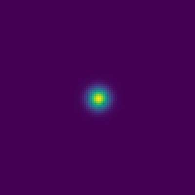
z 中央断面: t=0 のガウス塊(左)が等方に拡散(右、100 step)
Formurae ソース全文(diffusion1d.fe・19 行)
-- The 1D diffusion equation: du/dt = kappa * laplacian(u)
dimension 1
axes x
param κ = 1.0
param dt = 0.1*dx*dx
extern exp
def Δ u = ∂ 2 1 x u
raw gauss = fun(x) exp(-((x-(total_grid_x*dx/2))/(5*dx))**2)
field u : scalar
init:
u = gauss(i*dx)
step:
u' = u + dt * κ * Δ u生成された Egison(中間形・fec 出力)(diffusion1d.egi・153 行)
-- -- GENERATED by fec (the Formurae compiler) from diffusion1d.fe -- edit the .fe, not this file -- declare symbol kappa, dt declare symbol x, hx def feDim : Integer := 1 def feAxes : [String] := ["x"] def feAxisIds : [Integer] := [1] def feCoords : Vector MathValue := [| x |] def feHsteps : Vector MathValue := [| hx |] def coords : Vector MathValue := feCoords def hsteps : Vector MathValue := feHsteps def axisName (a: Integer) : String := nth a ["i"] def symName (v: String) : String := match v as string with | #"hx" -> "dx" | #"x" -> "(i*dx)" | _ -> v def shift (a: Integer) (c: MathValue) (u: MathValue) : MathValue := substitute [(feCoords_a, feCoords_a + c * feHsteps_a)] u def dC (a: Integer) (u: MathValue) : MathValue := (shift a 1 u - shift a (-1) u) / (2 * feHsteps_a) def dC2 (a: Integer) (u: MathValue) : MathValue := (shift a 1 u - 2 * u + shift a (-1) u) / ((feHsteps_a) ^ 2) def dF (a: Integer) (u: MathValue) : MathValue := (shift a 1 u - u) / feHsteps_a def dB (a: Integer) (u: MathValue) : MathValue := (u - shift a (-1) u) / feHsteps_a def dTaylor (m: Integer) (ks: [MathValue]) (a: Integer) (u: MathValue) : MathValue := sum (map (\(c, k) -> c * shift a k u) (zip (taylorStencil m ks) ks)) / (feHsteps_a ^ m) def axisId (axis: MathValue) : Integer := match axis as mathValue with | symbol $v _ -> match v as string with | #"x" -> 1 | _ -> 0 def ∂ (m: Integer) (r: Integer) (axis: MathValue) (u: MathValue) : MathValue := let a := axisId axis in if m = 1 && r = 1 then dC a u else if m = 2 && r = 1 then dC2 a u else dTaylor m (between (0 - r) r) a u def offsetSuffix (o: MathValue) : String := match o as mathValue with | #0 -> "" | #1 -> "+1" | #2 -> "+2" | #3 -> "+3" | #(-1) -> "-1" | #(-2) -> "-2" | #(-3) -> "-3" | #(1 / 2) -> "+1/2" | #(-1 / 2) -> "-1/2" | #(3 / 2) -> "+3/2" | #(-3 / 2) -> "-3/2" | _ -> S.concat ["+(", show o, ")"] def gridIndex (a: Integer) (arg: MathValue) : String := S.append (axisName a) (offsetSuffix ((arg - coords_a) / hsteps_a)) def fmrFieldName (nm: String) : String := match nm as string with | _ -> nm def gridRef (g: MathValue) (args: [MathValue]) : String := S.concat [fmrFieldName (show g), "[", S.intercalate "," (map (\(a, arg) -> gridIndex a arg) (zip feAxisIds args)), "]"] def wrapNeg (s: String) : String := if S.head s = '-' then S.concat ["(", s, ")"] else s def applyName g := mathFunctionName g def showFactor (f: MathValue) : String := match f as mathValue with | func $g $args -> gridRef g args | apply1 $g $a1 -> S.concat [applyName g, "(", showFmr a1, ")"] | quote $e -> S.concat ["(", showFmr e, ")"] | symbol $v _ -> symName v | _ -> S.concat ["(", showFmr f, ")"] def showPow (f: MathValue) (n: Integer) : String := if n = 1 then showFactor f else S.concat [showFactor f, "**", show n] def coefPQ (c: MathValue) : (String, String) := match c as mathValue with | $p / $q -> (show p, show q) def showTerm (t: MathValue) : String := match t as mathValue with | term $c $xs -> let (cp, cq) := coefPQ c in let numFs := map (\(f, n) -> showPow f n) (filter (\(f, n) -> n > 0) xs) in let denFs := map (\(f, n) -> showPow f (0 - n)) (filter (\(f, n) -> n < 0) xs) in let numParts := if cp = "1" && not (numFs = []) then numFs else wrapNeg cp :: numFs in let denParts := (if cq = "1" then [] else [cq]) ++ denFs in let numStr := S.intercalate "*" numParts in if denParts = [] then numStr else S.concat [numStr, "/(", S.intercalate "*" denParts, ")"] def showPoly (p: MathValue) : String := match p as mathValue with | #0 -> "0" | poly $ts / _ -> S.intercalate " + " (map showTerm ts) def showFmr (e: MathValue) : String := match e as mathValue with | #0 -> "0" | $nu / #1 -> showPoly nu | $nu / $de -> S.concat ["(", showPoly nu, ")/(", showPoly de, ")"] def fmrEq (lhs: String) (rhs: MathValue) : String := S.concat [" ", lhs, " = ", showFmr rhs] def feGridPoint : String := S.intercalate "," (map axisName feAxisIds) def fmrInit (lhs: String) (rhs: MathValue) : String := S.concat [" ", lhs, "[", feGridPoint, "] = ", showFmr rhs] def componentEqs (names: [String]) (values: [MathValue]) : [String] := map (\(name, value) -> fmrEq (S.append name "'") value) (zip names values) def scalarEq (nm: String) (c: MathValue) : [String] := [fmrEq (S.append nm "'") c] def tupleOf (xs: [String]) : String := if length xs = 1 then head xs else S.concat ["(", S.intercalate "," xs, ")"] def emitModelOn (dim: Integer) (axes: [String]) (params: [(String, String)]) (helpers: [String]) (comps: [String]) (initLines: [String]) (stepLines: [String]) : String := let compsP := map (\c -> S.append c "'") comps in S.intercalate "\n" ([ S.append "dimension :: " (show dim) , S.append "axes :: " (S.intercalate "," axes) , "" ] ++ map (\(n, v) -> S.concat ["double :: ", n, " = ", v]) params ++ [""] ++ helpers ++ [""] ++ [ S.concat ["begin function ", tupleOf comps, " = init()"] , S.concat [" double [] :: ", S.intercalate ", " comps] ] ++ initLines ++ [ "end function" , "" , S.concat ["begin function ", tupleOf compsP, " = step", "(", S.intercalate "," comps, ")"] ] ++ stepLines ++ [ "end function" ]) def u := function (x) def feParams := [("kappa", "1.0"), ("dt", "0.1*dx*dx")] def feHelpers := [ "extern function :: exp" , "gauss = fun(x) exp(-((x-(total_grid_x*dx/2))/(5*dx))**2)" ] def feComps : [String] := ["u"] def feInits := [ " u[i] = gauss(i*dx)" ] def feSteps := scalarEq "u" (u + (dt * kappa * ∂ 2 1 x u)) def main (args: [String]) : IO () := print (emitModelOn 1 ["x"] feParams feHelpers feComps feInits feSteps)
生成された Formura 全文(diffusion1d.fmr・17 行)
dimension :: 1 axes :: x double :: kappa = 1.0 double :: dt = 0.1*dx*dx extern function :: exp gauss = fun(x) exp(-((x-(total_grid_x*dx/2))/(5*dx))**2) begin function u = init() double [] :: u u[i] = gauss(i*dx) end function begin function u' = step(u) u' = u[i] + (-2)*dt*kappa*u[i]/(dx**2) + dt*kappa*u[i-1]/(dx**2) + dt*kappa*u[i+1]/(dx**2) end function
Formurae ソース全文(diffusion2d.fe・19 行)
-- The 2D diffusion equation: du/dt = kappa * laplacian(u)
dimension 2
axes x, y
param κ = 1.0
param dt = 0.1*dx*dx
extern exp
def Δ u = ∂ 2 1 x u + ∂ 2 1 y u
raw gauss = fun(x,y) exp(-((x-(total_grid_x*dx/2))/(5*dx))**2 - ((y-(total_grid_y*dy/2))/(5*dy))**2)
field u : scalar
init:
u = gauss(i*dx,j*dy)
step:
u' = u + dt * κ * Δ u生成された Egison(中間形・fec 出力)(diffusion2d.egi・156 行)
-- -- GENERATED by fec (the Formurae compiler) from diffusion2d.fe -- edit the .fe, not this file -- declare symbol kappa, dt declare symbol x, y, hx, hy def feDim : Integer := 2 def feAxes : [String] := ["x", "y"] def feAxisIds : [Integer] := [1, 2] def feCoords : Vector MathValue := [| x, y |] def feHsteps : Vector MathValue := [| hx, hy |] def coords : Vector MathValue := feCoords def hsteps : Vector MathValue := feHsteps def axisName (a: Integer) : String := nth a ["i", "j"] def symName (v: String) : String := match v as string with | #"hx" -> "dx" | #"hy" -> "dy" | #"x" -> "(i*dx)" | #"y" -> "(j*dy)" | _ -> v def shift (a: Integer) (c: MathValue) (u: MathValue) : MathValue := substitute [(feCoords_a, feCoords_a + c * feHsteps_a)] u def dC (a: Integer) (u: MathValue) : MathValue := (shift a 1 u - shift a (-1) u) / (2 * feHsteps_a) def dC2 (a: Integer) (u: MathValue) : MathValue := (shift a 1 u - 2 * u + shift a (-1) u) / ((feHsteps_a) ^ 2) def dF (a: Integer) (u: MathValue) : MathValue := (shift a 1 u - u) / feHsteps_a def dB (a: Integer) (u: MathValue) : MathValue := (u - shift a (-1) u) / feHsteps_a def dTaylor (m: Integer) (ks: [MathValue]) (a: Integer) (u: MathValue) : MathValue := sum (map (\(c, k) -> c * shift a k u) (zip (taylorStencil m ks) ks)) / (feHsteps_a ^ m) def axisId (axis: MathValue) : Integer := match axis as mathValue with | symbol $v _ -> match v as string with | #"x" -> 1 | #"y" -> 2 | _ -> 0 def ∂ (m: Integer) (r: Integer) (axis: MathValue) (u: MathValue) : MathValue := let a := axisId axis in if m = 1 && r = 1 then dC a u else if m = 2 && r = 1 then dC2 a u else dTaylor m (between (0 - r) r) a u def offsetSuffix (o: MathValue) : String := match o as mathValue with | #0 -> "" | #1 -> "+1" | #2 -> "+2" | #3 -> "+3" | #(-1) -> "-1" | #(-2) -> "-2" | #(-3) -> "-3" | #(1 / 2) -> "+1/2" | #(-1 / 2) -> "-1/2" | #(3 / 2) -> "+3/2" | #(-3 / 2) -> "-3/2" | _ -> S.concat ["+(", show o, ")"] def gridIndex (a: Integer) (arg: MathValue) : String := S.append (axisName a) (offsetSuffix ((arg - coords_a) / hsteps_a)) def fmrFieldName (nm: String) : String := match nm as string with | _ -> nm def gridRef (g: MathValue) (args: [MathValue]) : String := S.concat [fmrFieldName (show g), "[", S.intercalate "," (map (\(a, arg) -> gridIndex a arg) (zip feAxisIds args)), "]"] def wrapNeg (s: String) : String := if S.head s = '-' then S.concat ["(", s, ")"] else s def applyName g := mathFunctionName g def showFactor (f: MathValue) : String := match f as mathValue with | func $g $args -> gridRef g args | apply1 $g $a1 -> S.concat [applyName g, "(", showFmr a1, ")"] | quote $e -> S.concat ["(", showFmr e, ")"] | symbol $v _ -> symName v | _ -> S.concat ["(", showFmr f, ")"] def showPow (f: MathValue) (n: Integer) : String := if n = 1 then showFactor f else S.concat [showFactor f, "**", show n] def coefPQ (c: MathValue) : (String, String) := match c as mathValue with | $p / $q -> (show p, show q) def showTerm (t: MathValue) : String := match t as mathValue with | term $c $xs -> let (cp, cq) := coefPQ c in let numFs := map (\(f, n) -> showPow f n) (filter (\(f, n) -> n > 0) xs) in let denFs := map (\(f, n) -> showPow f (0 - n)) (filter (\(f, n) -> n < 0) xs) in let numParts := if cp = "1" && not (numFs = []) then numFs else wrapNeg cp :: numFs in let denParts := (if cq = "1" then [] else [cq]) ++ denFs in let numStr := S.intercalate "*" numParts in if denParts = [] then numStr else S.concat [numStr, "/(", S.intercalate "*" denParts, ")"] def showPoly (p: MathValue) : String := match p as mathValue with | #0 -> "0" | poly $ts / _ -> S.intercalate " + " (map showTerm ts) def showFmr (e: MathValue) : String := match e as mathValue with | #0 -> "0" | $nu / #1 -> showPoly nu | $nu / $de -> S.concat ["(", showPoly nu, ")/(", showPoly de, ")"] def fmrEq (lhs: String) (rhs: MathValue) : String := S.concat [" ", lhs, " = ", showFmr rhs] def feGridPoint : String := S.intercalate "," (map axisName feAxisIds) def fmrInit (lhs: String) (rhs: MathValue) : String := S.concat [" ", lhs, "[", feGridPoint, "] = ", showFmr rhs] def componentEqs (names: [String]) (values: [MathValue]) : [String] := map (\(name, value) -> fmrEq (S.append name "'") value) (zip names values) def scalarEq (nm: String) (c: MathValue) : [String] := [fmrEq (S.append nm "'") c] def tupleOf (xs: [String]) : String := if length xs = 1 then head xs else S.concat ["(", S.intercalate "," xs, ")"] def emitModelOn (dim: Integer) (axes: [String]) (params: [(String, String)]) (helpers: [String]) (comps: [String]) (initLines: [String]) (stepLines: [String]) : String := let compsP := map (\c -> S.append c "'") comps in S.intercalate "\n" ([ S.append "dimension :: " (show dim) , S.append "axes :: " (S.intercalate "," axes) , "" ] ++ map (\(n, v) -> S.concat ["double :: ", n, " = ", v]) params ++ [""] ++ helpers ++ [""] ++ [ S.concat ["begin function ", tupleOf comps, " = init()"] , S.concat [" double [] :: ", S.intercalate ", " comps] ] ++ initLines ++ [ "end function" , "" , S.concat ["begin function ", tupleOf compsP, " = step", "(", S.intercalate "," comps, ")"] ] ++ stepLines ++ [ "end function" ]) def u := function (x, y) def feParams := [("kappa", "1.0"), ("dt", "0.1*dx*dx")] def feHelpers := [ "extern function :: exp" , "gauss = fun(x,y) exp(-((x-(total_grid_x*dx/2))/(5*dx))**2 - ((y-(total_grid_y*dy/2))/(5*dy))**2)" ] def feComps : [String] := ["u"] def feInits := [ " u[i,j] = gauss(i*dx,j*dy)" ] def feSteps := scalarEq "u" (u + (dt * kappa * (∂ 2 1 x u + ∂ 2 1 y u))) def main (args: [String]) : IO () := print (emitModelOn 2 ["x", "y"] feParams feHelpers feComps feInits feSteps)
生成された Formura 全文(diffusion2d.fmr・17 行)
dimension :: 2 axes :: x,y double :: kappa = 1.0 double :: dt = 0.1*dx*dx extern function :: exp gauss = fun(x,y) exp(-((x-(total_grid_x*dx/2))/(5*dx))**2 - ((y-(total_grid_y*dy/2))/(5*dy))**2) begin function u = init() double [] :: u u[i,j] = gauss(i*dx,j*dy) end function begin function u' = step(u) u' = u[i,j] + (-2)*dt*kappa*u[i,j]/(dy**2) + dt*kappa*u[i,j-1]/(dy**2) + dt*kappa*u[i,j+1]/(dy**2) + (-2)*dt*kappa*u[i,j]/(dx**2) + dt*kappa*u[i-1,j]/(dx**2) + dt*kappa*u[i+1,j]/(dx**2) end function
3D は 100³格子・temporal blocking 5 で 0.19 秒、質量保存 6.4e-13。1D/2D 例も質量保存とピーク減衰を検査。
2D 発散演算子(divg)
q = ∇·V, V = (sin 2πx, sin 2πy)
Formurae ソース全文(divergence2d.fe・23 行)
-- 2D divergence smoke test with a user-defined tensor operator.
dimension 2
axes x, y
param dt = 1.0
extern sin
raw sx = fun(x) sin(6.283185307179586*x/(total_grid_x*dx))
raw sy = fun(y) sin(6.283185307179586*y/(total_grid_y*dy))
field V_i
field q : scalar
def divg X = ∂ 1 1 x X_1 + ∂ 1 1 y X_2
init:
V_i = [| sx(i*dx), sy(j*dy) |]_i
q = 0.0
step:
V'_i = V_i
q' = divg V_i生成された Egison(中間形・fec 出力)(divergence2d.egi・168 行)
-- -- GENERATED by fec (the Formurae compiler) from divergence2d.fe -- edit the .fe, not this file -- declare symbol dt declare symbol x, y, hx, hy def feDim : Integer := 2 def feAxes : [String] := ["x", "y"] def feAxisIds : [Integer] := [1, 2] def feCoords : Vector MathValue := [| x, y |] def feHsteps : Vector MathValue := [| hx, hy |] def coords : Vector MathValue := feCoords def hsteps : Vector MathValue := feHsteps def axisName (a: Integer) : String := nth a ["i", "j"] def symName (v: String) : String := match v as string with | #"hx" -> "dx" | #"hy" -> "dy" | #"x" -> "(i*dx)" | #"y" -> "(j*dy)" | _ -> v def shift (a: Integer) (c: MathValue) (u: MathValue) : MathValue := substitute [(feCoords_a, feCoords_a + c * feHsteps_a)] u def dC (a: Integer) (u: MathValue) : MathValue := (shift a 1 u - shift a (-1) u) / (2 * feHsteps_a) def dC2 (a: Integer) (u: MathValue) : MathValue := (shift a 1 u - 2 * u + shift a (-1) u) / ((feHsteps_a) ^ 2) def dF (a: Integer) (u: MathValue) : MathValue := (shift a 1 u - u) / feHsteps_a def dB (a: Integer) (u: MathValue) : MathValue := (u - shift a (-1) u) / feHsteps_a def dTaylor (m: Integer) (ks: [MathValue]) (a: Integer) (u: MathValue) : MathValue := sum (map (\(c, k) -> c * shift a k u) (zip (taylorStencil m ks) ks)) / (feHsteps_a ^ m) def axisId (axis: MathValue) : Integer := match axis as mathValue with | symbol $v _ -> match v as string with | #"x" -> 1 | #"y" -> 2 | _ -> 0 def ∂ (m: Integer) (r: Integer) (axis: MathValue) (u: MathValue) : MathValue := let a := axisId axis in if m = 1 && r = 1 then dC a u else if m = 2 && r = 1 then dC2 a u else dTaylor m (between (0 - r) r) a u def offsetSuffix (o: MathValue) : String := match o as mathValue with | #0 -> "" | #1 -> "+1" | #2 -> "+2" | #3 -> "+3" | #(-1) -> "-1" | #(-2) -> "-2" | #(-3) -> "-3" | #(1 / 2) -> "+1/2" | #(-1 / 2) -> "-1/2" | #(3 / 2) -> "+3/2" | #(-3 / 2) -> "-3/2" | _ -> S.concat ["+(", show o, ")"] def gridIndex (a: Integer) (arg: MathValue) : String := S.append (axisName a) (offsetSuffix ((arg - coords_a) / hsteps_a)) def fmrFieldName (nm: String) : String := match nm as string with | #"V_1" -> "V_down1" | #"V'_1" -> "V_down1'" | #"V_2" -> "V_down2" | #"V'_2" -> "V_down2'" | _ -> nm def gridRef (g: MathValue) (args: [MathValue]) : String := S.concat [fmrFieldName (show g), "[", S.intercalate "," (map (\(a, arg) -> gridIndex a arg) (zip feAxisIds args)), "]"] def wrapNeg (s: String) : String := if S.head s = '-' then S.concat ["(", s, ")"] else s def applyName g := mathFunctionName g def showFactor (f: MathValue) : String := match f as mathValue with | func $g $args -> gridRef g args | apply1 $g $a1 -> S.concat [applyName g, "(", showFmr a1, ")"] | quote $e -> S.concat ["(", showFmr e, ")"] | symbol $v _ -> symName v | _ -> S.concat ["(", showFmr f, ")"] def showPow (f: MathValue) (n: Integer) : String := if n = 1 then showFactor f else S.concat [showFactor f, "**", show n] def coefPQ (c: MathValue) : (String, String) := match c as mathValue with | $p / $q -> (show p, show q) def showTerm (t: MathValue) : String := match t as mathValue with | term $c $xs -> let (cp, cq) := coefPQ c in let numFs := map (\(f, n) -> showPow f n) (filter (\(f, n) -> n > 0) xs) in let denFs := map (\(f, n) -> showPow f (0 - n)) (filter (\(f, n) -> n < 0) xs) in let numParts := if cp = "1" && not (numFs = []) then numFs else wrapNeg cp :: numFs in let denParts := (if cq = "1" then [] else [cq]) ++ denFs in let numStr := S.intercalate "*" numParts in if denParts = [] then numStr else S.concat [numStr, "/(", S.intercalate "*" denParts, ")"] def showPoly (p: MathValue) : String := match p as mathValue with | #0 -> "0" | poly $ts / _ -> S.intercalate " + " (map showTerm ts) def showFmr (e: MathValue) : String := match e as mathValue with | #0 -> "0" | $nu / #1 -> showPoly nu | $nu / $de -> S.concat ["(", showPoly nu, ")/(", showPoly de, ")"] def fmrEq (lhs: String) (rhs: MathValue) : String := S.concat [" ", lhs, " = ", showFmr rhs] def feGridPoint : String := S.intercalate "," (map axisName feAxisIds) def fmrInit (lhs: String) (rhs: MathValue) : String := S.concat [" ", lhs, "[", feGridPoint, "] = ", showFmr rhs] def componentEqs (names: [String]) (values: [MathValue]) : [String] := map (\(name, value) -> fmrEq (S.append name "'") value) (zip names values) def scalarEq (nm: String) (c: MathValue) : [String] := [fmrEq (S.append nm "'") c] def tupleOf (xs: [String]) : String := if length xs = 1 then head xs else S.concat ["(", S.intercalate "," xs, ")"] def emitModelOn (dim: Integer) (axes: [String]) (params: [(String, String)]) (helpers: [String]) (comps: [String]) (initLines: [String]) (stepLines: [String]) : String := let compsP := map (\c -> S.append c "'") comps in S.intercalate "\n" ([ S.append "dimension :: " (show dim) , S.append "axes :: " (S.intercalate "," axes) , "" ] ++ map (\(n, v) -> S.concat ["double :: ", n, " = ", v]) params ++ [""] ++ helpers ++ [""] ++ [ S.concat ["begin function ", tupleOf comps, " = init()"] , S.concat [" double [] :: ", S.intercalate ", " comps] ] ++ initLines ++ [ "end function" , "" , S.concat ["begin function ", tupleOf compsP, " = step", "(", S.intercalate "," comps, ")"] ] ++ stepLines ++ [ "end function" ]) def V_i := generateTensor (\[i] -> function (x, y)) [2] def q := function (x, y) def FormuraeInternalTensorVUp_i := V_i def FormuraeInternalTensorVDown_i := V_i def feqV1 := V_1 def feqV2 := V_2 def feParams := [("dt", "1.0")] def feHelpers := [ "extern function :: sin" , "sx = fun(x) sin(6.283185307179586*x/(total_grid_x*dx))" , "sy = fun(y) sin(6.283185307179586*y/(total_grid_y*dy))" ] def feComps : [String] := ["V_down1", "V_down2", "q"] def feInits := [ " V_down1[i,j] = sx(i*dx)" , " V_down2[i,j] = sy(j*dy)" , " q[i,j] = 0.0" ] def feSteps := componentEqs ["V_down1", "V_down2"] [feqV1, feqV2] ++ scalarEq "q" (∂ 1 1 x V_1 + ∂ 1 1 y V_2) def main (args: [String]) : IO () := print (emitModelOn 2 ["x", "y"] feParams feHelpers feComps feInits feSteps)
生成された Formura 全文(divergence2d.fmr・21 行)
dimension :: 2 axes :: x,y double :: dt = 1.0 extern function :: sin sx = fun(x) sin(6.283185307179586*x/(total_grid_x*dx)) sy = fun(y) sin(6.283185307179586*y/(total_grid_y*dy)) begin function (V_down1,V_down2,q) = init() double [] :: V_down1, V_down2, q V_down1[i,j] = sx(i*dx) V_down2[i,j] = sy(j*dy) q[i,j] = 0.0 end function begin function (V_down1',V_down2',q') = step(V_down1,V_down2,q) V_down1' = V_down1[i,j] V_down2' = V_down2[i,j] q' = (-1)*V_down2[i,j-1]/(2*dy) + V_down2[i,j+1]/(2*dy) + (-1)*V_down1[i-1,j]/(2*dx) + V_down1[i+1,j]/(2*dx) end function
ユーザ定義
def divg X = ∂ 1 1 x X_1 + ∂ 1 1 y X_2 を検証。中心差分の離散記号と相対誤差 2.8e-15 で一致。Δ4: 4次精度スキーム自動導出(taylorStencil)
Σk ck km/m! = δm,2 (m=0..4)
⟹ c = (−1/12, 4/3, −5/2, 4/3, −1/12)
係数はソースのどこにも書かれていない — CAS が厳密有理数で連立を解く
係数はソースのどこにも書かれていない — CAS が厳密有理数で連立を解く
Formurae ソース全文(highorder4.fe・22 行)
-- Diffusion with a DERIVED 4th-order Laplacian Δ4: the five-point -- coefficients (-1/12, 4/3, -5/2, 4/3, -1/12) appear nowhere here -- -- Δ4 solves the Taylor conditions by exact rational Gaussian -- elimination inside the CAS. The check driver verifies the run -- against the exact discrete symbol of the derived stencil. dimension 3 axes x, y, z param κ = 1.0 param dt = 0.0005 extern sin def Δ4 u = ∂ 2 2 x u + ∂ 2 2 y u + ∂ 2 2 z u field u : scalar init: u = sin(4.0*i*dx) step: u' = u + dt * κ * Δ4 u
生成された Egison(中間形・fec 出力)(highorder4.egi・158 行)
-- -- GENERATED by fec (the Formurae compiler) from highorder4.fe -- edit the .fe, not this file -- declare symbol kappa, dt declare symbol x, y, z, hx, hy, hz def feDim : Integer := 3 def feAxes : [String] := ["x", "y", "z"] def feAxisIds : [Integer] := [1, 2, 3] def feCoords : Vector MathValue := [| x, y, z |] def feHsteps : Vector MathValue := [| hx, hy, hz |] def coords : Vector MathValue := feCoords def hsteps : Vector MathValue := feHsteps def axisName (a: Integer) : String := nth a ["i", "j", "k"] def symName (v: String) : String := match v as string with | #"hx" -> "dx" | #"hy" -> "dy" | #"hz" -> "dz" | #"x" -> "(i*dx)" | #"y" -> "(j*dy)" | #"z" -> "(k*dz)" | _ -> v def shift (a: Integer) (c: MathValue) (u: MathValue) : MathValue := substitute [(feCoords_a, feCoords_a + c * feHsteps_a)] u def dC (a: Integer) (u: MathValue) : MathValue := (shift a 1 u - shift a (-1) u) / (2 * feHsteps_a) def dC2 (a: Integer) (u: MathValue) : MathValue := (shift a 1 u - 2 * u + shift a (-1) u) / ((feHsteps_a) ^ 2) def dF (a: Integer) (u: MathValue) : MathValue := (shift a 1 u - u) / feHsteps_a def dB (a: Integer) (u: MathValue) : MathValue := (u - shift a (-1) u) / feHsteps_a def dTaylor (m: Integer) (ks: [MathValue]) (a: Integer) (u: MathValue) : MathValue := sum (map (\(c, k) -> c * shift a k u) (zip (taylorStencil m ks) ks)) / (feHsteps_a ^ m) def axisId (axis: MathValue) : Integer := match axis as mathValue with | symbol $v _ -> match v as string with | #"x" -> 1 | #"y" -> 2 | #"z" -> 3 | _ -> 0 def ∂ (m: Integer) (r: Integer) (axis: MathValue) (u: MathValue) : MathValue := let a := axisId axis in if m = 1 && r = 1 then dC a u else if m = 2 && r = 1 then dC2 a u else dTaylor m (between (0 - r) r) a u def offsetSuffix (o: MathValue) : String := match o as mathValue with | #0 -> "" | #1 -> "+1" | #2 -> "+2" | #3 -> "+3" | #(-1) -> "-1" | #(-2) -> "-2" | #(-3) -> "-3" | #(1 / 2) -> "+1/2" | #(-1 / 2) -> "-1/2" | #(3 / 2) -> "+3/2" | #(-3 / 2) -> "-3/2" | _ -> S.concat ["+(", show o, ")"] def gridIndex (a: Integer) (arg: MathValue) : String := S.append (axisName a) (offsetSuffix ((arg - coords_a) / hsteps_a)) def fmrFieldName (nm: String) : String := match nm as string with | _ -> nm def gridRef (g: MathValue) (args: [MathValue]) : String := S.concat [fmrFieldName (show g), "[", S.intercalate "," (map (\(a, arg) -> gridIndex a arg) (zip feAxisIds args)), "]"] def wrapNeg (s: String) : String := if S.head s = '-' then S.concat ["(", s, ")"] else s def applyName g := mathFunctionName g def showFactor (f: MathValue) : String := match f as mathValue with | func $g $args -> gridRef g args | apply1 $g $a1 -> S.concat [applyName g, "(", showFmr a1, ")"] | quote $e -> S.concat ["(", showFmr e, ")"] | symbol $v _ -> symName v | _ -> S.concat ["(", showFmr f, ")"] def showPow (f: MathValue) (n: Integer) : String := if n = 1 then showFactor f else S.concat [showFactor f, "**", show n] def coefPQ (c: MathValue) : (String, String) := match c as mathValue with | $p / $q -> (show p, show q) def showTerm (t: MathValue) : String := match t as mathValue with | term $c $xs -> let (cp, cq) := coefPQ c in let numFs := map (\(f, n) -> showPow f n) (filter (\(f, n) -> n > 0) xs) in let denFs := map (\(f, n) -> showPow f (0 - n)) (filter (\(f, n) -> n < 0) xs) in let numParts := if cp = "1" && not (numFs = []) then numFs else wrapNeg cp :: numFs in let denParts := (if cq = "1" then [] else [cq]) ++ denFs in let numStr := S.intercalate "*" numParts in if denParts = [] then numStr else S.concat [numStr, "/(", S.intercalate "*" denParts, ")"] def showPoly (p: MathValue) : String := match p as mathValue with | #0 -> "0" | poly $ts / _ -> S.intercalate " + " (map showTerm ts) def showFmr (e: MathValue) : String := match e as mathValue with | #0 -> "0" | $nu / #1 -> showPoly nu | $nu / $de -> S.concat ["(", showPoly nu, ")/(", showPoly de, ")"] def fmrEq (lhs: String) (rhs: MathValue) : String := S.concat [" ", lhs, " = ", showFmr rhs] def feGridPoint : String := S.intercalate "," (map axisName feAxisIds) def fmrInit (lhs: String) (rhs: MathValue) : String := S.concat [" ", lhs, "[", feGridPoint, "] = ", showFmr rhs] def componentEqs (names: [String]) (values: [MathValue]) : [String] := map (\(name, value) -> fmrEq (S.append name "'") value) (zip names values) def scalarEq (nm: String) (c: MathValue) : [String] := [fmrEq (S.append nm "'") c] def tupleOf (xs: [String]) : String := if length xs = 1 then head xs else S.concat ["(", S.intercalate "," xs, ")"] def emitModelOn (dim: Integer) (axes: [String]) (params: [(String, String)]) (helpers: [String]) (comps: [String]) (initLines: [String]) (stepLines: [String]) : String := let compsP := map (\c -> S.append c "'") comps in S.intercalate "\n" ([ S.append "dimension :: " (show dim) , S.append "axes :: " (S.intercalate "," axes) , "" ] ++ map (\(n, v) -> S.concat ["double :: ", n, " = ", v]) params ++ [""] ++ helpers ++ [""] ++ [ S.concat ["begin function ", tupleOf comps, " = init()"] , S.concat [" double [] :: ", S.intercalate ", " comps] ] ++ initLines ++ [ "end function" , "" , S.concat ["begin function ", tupleOf compsP, " = step", "(", S.intercalate "," comps, ")"] ] ++ stepLines ++ [ "end function" ]) def u := function (x, y, z) def feParams := [("kappa", "1.0"), ("dt", "0.0005")] def feHelpers := [ "extern function :: sin" ] def feComps : [String] := ["u"] def feInits := [ " u[i,j,k] = sin(4.0*i*dx)" ] def feSteps := scalarEq "u" (u + (dt * kappa * (∂ 2 2 x u + ∂ 2 2 y u + ∂ 2 2 z u))) def main (args: [String]) : IO () := print (emitModelOn 3 ["x", "y", "z"] feParams feHelpers feComps feInits feSteps)
生成された Formura 全文(highorder4.fmr・16 行)
dimension :: 3 axes :: x,y,z double :: kappa = 1.0 double :: dt = 0.0005 extern function :: sin begin function u = init() double [] :: u u[i,j,k] = sin(4.0*i*dx) end function begin function u' = step(u) u' = u[i,j,k] + (-5)*dt*kappa*u[i,j,k]/(2*dz**2) + 4*dt*kappa*u[i,j,k-1]/(3*dz**2) + (-1)*dt*kappa*u[i,j,k-2]/(12*dz**2) + 4*dt*kappa*u[i,j,k+1]/(3*dz**2) + (-1)*dt*kappa*u[i,j,k+2]/(12*dz**2) + (-5)*dt*kappa*u[i,j,k]/(2*dy**2) + 4*dt*kappa*u[i,j-1,k]/(3*dy**2) + (-1)*dt*kappa*u[i,j-2,k]/(12*dy**2) + 4*dt*kappa*u[i,j+1,k]/(3*dy**2) + (-1)*dt*kappa*u[i,j+2,k]/(12*dy**2) + (-5)*dt*kappa*u[i,j,k]/(2*dx**2) + 4*dt*kappa*u[i-1,j,k]/(3*dx**2) + (-1)*dt*kappa*u[i-2,j,k]/(12*dx**2) + 4*dt*kappa*u[i+1,j,k]/(3*dx**2) + (-1)*dt*kappa*u[i+2,j,k]/(12*dx**2) end function
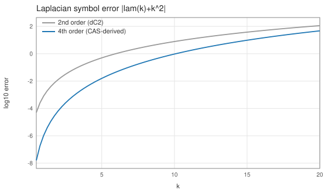
ラプラシアンの離散シンボル誤差 |λ(k)+k²|: 導出4次(青)は2次(灰)より約2桁下
単一モード振幅比 = 厳密離散シンボル (1+λ₄dt)ⁿ に 4.4e-16 で一致、
残差は4次理論値 k⁶h⁴/90 の 98.6%。
Dirichlet 壁の拡散(fork の境界条件)
∂tu = κ∇²u, u|壁 = 0
λ = −(4κ/h²) sin²(π/2(N+1)) — ゴースト壁つき離散固有値
λ = −(4κ/h²) sin²(π/2(N+1)) — ゴースト壁つき離散固有値
Formurae ソース全文(dirichlet_diffusion.fe・24 行)
-- Diffusion between two cold walls: the yaml declares -- boundary: [fixed 0.0, periodic, periodic] -- (the fork's boundary support), so the physics stays the periodic -- one-liner. The initial condition is the fundamental discrete -- Dirichlet eigenmode, whose exact decay (1 + lam dt)^n the check -- driver asserts to machine precision. dimension 3 axes x, y, z param κ = 1.0 param dt = 0.00002 extern sin def Δ u = ∂ 2 1 x u + ∂ 2 1 y u + ∂ 2 1 z u raw # fundamental Dirichlet mode: nodes at the ghost walls i = -1, i = 64 field u : scalar init: u = sin(3.141592653589793*(i + 1.0)/65.0) step: u' = u + dt * κ * Δ u
生成された Egison(中間形・fec 出力)(dirichlet_diffusion.egi・159 行)
-- -- GENERATED by fec (the Formurae compiler) from dirichlet_diffusion.fe -- edit the .fe, not this file -- declare symbol kappa, dt declare symbol x, y, z, hx, hy, hz def feDim : Integer := 3 def feAxes : [String] := ["x", "y", "z"] def feAxisIds : [Integer] := [1, 2, 3] def feCoords : Vector MathValue := [| x, y, z |] def feHsteps : Vector MathValue := [| hx, hy, hz |] def coords : Vector MathValue := feCoords def hsteps : Vector MathValue := feHsteps def axisName (a: Integer) : String := nth a ["i", "j", "k"] def symName (v: String) : String := match v as string with | #"hx" -> "dx" | #"hy" -> "dy" | #"hz" -> "dz" | #"x" -> "(i*dx)" | #"y" -> "(j*dy)" | #"z" -> "(k*dz)" | _ -> v def shift (a: Integer) (c: MathValue) (u: MathValue) : MathValue := substitute [(feCoords_a, feCoords_a + c * feHsteps_a)] u def dC (a: Integer) (u: MathValue) : MathValue := (shift a 1 u - shift a (-1) u) / (2 * feHsteps_a) def dC2 (a: Integer) (u: MathValue) : MathValue := (shift a 1 u - 2 * u + shift a (-1) u) / ((feHsteps_a) ^ 2) def dF (a: Integer) (u: MathValue) : MathValue := (shift a 1 u - u) / feHsteps_a def dB (a: Integer) (u: MathValue) : MathValue := (u - shift a (-1) u) / feHsteps_a def dTaylor (m: Integer) (ks: [MathValue]) (a: Integer) (u: MathValue) : MathValue := sum (map (\(c, k) -> c * shift a k u) (zip (taylorStencil m ks) ks)) / (feHsteps_a ^ m) def axisId (axis: MathValue) : Integer := match axis as mathValue with | symbol $v _ -> match v as string with | #"x" -> 1 | #"y" -> 2 | #"z" -> 3 | _ -> 0 def ∂ (m: Integer) (r: Integer) (axis: MathValue) (u: MathValue) : MathValue := let a := axisId axis in if m = 1 && r = 1 then dC a u else if m = 2 && r = 1 then dC2 a u else dTaylor m (between (0 - r) r) a u def offsetSuffix (o: MathValue) : String := match o as mathValue with | #0 -> "" | #1 -> "+1" | #2 -> "+2" | #3 -> "+3" | #(-1) -> "-1" | #(-2) -> "-2" | #(-3) -> "-3" | #(1 / 2) -> "+1/2" | #(-1 / 2) -> "-1/2" | #(3 / 2) -> "+3/2" | #(-3 / 2) -> "-3/2" | _ -> S.concat ["+(", show o, ")"] def gridIndex (a: Integer) (arg: MathValue) : String := S.append (axisName a) (offsetSuffix ((arg - coords_a) / hsteps_a)) def fmrFieldName (nm: String) : String := match nm as string with | _ -> nm def gridRef (g: MathValue) (args: [MathValue]) : String := S.concat [fmrFieldName (show g), "[", S.intercalate "," (map (\(a, arg) -> gridIndex a arg) (zip feAxisIds args)), "]"] def wrapNeg (s: String) : String := if S.head s = '-' then S.concat ["(", s, ")"] else s def applyName g := mathFunctionName g def showFactor (f: MathValue) : String := match f as mathValue with | func $g $args -> gridRef g args | apply1 $g $a1 -> S.concat [applyName g, "(", showFmr a1, ")"] | quote $e -> S.concat ["(", showFmr e, ")"] | symbol $v _ -> symName v | _ -> S.concat ["(", showFmr f, ")"] def showPow (f: MathValue) (n: Integer) : String := if n = 1 then showFactor f else S.concat [showFactor f, "**", show n] def coefPQ (c: MathValue) : (String, String) := match c as mathValue with | $p / $q -> (show p, show q) def showTerm (t: MathValue) : String := match t as mathValue with | term $c $xs -> let (cp, cq) := coefPQ c in let numFs := map (\(f, n) -> showPow f n) (filter (\(f, n) -> n > 0) xs) in let denFs := map (\(f, n) -> showPow f (0 - n)) (filter (\(f, n) -> n < 0) xs) in let numParts := if cp = "1" && not (numFs = []) then numFs else wrapNeg cp :: numFs in let denParts := (if cq = "1" then [] else [cq]) ++ denFs in let numStr := S.intercalate "*" numParts in if denParts = [] then numStr else S.concat [numStr, "/(", S.intercalate "*" denParts, ")"] def showPoly (p: MathValue) : String := match p as mathValue with | #0 -> "0" | poly $ts / _ -> S.intercalate " + " (map showTerm ts) def showFmr (e: MathValue) : String := match e as mathValue with | #0 -> "0" | $nu / #1 -> showPoly nu | $nu / $de -> S.concat ["(", showPoly nu, ")/(", showPoly de, ")"] def fmrEq (lhs: String) (rhs: MathValue) : String := S.concat [" ", lhs, " = ", showFmr rhs] def feGridPoint : String := S.intercalate "," (map axisName feAxisIds) def fmrInit (lhs: String) (rhs: MathValue) : String := S.concat [" ", lhs, "[", feGridPoint, "] = ", showFmr rhs] def componentEqs (names: [String]) (values: [MathValue]) : [String] := map (\(name, value) -> fmrEq (S.append name "'") value) (zip names values) def scalarEq (nm: String) (c: MathValue) : [String] := [fmrEq (S.append nm "'") c] def tupleOf (xs: [String]) : String := if length xs = 1 then head xs else S.concat ["(", S.intercalate "," xs, ")"] def emitModelOn (dim: Integer) (axes: [String]) (params: [(String, String)]) (helpers: [String]) (comps: [String]) (initLines: [String]) (stepLines: [String]) : String := let compsP := map (\c -> S.append c "'") comps in S.intercalate "\n" ([ S.append "dimension :: " (show dim) , S.append "axes :: " (S.intercalate "," axes) , "" ] ++ map (\(n, v) -> S.concat ["double :: ", n, " = ", v]) params ++ [""] ++ helpers ++ [""] ++ [ S.concat ["begin function ", tupleOf comps, " = init()"] , S.concat [" double [] :: ", S.intercalate ", " comps] ] ++ initLines ++ [ "end function" , "" , S.concat ["begin function ", tupleOf compsP, " = step", "(", S.intercalate "," comps, ")"] ] ++ stepLines ++ [ "end function" ]) def u := function (x, y, z) def feParams := [("kappa", "1.0"), ("dt", "0.00002")] def feHelpers := [ "extern function :: sin" , "# fundamental Dirichlet mode: nodes at the ghost walls i = -1, i = 64" ] def feComps : [String] := ["u"] def feInits := [ " u[i,j,k] = sin(3.141592653589793*(i + 1.0)/65.0)" ] def feSteps := scalarEq "u" (u + (dt * kappa * (∂ 2 1 x u + ∂ 2 1 y u + ∂ 2 1 z u))) def main (args: [String]) : IO () := print (emitModelOn 3 ["x", "y", "z"] feParams feHelpers feComps feInits feSteps)
生成された Formura 全文(dirichlet_diffusion.fmr・17 行)
dimension :: 3
axes :: x,y,z
double :: kappa = 1.0
double :: dt = 0.00002
extern function :: sin
# fundamental Dirichlet mode: nodes at the ghost walls i = -1, i = 64
begin function u = init()
double [] :: u
u[i,j,k] = sin(3.141592653589793*(i + 1.0)/65.0)
end function
begin function u' = step(u)
u' = u[i,j,k] + (-2)*dt*kappa*u[i,j,k]/(dz**2) + dt*kappa*u[i,j,k-1]/(dz**2) + dt*kappa*u[i,j,k+1]/(dz**2) + (-2)*dt*kappa*u[i,j,k]/(dy**2) + dt*kappa*u[i,j-1,k]/(dy**2) + dt*kappa*u[i,j+1,k]/(dy**2) + (-2)*dt*kappa*u[i,j,k]/(dx**2) + dt*kappa*u[i-1,j,k]/(dx**2) + dt*kappa*u[i+1,j,k]/(dx**2)
end function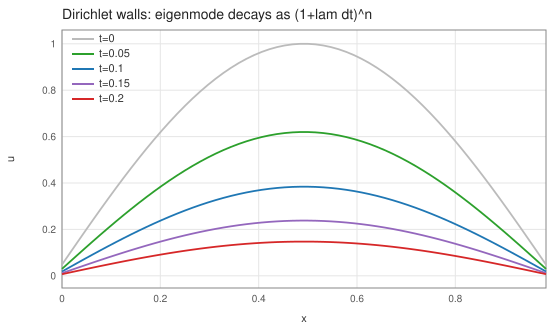
冷壁間の基本固有モードが形を保ったまま減衰(t=0 → 0.2)
厳密減衰 (1+λdt)ⁿ を 6.8e-14 で再現、モード純度 1.2e-15。
波動(スタガード格子 = yeeRef 機構)
Maxwell(collocated)
∂tE = ∇×B, ∂tB = −∇×E (c=1)
回転は
use ではなく、def curl X = withSymbols [i] ... として .fe 内で直接定義している。Formurae ソース全文(maxwell3d.fe・25 行)
-- Maxwell's equations in vacuum (c = 1), collocated grid -- dE/dt = curl B -- dB/dt = -curl E' (the B update uses the updated E': symplectic) -- curl is defined directly in the Formurae source using tensor indices. dimension 3 axes x, y, z param dt = 0.1*dx extern exp raw gauss1 = fun(x) exp(-((x-(total_grid_x*dx/2))/(8*dx))**2) field E_i field B_i def curl X = withSymbols [i] delta_i~1 * (∂ 1 1 y X_3 - ∂ 1 1 z X_2) + delta_i~2 * (∂ 1 1 z X_1 - ∂ 1 1 x X_3) + delta_i~3 * (∂ 1 1 x X_2 - ∂ 1 1 y X_1) init: E_i = [| 0, gauss1(i*dx), 0 |]_i B_i = [| 0, 0, gauss1(i*dx) |]_i step: E'_i = E_i + dt * curl B_i B'_i = B_i - dt * curl E'_i
生成された Egison(中間形・fec 出力)(maxwell3d.egi・190 行)
-- -- GENERATED by fec (the Formurae compiler) from maxwell3d.fe -- edit the .fe, not this file -- declare symbol dt declare symbol x, y, z, hx, hy, hz def feDim : Integer := 3 def feAxes : [String] := ["x", "y", "z"] def feAxisIds : [Integer] := [1, 2, 3] def feCoords : Vector MathValue := [| x, y, z |] def feHsteps : Vector MathValue := [| hx, hy, hz |] def coords : Vector MathValue := feCoords def hsteps : Vector MathValue := feHsteps def axisName (a: Integer) : String := nth a ["i", "j", "k"] def symName (v: String) : String := match v as string with | #"hx" -> "dx" | #"hy" -> "dy" | #"hz" -> "dz" | #"x" -> "(i*dx)" | #"y" -> "(j*dy)" | #"z" -> "(k*dz)" | _ -> v def shift (a: Integer) (c: MathValue) (u: MathValue) : MathValue := substitute [(feCoords_a, feCoords_a + c * feHsteps_a)] u def dC (a: Integer) (u: MathValue) : MathValue := (shift a 1 u - shift a (-1) u) / (2 * feHsteps_a) def dC2 (a: Integer) (u: MathValue) : MathValue := (shift a 1 u - 2 * u + shift a (-1) u) / ((feHsteps_a) ^ 2) def dF (a: Integer) (u: MathValue) : MathValue := (shift a 1 u - u) / feHsteps_a def dB (a: Integer) (u: MathValue) : MathValue := (u - shift a (-1) u) / feHsteps_a def dTaylor (m: Integer) (ks: [MathValue]) (a: Integer) (u: MathValue) : MathValue := sum (map (\(c, k) -> c * shift a k u) (zip (taylorStencil m ks) ks)) / (feHsteps_a ^ m) def axisId (axis: MathValue) : Integer := match axis as mathValue with | symbol $v _ -> match v as string with | #"x" -> 1 | #"y" -> 2 | #"z" -> 3 | _ -> 0 def ∂ (m: Integer) (r: Integer) (axis: MathValue) (u: MathValue) : MathValue := let a := axisId axis in if m = 1 && r = 1 then dC a u else if m = 2 && r = 1 then dC2 a u else dTaylor m (between (0 - r) r) a u def offsetSuffix (o: MathValue) : String := match o as mathValue with | #0 -> "" | #1 -> "+1" | #2 -> "+2" | #3 -> "+3" | #(-1) -> "-1" | #(-2) -> "-2" | #(-3) -> "-3" | #(1 / 2) -> "+1/2" | #(-1 / 2) -> "-1/2" | #(3 / 2) -> "+3/2" | #(-3 / 2) -> "-3/2" | _ -> S.concat ["+(", show o, ")"] def gridIndex (a: Integer) (arg: MathValue) : String := S.append (axisName a) (offsetSuffix ((arg - coords_a) / hsteps_a)) def fmrFieldName (nm: String) : String := match nm as string with | #"E_1" -> "E_down1" | #"E'_1" -> "E_down1'" | #"E_2" -> "E_down2" | #"E'_2" -> "E_down2'" | #"E_3" -> "E_down3" | #"E'_3" -> "E_down3'" | #"B_1" -> "B_down1" | #"B'_1" -> "B_down1'" | #"B_2" -> "B_down2" | #"B'_2" -> "B_down2'" | #"B_3" -> "B_down3" | #"B'_3" -> "B_down3'" | _ -> nm def gridRef (g: MathValue) (args: [MathValue]) : String := S.concat [fmrFieldName (show g), "[", S.intercalate "," (map (\(a, arg) -> gridIndex a arg) (zip feAxisIds args)), "]"] def wrapNeg (s: String) : String := if S.head s = '-' then S.concat ["(", s, ")"] else s def applyName g := mathFunctionName g def showFactor (f: MathValue) : String := match f as mathValue with | func $g $args -> gridRef g args | apply1 $g $a1 -> S.concat [applyName g, "(", showFmr a1, ")"] | quote $e -> S.concat ["(", showFmr e, ")"] | symbol $v _ -> symName v | _ -> S.concat ["(", showFmr f, ")"] def showPow (f: MathValue) (n: Integer) : String := if n = 1 then showFactor f else S.concat [showFactor f, "**", show n] def coefPQ (c: MathValue) : (String, String) := match c as mathValue with | $p / $q -> (show p, show q) def showTerm (t: MathValue) : String := match t as mathValue with | term $c $xs -> let (cp, cq) := coefPQ c in let numFs := map (\(f, n) -> showPow f n) (filter (\(f, n) -> n > 0) xs) in let denFs := map (\(f, n) -> showPow f (0 - n)) (filter (\(f, n) -> n < 0) xs) in let numParts := if cp = "1" && not (numFs = []) then numFs else wrapNeg cp :: numFs in let denParts := (if cq = "1" then [] else [cq]) ++ denFs in let numStr := S.intercalate "*" numParts in if denParts = [] then numStr else S.concat [numStr, "/(", S.intercalate "*" denParts, ")"] def showPoly (p: MathValue) : String := match p as mathValue with | #0 -> "0" | poly $ts / _ -> S.intercalate " + " (map showTerm ts) def showFmr (e: MathValue) : String := match e as mathValue with | #0 -> "0" | $nu / #1 -> showPoly nu | $nu / $de -> S.concat ["(", showPoly nu, ")/(", showPoly de, ")"] def fmrEq (lhs: String) (rhs: MathValue) : String := S.concat [" ", lhs, " = ", showFmr rhs] def feGridPoint : String := S.intercalate "," (map axisName feAxisIds) def fmrInit (lhs: String) (rhs: MathValue) : String := S.concat [" ", lhs, "[", feGridPoint, "] = ", showFmr rhs] def componentEqs (names: [String]) (values: [MathValue]) : [String] := map (\(name, value) -> fmrEq (S.append name "'") value) (zip names values) def scalarEq (nm: String) (c: MathValue) : [String] := [fmrEq (S.append nm "'") c] def tupleOf (xs: [String]) : String := if length xs = 1 then head xs else S.concat ["(", S.intercalate "," xs, ")"] def emitModelOn (dim: Integer) (axes: [String]) (params: [(String, String)]) (helpers: [String]) (comps: [String]) (initLines: [String]) (stepLines: [String]) : String := let compsP := map (\c -> S.append c "'") comps in S.intercalate "\n" ([ S.append "dimension :: " (show dim) , S.append "axes :: " (S.intercalate "," axes) , "" ] ++ map (\(n, v) -> S.concat ["double :: ", n, " = ", v]) params ++ [""] ++ helpers ++ [""] ++ [ S.concat ["begin function ", tupleOf comps, " = init()"] , S.concat [" double [] :: ", S.intercalate ", " comps] ] ++ initLines ++ [ "end function" , "" , S.concat ["begin function ", tupleOf compsP, " = step", "(", S.intercalate "," comps, ")"] ] ++ stepLines ++ [ "end function" ]) def E_i := generateTensor (\[i] -> function (x, y, z)) [3] def B_i := generateTensor (\[i] -> function (x, y, z)) [3] def E'_i := generateTensor (\[i] -> function (x, y, z)) [3] def FormuraeInternalTensorEUp_i := E_i def FormuraeInternalTensorEDown_i := E_i def FormuraeInternalTensorBUp_i := B_i def FormuraeInternalTensorBDown_i := B_i def FormuraeInternalTensorEUp'_i := E'_i def FormuraeInternalTensorEDown'_i := E'_i def feqE1 := E_1 + (dt * ((1 * (∂ 1 1 y B_3 - ∂ 1 1 z B_2)))) def feqE2 := E_2 + (dt * ((0 * (∂ 1 1 y B_3 - ∂ 1 1 z B_2)) + (1 * (∂ 1 1 z B_1 - ∂ 1 1 x B_3)))) def feqE3 := E_3 + (dt * ((0 * (∂ 1 1 y B_3 - ∂ 1 1 z B_2)) + (1 * (∂ 1 1 x B_2 - ∂ 1 1 y B_1)))) def feqB1 := B_1 - (dt * ((1 * (∂ 1 1 y E'_3 - ∂ 1 1 z E'_2)))) def feqB2 := B_2 - (dt * ((0 * (∂ 1 1 y E'_3 - ∂ 1 1 z E'_2)) + (1 * (∂ 1 1 z E'_1 - ∂ 1 1 x E'_3)))) def feqB3 := B_3 - (dt * ((0 * (∂ 1 1 y E'_3 - ∂ 1 1 z E'_2)) + (1 * (∂ 1 1 x E'_2 - ∂ 1 1 y E'_1)))) def feParams := [("dt", "0.1*dx")] def feHelpers := [ "extern function :: exp" , "gauss1 = fun(x) exp(-((x-(total_grid_x*dx/2))/(8*dx))**2)" ] def feComps : [String] := ["E_down1", "E_down2", "E_down3", "B_down1", "B_down2", "B_down3"] def feInits := [ " E_down1[i,j,k] = 0" , " E_down2[i,j,k] = gauss1(i*dx)" , " E_down3[i,j,k] = 0" , " B_down1[i,j,k] = 0" , " B_down2[i,j,k] = 0" , " B_down3[i,j,k] = gauss1(i*dx)" ] def feSteps := componentEqs ["E_down1", "E_down2", "E_down3"] [feqE1, feqE2, feqE3] ++ componentEqs ["B_down1", "B_down2", "B_down3"] [feqB1, feqB2, feqB3] def main (args: [String]) : IO () := print (emitModelOn 3 ["x", "y", "z"] feParams feHelpers feComps feInits feSteps)
生成された Formura 全文(maxwell3d.fmr・26 行)
dimension :: 3 axes :: x,y,z double :: dt = 0.1*dx extern function :: exp gauss1 = fun(x) exp(-((x-(total_grid_x*dx/2))/(8*dx))**2) begin function (E_down1,E_down2,E_down3,B_down1,B_down2,B_down3) = init() double [] :: E_down1, E_down2, E_down3, B_down1, B_down2, B_down3 E_down1[i,j,k] = 0 E_down2[i,j,k] = gauss1(i*dx) E_down3[i,j,k] = 0 B_down1[i,j,k] = 0 B_down2[i,j,k] = 0 B_down3[i,j,k] = gauss1(i*dx) end function begin function (E_down1',E_down2',E_down3',B_down1',B_down2',B_down3') = step(E_down1,E_down2,E_down3,B_down1,B_down2,B_down3) E_down1' = E_down1[i,j,k] + (-1)*B_down3[i,j-1,k]*dt/(2*dy) + B_down3[i,j+1,k]*dt/(2*dy) + B_down2[i,j,k-1]*dt/(2*dz) + (-1)*B_down2[i,j,k+1]*dt/(2*dz) E_down2' = E_down2[i,j,k] + B_down3[i-1,j,k]*dt/(2*dx) + (-1)*B_down3[i+1,j,k]*dt/(2*dx) + (-1)*B_down1[i,j,k-1]*dt/(2*dz) + B_down1[i,j,k+1]*dt/(2*dz) E_down3' = E_down3[i,j,k] + (-1)*B_down2[i-1,j,k]*dt/(2*dx) + B_down2[i+1,j,k]*dt/(2*dx) + B_down1[i,j-1,k]*dt/(2*dy) + (-1)*B_down1[i,j+1,k]*dt/(2*dy) B_down1' = E_down3'[i,j-1,k]*dt/(2*dy) + (-1)*E_down3'[i,j+1,k]*dt/(2*dy) + (-1)*E_down2'[i,j,k-1]*dt/(2*dz) + E_down2'[i,j,k+1]*dt/(2*dz) + B_down1[i,j,k] B_down2' = (-1)*E_down3'[i-1,j,k]*dt/(2*dx) + E_down3'[i+1,j,k]*dt/(2*dx) + E_down1'[i,j,k-1]*dt/(2*dz) + (-1)*E_down1'[i,j,k+1]*dt/(2*dz) + B_down2[i,j,k] B_down3' = E_down2'[i-1,j,k]*dt/(2*dx) + (-1)*E_down2'[i+1,j,k]*dt/(2*dx) + (-1)*E_down1'[i,j-1,k]*dt/(2*dy) + E_down1'[i,j+1,k]*dt/(2*dy) + B_down3[i,j,k] end function
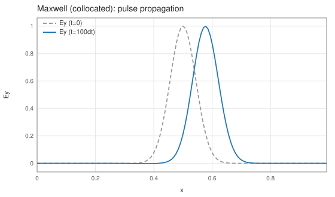
Ey パルスの伝播(修正版コンパイラで +9.9 セル/理想 +10)
エネルギードリフト 4.8e-5。2ランク実 MPI でランク境界を完全通過。
Yee-FDTD(スタガード格子)
同上 — ただし E は辺・B は面: σE=(½,0,0)…, σB=(0,½,½)…
Egison ソース全文(maxwell3d_yee.egi・68 行)
-- -- maxwell3d_yee.egi : Yee-FDTD Maxwell solver on staggered grids -- E lives on cell edges at integer times, B on cell faces at -- half-integer times (leapfrog): -- E' = E + dt * curl B (B at t = n+1/2) -- B' = B - dt * curl E' (E' at t = n+1) -- Every difference is between nearest half-cell neighbours, so all -- generated stencils have radius 1 (TB-safe), and div B = 0 is -- preserved exactly by the discrete update. -- -- Run: egison -l fmrgen.egi -l fmrlegacy3d.egi maxwell3d_yee.egi > maxwell3d_yee.fmr -- declare symbol dt def Ex := function (x, y, z) def Ey := function (x, y, z) def Ez := function (x, y, z) def Bx := function (x, y, z) def By := function (x, y, z) def Bz := function (x, y, z) def Ex' := function (x, y, z) def Ey' := function (x, y, z) def Ez' := function (x, y, z) -- Yee staggers: E on edge centers, B on face centers def sE := [[1 / 2, 0, 0], [0, 1 / 2, 0], [0, 0, 1 / 2]] def sB := [[0, 1 / 2, 1 / 2], [1 / 2, 0, 1 / 2], [1 / 2, 1 / 2, 0]] def bFlds := [(Bx, nth 1 sB), (By, nth 2 sB), (Bz, nth 3 sB)] def eNFlds := [(Ex', nth 1 sE), (Ey', nth 2 sE), (Ez', nth 3 sE)] def eRhs (i1: Integer) (e: MathValue) : MathValue := e + dt * curlYee i1 (nth i1 sE) bFlds def bRhs (i1: Integer) (b: MathValue) : MathValue := b - dt * curlYee i1 (nth i1 sB) eNFlds def prog : [String] := [ "dimension :: 3" , "axes :: x,y,z" , "" , "double :: dt = 0.5*dx" , "" , "extern function :: exp" , "gauss1 = fun(x) exp(-((x-(total_grid_x*dx/2))/(8*dx))**2)" , "" , "begin function (Ex,Ey,Ez,Bx,By,Bz) = init()" , " double [] :: Ex, Ey, Ez, Bx, By, Bz" , " Ex[i,j,k] = 0" , " Ey[i,j,k] = gauss1(i*dx)" , " Ez[i,j,k] = 0" , " Bx[i,j,k] = 0" , " By[i,j,k] = 0" , " Bz[i,j,k] = gauss1((i+0.5)*dx)" , "end function" , "" , "begin function (Ex',Ey',Ez',Bx',By',Bz') = step(Ex,Ey,Ez,Bx,By,Bz)" , fmrEq "Ex'" (eRhs 1 Ex) , fmrEq "Ey'" (eRhs 2 Ey) , fmrEq "Ez'" (eRhs 3 Ez) , fmrEq "Bx'" (bRhs 1 Bx) , fmrEq "By'" (bRhs 2 By) , fmrEq "Bz'" (bRhs 3 Bz) , "end function" ] def main (args: [String]) : IO () := print (S.intercalate "\n" prog)
生成された Formura 全文(maxwell3d_yee.fmr・26 行)
dimension :: 3 axes :: x,y,z double :: dt = 0.5*dx extern function :: exp gauss1 = fun(x) exp(-((x-(total_grid_x*dx/2))/(8*dx))**2) begin function (Ex,Ey,Ez,Bx,By,Bz) = init() double [] :: Ex, Ey, Ez, Bx, By, Bz Ex[i,j,k] = 0 Ey[i,j,k] = gauss1(i*dx) Ez[i,j,k] = 0 Bx[i,j,k] = 0 By[i,j,k] = 0 Bz[i,j,k] = gauss1((i+0.5)*dx) end function begin function (Ex',Ey',Ez',Bx',By',Bz') = step(Ex,Ey,Ez,Bx,By,Bz) Ex' = Ex[i,j,k] + Bz[i,j,k]*dt/(dy) + (-1)*Bz[i,j-1,k]*dt/(dy) + (-1)*By[i,j,k]*dt/(dz) + By[i,j,k-1]*dt/(dz) Ey' = Ey[i,j,k] + (-1)*Bz[i,j,k]*dt/(dx) + Bz[i-1,j,k]*dt/(dx) + Bx[i,j,k]*dt/(dz) + (-1)*Bx[i,j,k-1]*dt/(dz) Ez' = Ez[i,j,k] + By[i,j,k]*dt/(dx) + (-1)*By[i-1,j,k]*dt/(dx) + (-1)*Bx[i,j,k]*dt/(dy) + Bx[i,j-1,k]*dt/(dy) Bx' = Ez'[i,j,k]*dt/(dy) + (-1)*Ez'[i,j+1,k]*dt/(dy) + (-1)*Ey'[i,j,k]*dt/(dz) + Ey'[i,j,k+1]*dt/(dz) + Bx[i,j,k] By' = (-1)*Ez'[i,j,k]*dt/(dx) + Ez'[i+1,j,k]*dt/(dx) + Ex'[i,j,k]*dt/(dz) + (-1)*Ex'[i,j,k+1]*dt/(dz) + By[i,j,k] Bz' = Ey'[i,j,k]*dt/(dx) + (-1)*Ey'[i+1,j,k]*dt/(dx) + (-1)*Ex'[i,j,k]*dt/(dy) + Ex'[i,j+1,k]*dt/(dy) + Bz[i,j,k] end function
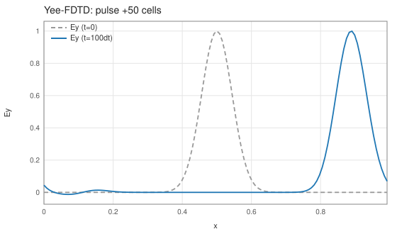
dt=0.5dx で +49.9 セル伝播(理想 +50)
div B ≡ 0(機械精度)・エネルギー 0.10%・TB あり/なしビット一致。
Maxwell(微分形式/DEC)
∂tB = −dE, ∂tE = ⋆d⋆B
(E ∈ Ω¹: 辺、B ∈ Ω²: 面)
配置は書かない — 形式の次数が Yee 格子を決める。d∘d = 0 は CAS が生成時に検査
配置は書かない — 形式の次数が Yee 格子を決める。d∘d = 0 は CAS が生成時に検査
Formurae ソース全文(maxwell_dec.fe・27 行)
-- Maxwell's equations as discrete differential forms (DEC) -- Faraday : dB/dt = -d E' (d : 1-form -> 2-form) -- Ampere : dE/dt = delta B (codifferential: delta = *d* on 2-forms) -- No grid placements appear anywhere: the form degrees determine the -- Yee lattice, and generation is gated on the CAS reducing d(dE') to 0. dimension 3 axes x, y, z param dt = 0.5*dx extern exp use exterior-calculus { d, δ } raw gauss1 = fun(x) exp(-((x-(total_grid_x*dx/2))/(8*dx))**2) field E : 1-form field B : 2-form init: E = [| 0, gauss1(i*dx), 0 |] B = [| gauss1((i+0.5)*dx), 0, 0 |] step: E' = E + dt * δ B B' = B - dt * d E' assert-dd-zero E'
生成された Egison(中間形・fec 出力)(maxwell_dec.egi・229 行)
-- -- GENERATED by fec (the Formurae compiler) from maxwell_dec.fe -- edit the .fe, not this file -- declare symbol dt declare symbol x, y, z, hx, hy, hz def feDim : Integer := 3 def feAxes : [String] := ["x", "y", "z"] def feAxisIds : [Integer] := [1, 2, 3] def feCoords : Vector MathValue := [| x, y, z |] def feHsteps : Vector MathValue := [| hx, hy, hz |] def coords : Vector MathValue := feCoords def hsteps : Vector MathValue := feHsteps def axisName (a: Integer) : String := nth a ["i", "j", "k"] def symName (v: String) : String := match v as string with | #"hx" -> "dx" | #"hy" -> "dy" | #"hz" -> "dz" | #"x" -> "(i*dx)" | #"y" -> "(j*dy)" | #"z" -> "(k*dz)" | _ -> v def shift (a: Integer) (c: MathValue) (u: MathValue) : MathValue := substitute [(feCoords_a, feCoords_a + c * feHsteps_a)] u def dC (a: Integer) (u: MathValue) : MathValue := (shift a 1 u - shift a (-1) u) / (2 * feHsteps_a) def dC2 (a: Integer) (u: MathValue) : MathValue := (shift a 1 u - 2 * u + shift a (-1) u) / ((feHsteps_a) ^ 2) def dF (a: Integer) (u: MathValue) : MathValue := (shift a 1 u - u) / feHsteps_a def dB (a: Integer) (u: MathValue) : MathValue := (u - shift a (-1) u) / feHsteps_a def dTaylor (m: Integer) (ks: [MathValue]) (a: Integer) (u: MathValue) : MathValue := sum (map (\(c, k) -> c * shift a k u) (zip (taylorStencil m ks) ks)) / (feHsteps_a ^ m) def axisId (axis: MathValue) : Integer := match axis as mathValue with | symbol $v _ -> match v as string with | #"x" -> 1 | #"y" -> 2 | #"z" -> 3 | _ -> 0 def ∂ (m: Integer) (r: Integer) (axis: MathValue) (u: MathValue) : MathValue := let a := axisId axis in if m = 1 && r = 1 then dC a u else if m = 2 && r = 1 then dC2 a u else dTaylor m (between (0 - r) r) a u def feIndexPairs : [(Integer, Integer)] := [(1, 1), (1, 2), (1, 3), (2, 1), (2, 2), (2, 3), (3, 1), (3, 2), (3, 3)] def yeeRef (sT: [MathValue]) (fld: (MathValue, [MathValue])) (disp: [MathValue]) : MathValue := let (fF, sF) := fld in substitute (map (\a -> (feCoords_a, feCoords_a + (nth a disp + nth a sT - nth a sF) * feHsteps_a)) feAxisIds) fF def unit3 (a: Integer) (c: MathValue) : [MathValue] := map (\b -> if a = b then c else 0) feAxisIds def dYee (a: Integer) (sT: [MathValue]) (fld: (MathValue, [MathValue])) : MathValue := (yeeRef sT fld (unit3 a (1 / 2)) - yeeRef sT fld (unit3 a (-1 / 2))) / feHsteps_a def curlYee (i1: Integer) (sT: [MathValue]) (flds: [(MathValue, [MathValue])]) : MathValue := sum (map (\(j1, k1) -> (ε 3)_i1_j1_k1 * dYee j1 sT (nth k1 flds)) feIndexPairs) def formBasis (k: Integer) : [[Integer]] := if k = 0 then [[]] else if k = 1 then [[1], [2], [3]] else if k = 2 then [[1, 2], [1, 3], [2, 3]] else if k = 3 then [[1, 2, 3]] else [] def basisSign (xs: [Integer]) : MathValue := if xs = [] then 1 else if xs = [1] then 1 else if xs = [2] then 1 else if xs = [3] then 1 else if xs = [1, 2] then 1 else if xs = [2, 1] then -1 else if xs = [1, 3] then 1 else if xs = [3, 1] then -1 else if xs = [2, 3] then 1 else if xs = [3, 2] then -1 else if xs = [1, 2, 3] then 1 else if xs = [2, 1, 3] then -1 else if xs = [3, 2, 1] then -1 else if xs = [2, 3, 1] then 1 else if xs = [3, 1, 2] then 1 else if xs = [1, 3, 2] then -1 else 0 def basisContains (a: Integer) (basis: [Integer]) : Bool := any (\b -> a = b) basis def basisRemove (a: Integer) (basis: [Integer]) : [Integer] := filter (\b -> not (a = b)) basis def complementBasis (basis: [Integer]) : [Integer] := filter (\a -> not (basisContains a basis)) feAxisIds def formIndex (basis: [Integer]) : Integer := head (map (\(_, idx) -> idx) (filter (\(b, _) -> b = basis) (zip (formBasis (length basis)) (between 1 (length (formBasis (length basis))))))) def formComponent (basis: [Integer]) (cs: [MathValue]) : MathValue := nth (formIndex basis) cs def sigmaOf (basis: [Integer]) : [MathValue] := map (\a -> if basisContains a basis then 1 / 2 else 0) feAxisIds def sigmaC (c: Integer) (basis: [Integer]) : [MathValue] := if c = 0 then sigmaOf basis else sigmaOf (complementBasis basis) def hodge (f: (Integer, Integer, [MathValue])) : (Integer, Integer, [MathValue]) := let (c, k, cs) := f in let kd := feDim - k in (1 - c, kd, map (\basis -> let src := complementBasis basis in basisSign (src ++ basis) * formComponent src cs) (formBasis kd)) def dForm (f: (Integer, Integer, [MathValue])) : (Integer, Integer, [MathValue]) := let (c, k, cs) := f in let kp := k + 1 in (c, kp, map (\basis -> foldl (\acc a -> let src := basisRemove a basis in acc + basisSign ([a] ++ src) * dYee a (sigmaC c basis) (formComponent src cs, sigmaC c src)) 0 basis) (formBasis kp)) def codiff (f: (Integer, Integer, [MathValue])) : (Integer, Integer, [MathValue]) := scaleForm ((-1) ^ (feDim * (formDeg f + 1) + 1)) (hodge (dForm (hodge f))) def δ := codiff def offsetSuffix (o: MathValue) : String := match o as mathValue with | #0 -> "" | #1 -> "+1" | #2 -> "+2" | #3 -> "+3" | #(-1) -> "-1" | #(-2) -> "-2" | #(-3) -> "-3" | #(1 / 2) -> "+1/2" | #(-1 / 2) -> "-1/2" | #(3 / 2) -> "+3/2" | #(-3 / 2) -> "-3/2" | _ -> S.concat ["+(", show o, ")"] def gridIndex (a: Integer) (arg: MathValue) : String := S.append (axisName a) (offsetSuffix ((arg - coords_a) / hsteps_a)) def fmrFieldName (nm: String) : String := match nm as string with | #"E'_1" -> "E_1'" | #"E'_2" -> "E_2'" | #"E'_3" -> "E_3'" | #"B'_1_2" -> "B_1_2'" | #"B'_1_3" -> "B_1_3'" | #"B'_2_3" -> "B_2_3'" | _ -> nm def gridRef (g: MathValue) (args: [MathValue]) : String := S.concat [fmrFieldName (show g), "[", S.intercalate "," (map (\(a, arg) -> gridIndex a arg) (zip feAxisIds args)), "]"] def wrapNeg (s: String) : String := if S.head s = '-' then S.concat ["(", s, ")"] else s def applyName g := mathFunctionName g def showFactor (f: MathValue) : String := match f as mathValue with | func $g $args -> gridRef g args | apply1 $g $a1 -> S.concat [applyName g, "(", showFmr a1, ")"] | quote $e -> S.concat ["(", showFmr e, ")"] | symbol $v _ -> symName v | _ -> S.concat ["(", showFmr f, ")"] def showPow (f: MathValue) (n: Integer) : String := if n = 1 then showFactor f else S.concat [showFactor f, "**", show n] def coefPQ (c: MathValue) : (String, String) := match c as mathValue with | $p / $q -> (show p, show q) def showTerm (t: MathValue) : String := match t as mathValue with | term $c $xs -> let (cp, cq) := coefPQ c in let numFs := map (\(f, n) -> showPow f n) (filter (\(f, n) -> n > 0) xs) in let denFs := map (\(f, n) -> showPow f (0 - n)) (filter (\(f, n) -> n < 0) xs) in let numParts := if cp = "1" && not (numFs = []) then numFs else wrapNeg cp :: numFs in let denParts := (if cq = "1" then [] else [cq]) ++ denFs in let numStr := S.intercalate "*" numParts in if denParts = [] then numStr else S.concat [numStr, "/(", S.intercalate "*" denParts, ")"] def showPoly (p: MathValue) : String := match p as mathValue with | #0 -> "0" | poly $ts / _ -> S.intercalate " + " (map showTerm ts) def showFmr (e: MathValue) : String := match e as mathValue with | #0 -> "0" | $nu / #1 -> showPoly nu | $nu / $de -> S.concat ["(", showPoly nu, ")/(", showPoly de, ")"] def fmrEq (lhs: String) (rhs: MathValue) : String := S.concat [" ", lhs, " = ", showFmr rhs] def feGridPoint : String := S.intercalate "," (map axisName feAxisIds) def fmrInit (lhs: String) (rhs: MathValue) : String := S.concat [" ", lhs, "[", feGridPoint, "] = ", showFmr rhs] def componentEqs (names: [String]) (values: [MathValue]) : [String] := map (\(name, value) -> fmrEq (S.append name "'") value) (zip names values) def scalarEq (nm: String) (c: MathValue) : [String] := [fmrEq (S.append nm "'") c] def tupleOf (xs: [String]) : String := if length xs = 1 then head xs else S.concat ["(", S.intercalate "," xs, ")"] def emitModelOn (dim: Integer) (axes: [String]) (params: [(String, String)]) (helpers: [String]) (comps: [String]) (initLines: [String]) (stepLines: [String]) : String := let compsP := map (\c -> S.append c "'") comps in S.intercalate "\n" ([ S.append "dimension :: " (show dim) , S.append "axes :: " (S.intercalate "," axes) , "" ] ++ map (\(n, v) -> S.concat ["double :: ", n, " = ", v]) params ++ [""] ++ helpers ++ [""] ++ [ S.concat ["begin function ", tupleOf comps, " = init()"] , S.concat [" double [] :: ", S.intercalate ", " comps] ] ++ initLines ++ [ "end function" , "" , S.concat ["begin function ", tupleOf compsP, " = step", "(", S.intercalate "," comps, ")"] ] ++ stepLines ++ [ "end function" ]) def E_i := generateTensor (\[i] -> function (x, y, z)) [3] def Ef : (Integer, Integer, [MathValue]) := (0, 1, [E_1, E_2, E_3]) def B_i_j := generateTensor (\[i, j] -> function (x, y, z)) [3, 3] def Bf : (Integer, Integer, [MathValue]) := (0, 2, [B_1_2, B_1_3, B_2_3]) def E'_i := generateTensor (\[i] -> function (x, y, z)) [3] def EfN : (Integer, Integer, [MathValue]) := (0, 1, [E'_1, E'_2, E'_3]) def feDD := foldl (\acc x -> acc + x ^ 2) 0 (formComps (dForm (dForm EfN))) def feParams := [("dt", "0.5*dx")] def feHelpers := [ "extern function :: exp" , "gauss1 = fun(x) exp(-((x-(total_grid_x*dx/2))/(8*dx))**2)" ] def feComps : [String] := ["E_1", "E_2", "E_3", "B_1_2", "B_1_3", "B_2_3"] def feInits := [ " E_1[i,j,k] = 0" , " E_2[i,j,k] = gauss1(i*dx)" , " E_3[i,j,k] = 0" , " B_1_2[i,j,k] = gauss1((i+0.5)*dx)" , " B_1_3[i,j,k] = 0" , " B_2_3[i,j,k] = 0" ] def feSteps := componentEqs ["E_1", "E_2", "E_3"] [(E_1 + (dt * nth 1 (formComps (codiff Bf)))), (E_2 + (dt * nth 2 (formComps (codiff Bf)))), (E_3 + (dt * nth 3 (formComps (codiff Bf))))] ++ componentEqs ["B_1_2", "B_1_3", "B_2_3"] [(B_1_2 - (dt * nth 1 (formComps (dForm EfN)))), (B_1_3 - (dt * nth 2 (formComps (dForm EfN)))), (B_2_3 - (dt * nth 3 (formComps (dForm EfN))))] def main (args: [String]) : IO () := if feDD = 0 then (print (emitModelOn 3 ["x", "y", "z"] feParams feHelpers feComps feInits feSteps)) else print "# ERROR: d . d /= 0 on this grid -- refusing to generate"
生成された Formura 全文(maxwell_dec.fmr・26 行)
dimension :: 3 axes :: x,y,z double :: dt = 0.5*dx extern function :: exp gauss1 = fun(x) exp(-((x-(total_grid_x*dx/2))/(8*dx))**2) begin function (E_1,E_2,E_3,B_1_2,B_1_3,B_2_3) = init() double [] :: E_1, E_2, E_3, B_1_2, B_1_3, B_2_3 E_1[i,j,k] = 0 E_2[i,j,k] = gauss1(i*dx) E_3[i,j,k] = 0 B_1_2[i,j,k] = gauss1((i+0.5)*dx) B_1_3[i,j,k] = 0 B_2_3[i,j,k] = 0 end function begin function (E_1',E_2',E_3',B_1_2',B_1_3',B_2_3') = step(E_1,E_2,E_3,B_1_2,B_1_3,B_2_3) E_1' = E_1[i,j,k] + B_1_3[i,j,k]*dt/(dz) + (-1)*B_1_3[i,j,k-1]*dt/(dz) + B_1_2[i,j,k]*dt/(dy) + (-1)*B_1_2[i,j-1,k]*dt/(dy) E_2' = E_2[i,j,k] + B_2_3[i,j,k]*dt/(dz) + (-1)*B_2_3[i,j,k-1]*dt/(dz) + (-1)*B_1_2[i,j,k]*dt/(dx) + B_1_2[i-1,j,k]*dt/(dx) E_3' = E_3[i,j,k] + (-1)*B_2_3[i,j,k]*dt/(dy) + B_2_3[i,j-1,k]*dt/(dy) + (-1)*B_1_3[i,j,k]*dt/(dx) + B_1_3[i-1,j,k]*dt/(dx) B_1_2' = E_2'[i,j,k]*dt/(dx) + (-1)*E_2'[i+1,j,k]*dt/(dx) + (-1)*E_1'[i,j,k]*dt/(dy) + E_1'[i,j+1,k]*dt/(dy) + B_1_2[i,j,k] B_1_3' = E_3'[i,j,k]*dt/(dx) + (-1)*E_3'[i+1,j,k]*dt/(dx) + (-1)*E_1'[i,j,k]*dt/(dz) + E_1'[i,j,k+1]*dt/(dz) + B_1_3[i,j,k] B_2_3' = E_3'[i,j,k]*dt/(dy) + (-1)*E_3'[i,j+1,k]*dt/(dy) + (-1)*E_2'[i,j,k]*dt/(dz) + E_2'[i,j,k+1]*dt/(dz) + B_2_3[i,j,k] end function
形式の次数だけから Yee 配置を導出
B は
B_1_2,B_1_3,B_2_3 の幾何基底名で出力。生成は
d(dE')=0 の CAS 検査を通過した場合のみで、実測 div B ≡0。線形音響(p–v)
∂tp = −K∇·v, ∂tv = −∇p/ρ
Egison ソース全文(acoustic3d.egi・60 行)
-- -- acoustic3d.egi : linear acoustics, pressure-velocity formulation on a -- staggered grid (the scalar reduction of the Virieux/Yee scheme) -- dp/dt = -kap div v -- dv/dt = -(1/rho0) grad p -- p sits on cell centers, velocity components on faces. Updating v -- first and then p from the primed v makes the pair symplectic. -- With kap = 1, rho0 = 1 the sound speed is c = sqrt(kap/rho0) = 1 and -- the impedance is Z = rho0 c = 1, so p = vx launches a pure -- right-moving plane pulse. -- -- Run: egison -l fmrgen.egi -l fmrlegacy3d.egi acoustic3d.egi > acoustic3d.fmr -- declare symbol dt, kap, rho0 def p := function (x, y, z) def vx := function (x, y, z) def vy := function (x, y, z) def vz := function (x, y, z) def vx' := function (x, y, z) def vy' := function (x, y, z) def vz' := function (x, y, z) def s0 := [0, 0, 0] def sVx := [1 / 2, 0, 0] def sVy := [0, 1 / 2, 0] def sVz := [0, 0, 1 / 2] def divv' := dYee 1 s0 (vx', sVx) + dYee 2 s0 (vy', sVy) + dYee 3 s0 (vz', sVz) def prog : [String] := [ "dimension :: 3" , "axes :: x,y,z" , "" , "# kap = rho0 = 1 -> c = 1, Z = 1" , "double :: kap = 1.0" , "double :: rho0 = 1.0" , "double :: dt = 0.0005" , "" , "extern function :: exp" , "gp = fun(x) exp(-((x - 0.3)/0.02)*((x - 0.3)/0.02))" , "" , "begin function (p, vx, vy, vz) = init()" , " double [] :: p, vx, vy, vz" , " p[i,j,k] = gp(i*dx)" , " vx[i,j,k] = gp((i + 0.5)*dx)" , " vy[i,j,k] = 0.0" , " vz[i,j,k] = 0.0" , "end function" , "" , "begin function (p', vx', vy', vz') = step(p, vx, vy, vz)" , fmrEq "vx'" (vx - (dt / rho0) * dYee 1 sVx (p, s0)) , fmrEq "vy'" (vy - (dt / rho0) * dYee 2 sVy (p, s0)) , fmrEq "vz'" (vz - (dt / rho0) * dYee 3 sVz (p, s0)) , fmrEq "p'" (p - dt * kap * divv') , "end function" ] def main (args: [String]) : IO () := print (S.intercalate "\n" prog)
生成された Formura 全文(acoustic3d.fmr・25 行)
dimension :: 3
axes :: x,y,z
# kap = rho0 = 1 -> c = 1, Z = 1
double :: kap = 1.0
double :: rho0 = 1.0
double :: dt = 0.0005
extern function :: exp
gp = fun(x) exp(-((x - 0.3)/0.02)*((x - 0.3)/0.02))
begin function (p, vx, vy, vz) = init()
double [] :: p, vx, vy, vz
p[i,j,k] = gp(i*dx)
vx[i,j,k] = gp((i + 0.5)*dx)
vy[i,j,k] = 0.0
vz[i,j,k] = 0.0
end function
begin function (p', vx', vy', vz') = step(p, vx, vy, vz)
vx' = vx[i,j,k] + dt*p[i,j,k]/(dx*rho0) + (-1)*dt*p[i+1,j,k]/(dx*rho0)
vy' = vy[i,j,k] + dt*p[i,j,k]/(dy*rho0) + (-1)*dt*p[i,j+1,k]/(dy*rho0)
vz' = vz[i,j,k] + dt*p[i,j,k]/(dz*rho0) + (-1)*dt*p[i,j,k+1]/(dz*rho0)
p' = (-1)*dt*kap*vz'[i,j,k]/(dz) + dt*kap*vz'[i,j,k-1]/(dz) + (-1)*dt*kap*vy'[i,j,k]/(dy) + dt*kap*vy'[i,j-1,k]/(dy) + (-1)*dt*kap*vx'[i,j,k]/(dx) + dt*kap*vx'[i-1,j,k]/(dx) + p[i,j,k]
end function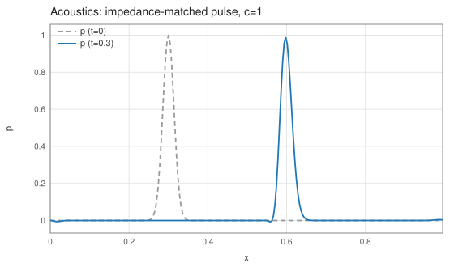
インピーダンス整合パルス(p=Zv)が反射なく右進
実測音速 0.9957(厳密 1)・エネルギー 1.6e-4・横速度 =0 厳密。
弾性波(Virieux スタガード格子)
ρ∂tvi = ∂jσij,
∂tσij = λgij∇·v + μ(gik∂kvj+gjk∂kvi)
添字の上下を strict に区別し、
contractWith/. で縮約を明示する添字記法から、metric g と Virieux 配置の半セル差分へ展開。Formurae ソース全文(elastic3d.fe・42 行)
-- Linear elastic waves, velocity-stress formulation (Virieux), written -- exactly as the mathematics: -- -- rho dv^i/dt = d_j sigma^ij -- d sigma^ij / dt = lambda delta^ij (div v') -- + mu (delta^ik d_k v'^j + delta^jk d_k v'^i) -- -- Repeated dummy index letters are contracted explicitly with contractWith -- or ".". Superscripts and subscripts are kept distinct; on this Euclidean -- grid metric g is the identity, so g~i~j raises derivative indices. -- v' refers to the updated velocity (symplectic). -- The fields are declared staggered, so every d_a becomes a half-cell -- difference anchored at the placement of the target component -- -- which puts v^i on edge i and sigma^ij at edge i (+) edge j: the Virieux -- lattice, derived rather than declared. With lambda=2, mu=1, rho0=1 the -- P and S speeds are 2 and 1, measured by the check driver. dimension 3 axes x, y, z metric g param λ = 2.0 param μ = 1.0 param ρ0 = 1.0 param dt = 0.0005 raw # lambda=2, mu=1, rho0=1 -> vp = 2, vs = 1 extern exp raw gp = fun(x) exp(-((x - 0.3)/0.02)*((x - 0.3)/0.02)) field v~i @ staggered field σ{~i~j} @ staggered init: v~i = [| gp((i + 0.5)*dx), gp(i*dx), 0.0 |]~i σ~i~j = [| [| 0.0 - 2.0*gp(i*dx), 0.0 - 1.0*gp((i + 0.5)*dx), 0.0 |], [| 0.0, 0.0 |], [| 0.0 |] |]~i~j step: v'~i = v~i + (dt / ρ0) * contractWith (+) (∂_j σ~i~j) σ'~i~j = σ~i~j + dt * (λ * g~i~j * contractWith (+) (∂_k v'~k) + μ * (g~i~k . ∂_k v'~j + g~j~k . ∂_k v'~i))
生成された Egison(中間形・fec 出力)(elastic3d.egi・222 行)
-- -- GENERATED by fec (the Formurae compiler) from elastic3d.fe -- edit the .fe, not this file -- declare symbol lambda, mu, rho0, dt declare symbol x, y, z, hx, hy, hz def feDim : Integer := 3 def feAxes : [String] := ["x", "y", "z"] def feAxisIds : [Integer] := [1, 2, 3] def feCoords : Vector MathValue := [| x, y, z |] def feHsteps : Vector MathValue := [| hx, hy, hz |] def coords : Vector MathValue := feCoords def hsteps : Vector MathValue := feHsteps def axisName (a: Integer) : String := nth a ["i", "j", "k"] def symName (v: String) : String := match v as string with | #"hx" -> "dx" | #"hy" -> "dy" | #"hz" -> "dz" | #"x" -> "(i*dx)" | #"y" -> "(j*dy)" | #"z" -> "(k*dz)" | _ -> v def shift (a: Integer) (c: MathValue) (u: MathValue) : MathValue := substitute [(feCoords_a, feCoords_a + c * feHsteps_a)] u def dC (a: Integer) (u: MathValue) : MathValue := (shift a 1 u - shift a (-1) u) / (2 * feHsteps_a) def dC2 (a: Integer) (u: MathValue) : MathValue := (shift a 1 u - 2 * u + shift a (-1) u) / ((feHsteps_a) ^ 2) def dF (a: Integer) (u: MathValue) : MathValue := (shift a 1 u - u) / feHsteps_a def dB (a: Integer) (u: MathValue) : MathValue := (u - shift a (-1) u) / feHsteps_a def dTaylor (m: Integer) (ks: [MathValue]) (a: Integer) (u: MathValue) : MathValue := sum (map (\(c, k) -> c * shift a k u) (zip (taylorStencil m ks) ks)) / (feHsteps_a ^ m) def axisId (axis: MathValue) : Integer := match axis as mathValue with | symbol $v _ -> match v as string with | #"x" -> 1 | #"y" -> 2 | #"z" -> 3 | _ -> 0 def ∂ (m: Integer) (r: Integer) (axis: MathValue) (u: MathValue) : MathValue := let a := axisId axis in if m = 1 && r = 1 then dC a u else if m = 2 && r = 1 then dC2 a u else dTaylor m (between (0 - r) r) a u def feIndexPairs : [(Integer, Integer)] := [(1, 1), (1, 2), (1, 3), (2, 1), (2, 2), (2, 3), (3, 1), (3, 2), (3, 3)] def yeeRef (sT: [MathValue]) (fld: (MathValue, [MathValue])) (disp: [MathValue]) : MathValue := let (fF, sF) := fld in substitute (map (\a -> (feCoords_a, feCoords_a + (nth a disp + nth a sT - nth a sF) * feHsteps_a)) feAxisIds) fF def unit3 (a: Integer) (c: MathValue) : [MathValue] := map (\b -> if a = b then c else 0) feAxisIds def dYee (a: Integer) (sT: [MathValue]) (fld: (MathValue, [MathValue])) : MathValue := (yeeRef sT fld (unit3 a (1 / 2)) - yeeRef sT fld (unit3 a (-1 / 2))) / feHsteps_a def curlYee (i1: Integer) (sT: [MathValue]) (flds: [(MathValue, [MathValue])]) : MathValue := sum (map (\(j1, k1) -> (ε 3)_i1_j1_k1 * dYee j1 sT (nth k1 flds)) feIndexPairs) def offsetSuffix (o: MathValue) : String := match o as mathValue with | #0 -> "" | #1 -> "+1" | #2 -> "+2" | #3 -> "+3" | #(-1) -> "-1" | #(-2) -> "-2" | #(-3) -> "-3" | #(1 / 2) -> "+1/2" | #(-1 / 2) -> "-1/2" | #(3 / 2) -> "+3/2" | #(-3 / 2) -> "-3/2" | _ -> S.concat ["+(", show o, ")"] def gridIndex (a: Integer) (arg: MathValue) : String := S.append (axisName a) (offsetSuffix ((arg - coords_a) / hsteps_a)) def fmrFieldName (nm: String) : String := match nm as string with | #"v_1" -> "v_up1" | #"v'_1" -> "v_up1'" | #"v_2" -> "v_up2" | #"v'_2" -> "v_up2'" | #"v_3" -> "v_up3" | #"v'_3" -> "v_up3'" | #"sigma_1_1" -> "sigma_up1_up1" | #"sigma'_1_1" -> "sigma_up1_up1'" | #"sigma_2_2" -> "sigma_up2_up2" | #"sigma'_2_2" -> "sigma_up2_up2'" | #"sigma_3_3" -> "sigma_up3_up3" | #"sigma'_3_3" -> "sigma_up3_up3'" | #"sigma_1_2" -> "sigma_up1_up2" | #"sigma'_1_2" -> "sigma_up1_up2'" | #"sigma_1_3" -> "sigma_up1_up3" | #"sigma'_1_3" -> "sigma_up1_up3'" | #"sigma_2_3" -> "sigma_up2_up3" | #"sigma'_2_3" -> "sigma_up2_up3'" | _ -> nm def gridRef (g: MathValue) (args: [MathValue]) : String := S.concat [fmrFieldName (show g), "[", S.intercalate "," (map (\(a, arg) -> gridIndex a arg) (zip feAxisIds args)), "]"] def wrapNeg (s: String) : String := if S.head s = '-' then S.concat ["(", s, ")"] else s def applyName g := mathFunctionName g def showFactor (f: MathValue) : String := match f as mathValue with | func $g $args -> gridRef g args | apply1 $g $a1 -> S.concat [applyName g, "(", showFmr a1, ")"] | quote $e -> S.concat ["(", showFmr e, ")"] | symbol $v _ -> symName v | _ -> S.concat ["(", showFmr f, ")"] def showPow (f: MathValue) (n: Integer) : String := if n = 1 then showFactor f else S.concat [showFactor f, "**", show n] def coefPQ (c: MathValue) : (String, String) := match c as mathValue with | $p / $q -> (show p, show q) def showTerm (t: MathValue) : String := match t as mathValue with | term $c $xs -> let (cp, cq) := coefPQ c in let numFs := map (\(f, n) -> showPow f n) (filter (\(f, n) -> n > 0) xs) in let denFs := map (\(f, n) -> showPow f (0 - n)) (filter (\(f, n) -> n < 0) xs) in let numParts := if cp = "1" && not (numFs = []) then numFs else wrapNeg cp :: numFs in let denParts := (if cq = "1" then [] else [cq]) ++ denFs in let numStr := S.intercalate "*" numParts in if denParts = [] then numStr else S.concat [numStr, "/(", S.intercalate "*" denParts, ")"] def showPoly (p: MathValue) : String := match p as mathValue with | #0 -> "0" | poly $ts / _ -> S.intercalate " + " (map showTerm ts) def showFmr (e: MathValue) : String := match e as mathValue with | #0 -> "0" | $nu / #1 -> showPoly nu | $nu / $de -> S.concat ["(", showPoly nu, ")/(", showPoly de, ")"] def fmrEq (lhs: String) (rhs: MathValue) : String := S.concat [" ", lhs, " = ", showFmr rhs] def feGridPoint : String := S.intercalate "," (map axisName feAxisIds) def fmrInit (lhs: String) (rhs: MathValue) : String := S.concat [" ", lhs, "[", feGridPoint, "] = ", showFmr rhs] def componentEqs (names: [String]) (values: [MathValue]) : [String] := map (\(name, value) -> fmrEq (S.append name "'") value) (zip names values) def scalarEq (nm: String) (c: MathValue) : [String] := [fmrEq (S.append nm "'") c] def tupleOf (xs: [String]) : String := if length xs = 1 then head xs else S.concat ["(", S.intercalate "," xs, ")"] def emitModelOn (dim: Integer) (axes: [String]) (params: [(String, String)]) (helpers: [String]) (comps: [String]) (initLines: [String]) (stepLines: [String]) : String := let compsP := map (\c -> S.append c "'") comps in S.intercalate "\n" ([ S.append "dimension :: " (show dim) , S.append "axes :: " (S.intercalate "," axes) , "" ] ++ map (\(n, v) -> S.concat ["double :: ", n, " = ", v]) params ++ [""] ++ helpers ++ [""] ++ [ S.concat ["begin function ", tupleOf comps, " = init()"] , S.concat [" double [] :: ", S.intercalate ", " comps] ] ++ initLines ++ [ "end function" , "" , S.concat ["begin function ", tupleOf compsP, " = step", "(", S.intercalate "," comps, ")"] ] ++ stepLines ++ [ "end function" ]) def v_i := generateTensor (\[i] -> function (x, y, z)) [3] def sigma_i_j := generateTensor (\[i, j] -> function (x, y, z)) [3, 3] def v'_i := generateTensor (\[i] -> function (x, y, z)) [3] def FormuraeInternalTensorvUp_i := v_i def FormuraeInternalTensorvDown_i := v_i def FormuraeInternalTensorsigmaUpUp_i_j := generateTensor (\[i, j] -> if i <= j then sigma_i_j else sigma_j_i) [feDim, feDim] def FormuraeInternalTensorsigmaUpDown_i_j := generateTensor (\[i, j] -> if i <= j then sigma_i_j else sigma_j_i) [feDim, feDim] def FormuraeInternalTensorsigmaDownUp_i_j := generateTensor (\[i, j] -> if i <= j then sigma_i_j else sigma_j_i) [feDim, feDim] def FormuraeInternalTensorsigmaDownDown_i_j := generateTensor (\[i, j] -> if i <= j then sigma_i_j else sigma_j_i) [feDim, feDim] def FormuraeInternalTensorvUp'_i := v'_i def FormuraeInternalTensorvDown'_i := v'_i def FormuraeInternalMetricCov_i_j := generateTensor (\[i, j] -> if i = j then 1 else 0) [feDim, feDim] def FormuraeInternalMetricContra_i_j := generateTensor (\[i, j] -> if i = j then 1 else 0) [feDim, feDim] def FormuraeInternalMetricMixedUpDown_i_j := generateTensor (\[i, j] -> if i = j then 1 else 0) [feDim, feDim] def FormuraeInternalMetricMixedDownUp_i_j := generateTensor (\[i, j] -> if i = j then 1 else 0) [feDim, feDim] def feqv1 := v_1 + ((dt / rho0) * (dYee 1 [1 / 2, 0, 0] (sigma_1_1, [0, 0, 0]) + dYee 2 [1 / 2, 0, 0] (sigma_1_2, [1 / 2, 1 / 2, 0]) + dYee 3 [1 / 2, 0, 0] (sigma_1_3, [1 / 2, 0, 1 / 2]))) def feqv2 := v_2 + ((dt / rho0) * (dYee 1 [0, 1 / 2, 0] (sigma_1_2, [1 / 2, 1 / 2, 0]) + dYee 2 [0, 1 / 2, 0] (sigma_2_2, [0, 0, 0]) + dYee 3 [0, 1 / 2, 0] (sigma_2_3, [0, 1 / 2, 1 / 2]))) def feqv3 := v_3 + ((dt / rho0) * (dYee 1 [0, 0, 1 / 2] (sigma_1_3, [1 / 2, 0, 1 / 2]) + dYee 2 [0, 0, 1 / 2] (sigma_2_3, [0, 1 / 2, 1 / 2]) + dYee 3 [0, 0, 1 / 2] (sigma_3_3, [0, 0, 0]))) def feqsigma11 := sigma_1_1 + (dt * ((lambda * 1 * (dYee 1 [0, 0, 0] (v'_1, [1 / 2, 0, 0]) + dYee 2 [0, 0, 0] (v'_2, [0, 1 / 2, 0]) + dYee 3 [0, 0, 0] (v'_3, [0, 0, 1 / 2]))) + (mu * ((dYee 1 [0, 0, 0] (v'_1, [1 / 2, 0, 0])) + (dYee 1 [0, 0, 0] (v'_1, [1 / 2, 0, 0])))))) def feqsigma22 := sigma_2_2 + (dt * ((lambda * 1 * (dYee 1 [0, 0, 0] (v'_1, [1 / 2, 0, 0]) + dYee 2 [0, 0, 0] (v'_2, [0, 1 / 2, 0]) + dYee 3 [0, 0, 0] (v'_3, [0, 0, 1 / 2]))) + (mu * ((dYee 2 [0, 0, 0] (v'_2, [0, 1 / 2, 0])) + (dYee 2 [0, 0, 0] (v'_2, [0, 1 / 2, 0])))))) def feqsigma33 := sigma_3_3 + (dt * ((lambda * 1 * (dYee 1 [0, 0, 0] (v'_1, [1 / 2, 0, 0]) + dYee 2 [0, 0, 0] (v'_2, [0, 1 / 2, 0]) + dYee 3 [0, 0, 0] (v'_3, [0, 0, 1 / 2]))) + (mu * ((dYee 3 [0, 0, 0] (v'_3, [0, 0, 1 / 2])) + (dYee 3 [0, 0, 0] (v'_3, [0, 0, 1 / 2])))))) def feqsigma12 := sigma_1_2 + (dt * ((mu * ((dYee 1 [1 / 2, 1 / 2, 0] (v'_2, [0, 1 / 2, 0])) + (dYee 2 [1 / 2, 1 / 2, 0] (v'_1, [1 / 2, 0, 0])))))) def feqsigma13 := sigma_1_3 + (dt * ((mu * ((dYee 1 [1 / 2, 0, 1 / 2] (v'_3, [0, 0, 1 / 2])) + (dYee 3 [1 / 2, 0, 1 / 2] (v'_1, [1 / 2, 0, 0])))))) def feqsigma23 := sigma_2_3 + (dt * ((mu * ((dYee 2 [0, 1 / 2, 1 / 2] (v'_3, [0, 0, 1 / 2])) + (dYee 3 [0, 1 / 2, 1 / 2] (v'_2, [0, 1 / 2, 0])))))) def feParams := [("lambda", "2.0"), ("mu", "1.0"), ("rho0", "1.0"), ("dt", "0.0005")] def feHelpers := [ "# lambda=2, mu=1, rho0=1 -> vp = 2, vs = 1" , "extern function :: exp" , "gp = fun(x) exp(-((x - 0.3)/0.02)*((x - 0.3)/0.02))" ] def feComps : [String] := ["v_up1", "v_up2", "v_up3", "sigma_up1_up1", "sigma_up2_up2", "sigma_up3_up3", "sigma_up1_up2", "sigma_up1_up3", "sigma_up2_up3"] def feInits := [ " v_up1[i,j,k] = gp((i + 0.5)*dx)" , " v_up2[i,j,k] = gp(i*dx)" , " v_up3[i,j,k] = 0.0" , " sigma_up1_up1[i,j,k] = 0.0 - 2.0*gp(i*dx)" , " sigma_up2_up2[i,j,k] = 0.0" , " sigma_up3_up3[i,j,k] = 0.0" , " sigma_up1_up2[i,j,k] = 0.0 - 1.0*gp((i + 0.5)*dx)" , " sigma_up1_up3[i,j,k] = 0.0" , " sigma_up2_up3[i,j,k] = 0.0" ] def feSteps := componentEqs ["v_up1", "v_up2", "v_up3"] [feqv1, feqv2, feqv3] ++ componentEqs ["sigma_up1_up1", "sigma_up2_up2", "sigma_up3_up3", "sigma_up1_up2", "sigma_up1_up3", "sigma_up2_up3"] [feqsigma11, feqsigma22, feqsigma33, feqsigma12, feqsigma13, feqsigma23] def main (args: [String]) : IO () := print (emitModelOn 3 ["x", "y", "z"] feParams feHelpers feComps feInits feSteps)
生成された Formura 全文(elastic3d.fmr・36 行)
dimension :: 3
axes :: x,y,z
double :: lambda = 2.0
double :: mu = 1.0
double :: rho0 = 1.0
double :: dt = 0.0005
# lambda=2, mu=1, rho0=1 -> vp = 2, vs = 1
extern function :: exp
gp = fun(x) exp(-((x - 0.3)/0.02)*((x - 0.3)/0.02))
begin function (v_up1,v_up2,v_up3,sigma_up1_up1,sigma_up2_up2,sigma_up3_up3,sigma_up1_up2,sigma_up1_up3,sigma_up2_up3) = init()
double [] :: v_up1, v_up2, v_up3, sigma_up1_up1, sigma_up2_up2, sigma_up3_up3, sigma_up1_up2, sigma_up1_up3, sigma_up2_up3
v_up1[i,j,k] = gp((i + 0.5)*dx)
v_up2[i,j,k] = gp(i*dx)
v_up3[i,j,k] = 0.0
sigma_up1_up1[i,j,k] = 0.0 - 2.0*gp(i*dx)
sigma_up2_up2[i,j,k] = 0.0
sigma_up3_up3[i,j,k] = 0.0
sigma_up1_up2[i,j,k] = 0.0 - 1.0*gp((i + 0.5)*dx)
sigma_up1_up3[i,j,k] = 0.0
sigma_up2_up3[i,j,k] = 0.0
end function
begin function (v_up1',v_up2',v_up3',sigma_up1_up1',sigma_up2_up2',sigma_up3_up3',sigma_up1_up2',sigma_up1_up3',sigma_up2_up3') = step(v_up1,v_up2,v_up3,sigma_up1_up1,sigma_up2_up2,sigma_up3_up3,sigma_up1_up2,sigma_up1_up3,sigma_up2_up3)
v_up1' = v_up1[i,j,k] + dt*sigma_up1_up3[i,j,k]/(dz*rho0) + (-1)*dt*sigma_up1_up3[i,j,k-1]/(dz*rho0) + dt*sigma_up1_up2[i,j,k]/(dy*rho0) + (-1)*dt*sigma_up1_up2[i,j-1,k]/(dy*rho0) + (-1)*dt*sigma_up1_up1[i,j,k]/(dx*rho0) + dt*sigma_up1_up1[i+1,j,k]/(dx*rho0)
v_up2' = v_up2[i,j,k] + dt*sigma_up2_up3[i,j,k]/(dz*rho0) + (-1)*dt*sigma_up2_up3[i,j,k-1]/(dz*rho0) + (-1)*dt*sigma_up2_up2[i,j,k]/(dy*rho0) + dt*sigma_up2_up2[i,j+1,k]/(dy*rho0) + dt*sigma_up1_up2[i,j,k]/(dx*rho0) + (-1)*dt*sigma_up1_up2[i-1,j,k]/(dx*rho0)
v_up3' = v_up3[i,j,k] + (-1)*dt*sigma_up3_up3[i,j,k]/(dz*rho0) + dt*sigma_up3_up3[i,j,k+1]/(dz*rho0) + dt*sigma_up2_up3[i,j,k]/(dy*rho0) + (-1)*dt*sigma_up2_up3[i,j-1,k]/(dy*rho0) + dt*sigma_up1_up3[i,j,k]/(dx*rho0) + (-1)*dt*sigma_up1_up3[i-1,j,k]/(dx*rho0)
sigma_up1_up1' = dt*lambda*v_up3'[i,j,k]/(dz) + (-1)*dt*lambda*v_up3'[i,j,k-1]/(dz) + dt*lambda*v_up2'[i,j,k]/(dy) + (-1)*dt*lambda*v_up2'[i,j-1,k]/(dy) + 2*dt*mu*v_up1'[i,j,k]/(dx) + (-2)*dt*mu*v_up1'[i-1,j,k]/(dx) + dt*lambda*v_up1'[i,j,k]/(dx) + (-1)*dt*lambda*v_up1'[i-1,j,k]/(dx) + sigma_up1_up1[i,j,k]
sigma_up2_up2' = dt*lambda*v_up3'[i,j,k]/(dz) + (-1)*dt*lambda*v_up3'[i,j,k-1]/(dz) + 2*dt*mu*v_up2'[i,j,k]/(dy) + (-2)*dt*mu*v_up2'[i,j-1,k]/(dy) + dt*lambda*v_up2'[i,j,k]/(dy) + (-1)*dt*lambda*v_up2'[i,j-1,k]/(dy) + dt*lambda*v_up1'[i,j,k]/(dx) + (-1)*dt*lambda*v_up1'[i-1,j,k]/(dx) + sigma_up2_up2[i,j,k]
sigma_up3_up3' = 2*dt*mu*v_up3'[i,j,k]/(dz) + (-2)*dt*mu*v_up3'[i,j,k-1]/(dz) + dt*lambda*v_up3'[i,j,k]/(dz) + (-1)*dt*lambda*v_up3'[i,j,k-1]/(dz) + dt*lambda*v_up2'[i,j,k]/(dy) + (-1)*dt*lambda*v_up2'[i,j-1,k]/(dy) + dt*lambda*v_up1'[i,j,k]/(dx) + (-1)*dt*lambda*v_up1'[i-1,j,k]/(dx) + sigma_up3_up3[i,j,k]
sigma_up1_up2' = (-1)*dt*mu*v_up1'[i,j,k]/(dy) + dt*mu*v_up1'[i,j+1,k]/(dy) + (-1)*dt*mu*v_up2'[i,j,k]/(dx) + dt*mu*v_up2'[i+1,j,k]/(dx) + sigma_up1_up2[i,j,k]
sigma_up1_up3' = (-1)*dt*mu*v_up1'[i,j,k]/(dz) + dt*mu*v_up1'[i,j,k+1]/(dz) + (-1)*dt*mu*v_up3'[i,j,k]/(dx) + dt*mu*v_up3'[i+1,j,k]/(dx) + sigma_up1_up3[i,j,k]
sigma_up2_up3' = (-1)*dt*mu*v_up2'[i,j,k]/(dz) + dt*mu*v_up2'[i,j,k+1]/(dz) + (-1)*dt*mu*v_up3'[i,j,k]/(dy) + dt*mu*v_up3'[i,j+1,k]/(dy) + sigma_up2_up3[i,j,k]
end function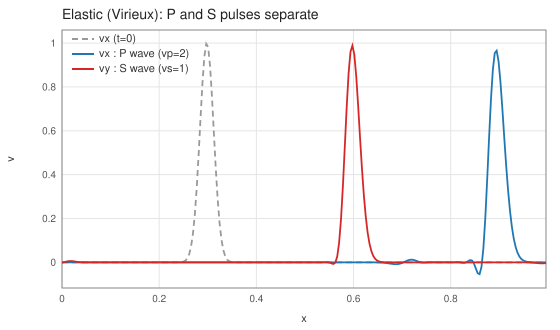
同時発射した P パルス(vx)と S パルス(vy)が速度差で分離
1回の実行で vp=1.990/2・vs=0.995/1 を実測、エネルギー 3.4e-4。
テンソル記法版の生成 .fmr は成分手書き版とバイト一致。
非線形 Klein–Gordon(φ⁴ キンク)
∂ttφ = ∂xxφ + φ − φ³
二重井戸 V=(φ²−1)²/4、キンク = tanh((x−x₀)/√2)
二重井戸 V=(φ²−1)²/4、キンク = tanh((x−x₀)/√2)
Formurae ソース全文(kleingordon.fe・25 行)
-- Nonlinear Klein-Gordon (phi^4): phi_tt = phi_xx + phi - phi^3 -- Leapfrog (kick-drift); the drift references the updated w', which -- makes the pair symplectic. Initial data: a kink-antikink pair -- boosted to v = +-0.2 (Lorentz-contracted tanh profiles). dimension 3 axes x, y, z param dt = 0.05 extern tanh extern cosh raw raw # gamma/sqrt(2) = 0.7216878...; gamma*v/sqrt(2) = 0.1443375... field φ : scalar field w : scalar init: φ = tanh(0.7216878364870323*(i*dx - 16.0)) - tanh(0.7216878364870323*(i*dx - 48.0)) - 1.0 w = 0.0 - 0.14433756729740645*(1.0/cosh(0.7216878364870323*(i*dx - 16.0)))**2 - 0.14433756729740645*(1.0/cosh(0.7216878364870323*(i*dx - 48.0)))**2 step: w' = w + dt * (∂ 2 1 x φ + φ - φ * φ * φ) φ' = φ + dt * w'
生成された Egison(中間形・fec 出力)(kleingordon.egi・164 行)
-- -- GENERATED by fec (the Formurae compiler) from kleingordon.fe -- edit the .fe, not this file -- declare symbol dt declare symbol x, y, z, hx, hy, hz def feDim : Integer := 3 def feAxes : [String] := ["x", "y", "z"] def feAxisIds : [Integer] := [1, 2, 3] def feCoords : Vector MathValue := [| x, y, z |] def feHsteps : Vector MathValue := [| hx, hy, hz |] def coords : Vector MathValue := feCoords def hsteps : Vector MathValue := feHsteps def axisName (a: Integer) : String := nth a ["i", "j", "k"] def symName (v: String) : String := match v as string with | #"hx" -> "dx" | #"hy" -> "dy" | #"hz" -> "dz" | #"x" -> "(i*dx)" | #"y" -> "(j*dy)" | #"z" -> "(k*dz)" | _ -> v def shift (a: Integer) (c: MathValue) (u: MathValue) : MathValue := substitute [(feCoords_a, feCoords_a + c * feHsteps_a)] u def dC (a: Integer) (u: MathValue) : MathValue := (shift a 1 u - shift a (-1) u) / (2 * feHsteps_a) def dC2 (a: Integer) (u: MathValue) : MathValue := (shift a 1 u - 2 * u + shift a (-1) u) / ((feHsteps_a) ^ 2) def dF (a: Integer) (u: MathValue) : MathValue := (shift a 1 u - u) / feHsteps_a def dB (a: Integer) (u: MathValue) : MathValue := (u - shift a (-1) u) / feHsteps_a def dTaylor (m: Integer) (ks: [MathValue]) (a: Integer) (u: MathValue) : MathValue := sum (map (\(c, k) -> c * shift a k u) (zip (taylorStencil m ks) ks)) / (feHsteps_a ^ m) def axisId (axis: MathValue) : Integer := match axis as mathValue with | symbol $v _ -> match v as string with | #"x" -> 1 | #"y" -> 2 | #"z" -> 3 | _ -> 0 def ∂ (m: Integer) (r: Integer) (axis: MathValue) (u: MathValue) : MathValue := let a := axisId axis in if m = 1 && r = 1 then dC a u else if m = 2 && r = 1 then dC2 a u else dTaylor m (between (0 - r) r) a u def offsetSuffix (o: MathValue) : String := match o as mathValue with | #0 -> "" | #1 -> "+1" | #2 -> "+2" | #3 -> "+3" | #(-1) -> "-1" | #(-2) -> "-2" | #(-3) -> "-3" | #(1 / 2) -> "+1/2" | #(-1 / 2) -> "-1/2" | #(3 / 2) -> "+3/2" | #(-3 / 2) -> "-3/2" | _ -> S.concat ["+(", show o, ")"] def gridIndex (a: Integer) (arg: MathValue) : String := S.append (axisName a) (offsetSuffix ((arg - coords_a) / hsteps_a)) def fmrFieldName (nm: String) : String := match nm as string with | _ -> nm def gridRef (g: MathValue) (args: [MathValue]) : String := S.concat [fmrFieldName (show g), "[", S.intercalate "," (map (\(a, arg) -> gridIndex a arg) (zip feAxisIds args)), "]"] def wrapNeg (s: String) : String := if S.head s = '-' then S.concat ["(", s, ")"] else s def applyName g := mathFunctionName g def showFactor (f: MathValue) : String := match f as mathValue with | func $g $args -> gridRef g args | apply1 $g $a1 -> S.concat [applyName g, "(", showFmr a1, ")"] | quote $e -> S.concat ["(", showFmr e, ")"] | symbol $v _ -> symName v | _ -> S.concat ["(", showFmr f, ")"] def showPow (f: MathValue) (n: Integer) : String := if n = 1 then showFactor f else S.concat [showFactor f, "**", show n] def coefPQ (c: MathValue) : (String, String) := match c as mathValue with | $p / $q -> (show p, show q) def showTerm (t: MathValue) : String := match t as mathValue with | term $c $xs -> let (cp, cq) := coefPQ c in let numFs := map (\(f, n) -> showPow f n) (filter (\(f, n) -> n > 0) xs) in let denFs := map (\(f, n) -> showPow f (0 - n)) (filter (\(f, n) -> n < 0) xs) in let numParts := if cp = "1" && not (numFs = []) then numFs else wrapNeg cp :: numFs in let denParts := (if cq = "1" then [] else [cq]) ++ denFs in let numStr := S.intercalate "*" numParts in if denParts = [] then numStr else S.concat [numStr, "/(", S.intercalate "*" denParts, ")"] def showPoly (p: MathValue) : String := match p as mathValue with | #0 -> "0" | poly $ts / _ -> S.intercalate " + " (map showTerm ts) def showFmr (e: MathValue) : String := match e as mathValue with | #0 -> "0" | $nu / #1 -> showPoly nu | $nu / $de -> S.concat ["(", showPoly nu, ")/(", showPoly de, ")"] def fmrEq (lhs: String) (rhs: MathValue) : String := S.concat [" ", lhs, " = ", showFmr rhs] def feGridPoint : String := S.intercalate "," (map axisName feAxisIds) def fmrInit (lhs: String) (rhs: MathValue) : String := S.concat [" ", lhs, "[", feGridPoint, "] = ", showFmr rhs] def componentEqs (names: [String]) (values: [MathValue]) : [String] := map (\(name, value) -> fmrEq (S.append name "'") value) (zip names values) def scalarEq (nm: String) (c: MathValue) : [String] := [fmrEq (S.append nm "'") c] def tupleOf (xs: [String]) : String := if length xs = 1 then head xs else S.concat ["(", S.intercalate "," xs, ")"] def emitModelOn (dim: Integer) (axes: [String]) (params: [(String, String)]) (helpers: [String]) (comps: [String]) (initLines: [String]) (stepLines: [String]) : String := let compsP := map (\c -> S.append c "'") comps in S.intercalate "\n" ([ S.append "dimension :: " (show dim) , S.append "axes :: " (S.intercalate "," axes) , "" ] ++ map (\(n, v) -> S.concat ["double :: ", n, " = ", v]) params ++ [""] ++ helpers ++ [""] ++ [ S.concat ["begin function ", tupleOf comps, " = init()"] , S.concat [" double [] :: ", S.intercalate ", " comps] ] ++ initLines ++ [ "end function" , "" , S.concat ["begin function ", tupleOf compsP, " = step", "(", S.intercalate "," comps, ")"] ] ++ stepLines ++ [ "end function" ]) def phi := function (x, y, z) def w := function (x, y, z) def w' := function (x, y, z) def feParams := [("dt", "0.05")] def feHelpers := [ "extern function :: tanh" , "extern function :: cosh" , "" , "# gamma/sqrt(2) = 0.7216878...; gamma*v/sqrt(2) = 0.1443375..." ] def feComps : [String] := ["phi", "w"] def feInits := [ " phi[i,j,k] = tanh(0.7216878364870323*(i*dx - 16.0)) - tanh(0.7216878364870323*(i*dx - 48.0)) - 1.0" , " w[i,j,k] = 0.0 - 0.14433756729740645*(1.0/cosh(0.7216878364870323*(i*dx - 16.0)))**2 - 0.14433756729740645*(1.0/cosh(0.7216878364870323*(i*dx - 48.0)))**2" ] def feSteps := scalarEq "w" (w + (dt * ((∂ 2 1 x phi + phi) - (phi * phi * phi)))) ++ scalarEq "phi" (phi + (dt * w')) def main (args: [String]) : IO () := print (emitModelOn 3 ["x", "y", "z"] feParams feHelpers feComps feInits feSteps)
生成された Formura 全文(kleingordon.fmr・20 行)
dimension :: 3
axes :: x,y,z
double :: dt = 0.05
extern function :: tanh
extern function :: cosh
# gamma/sqrt(2) = 0.7216878...; gamma*v/sqrt(2) = 0.1443375...
begin function (phi,w) = init()
double [] :: phi, w
phi[i,j,k] = tanh(0.7216878364870323*(i*dx - 16.0)) - tanh(0.7216878364870323*(i*dx - 48.0)) - 1.0
w[i,j,k] = 0.0 - 0.14433756729740645*(1.0/cosh(0.7216878364870323*(i*dx - 16.0)))**2 - 0.14433756729740645*(1.0/cosh(0.7216878364870323*(i*dx - 48.0)))**2
end function
begin function (phi',w') = step(phi,w)
w' = (-1)*dt*phi[i,j,k]**3 + dt*phi[i,j,k] + w[i,j,k] + (-2)*dt*phi[i,j,k]/(dx**2) + dt*phi[i-1,j,k]/(dx**2) + dt*phi[i+1,j,k]/(dx**2)
phi' = dt*w'[i,j,k] + phi[i,j,k]
end function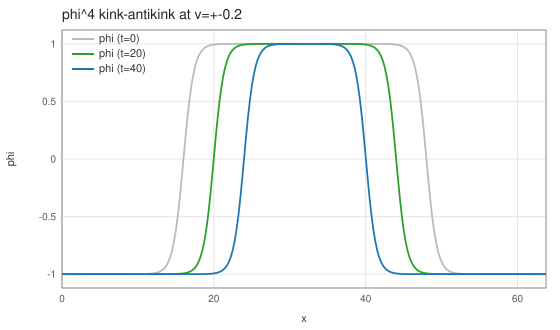
v=±0.2 にブーストした kink–antikink 対が接近(t=0→20→40)
実測速度 ±0.1993・E=2γE_kink に偏差 0.11%・
シンプレクティックでドリフト 3.3e-7。
流体・保存則系
Burgers 方程式
∂tu + u∂xu = ν∇²u
Formurae ソース全文(burgers3d.fe・23 行)
-- Viscous Burgers equation: du/dt = nu lap u - u du/dx -- The Cole-Hopf transform gives a periodic exact solution which the -- check driver compares against -- the regression benchmark for -- NONLINEAR term generation (products of grid references). dimension 3 axes x, y, z param ν = 0.05 param dt = 0.0001 param k0 = 6.283185307179586 extern sin extern cos def Δ u = ∂ 2 1 x u + ∂ 2 1 y u + ∂ 2 1 z u field u : scalar init: u = 2.0*0.05*k0*sin(k0*i*dx)/(2.0 + cos(k0*i*dx)) step: u' = u + dt * (ν * Δ u - u * ∂x u)
生成された Egison(中間形・fec 出力)(burgers3d.egi・159 行)
-- -- GENERATED by fec (the Formurae compiler) from burgers3d.fe -- edit the .fe, not this file -- declare symbol nu, dt, k0 declare symbol x, y, z, hx, hy, hz def feDim : Integer := 3 def feAxes : [String] := ["x", "y", "z"] def feAxisIds : [Integer] := [1, 2, 3] def feCoords : Vector MathValue := [| x, y, z |] def feHsteps : Vector MathValue := [| hx, hy, hz |] def coords : Vector MathValue := feCoords def hsteps : Vector MathValue := feHsteps def axisName (a: Integer) : String := nth a ["i", "j", "k"] def symName (v: String) : String := match v as string with | #"hx" -> "dx" | #"hy" -> "dy" | #"hz" -> "dz" | #"x" -> "(i*dx)" | #"y" -> "(j*dy)" | #"z" -> "(k*dz)" | _ -> v def shift (a: Integer) (c: MathValue) (u: MathValue) : MathValue := substitute [(feCoords_a, feCoords_a + c * feHsteps_a)] u def dC (a: Integer) (u: MathValue) : MathValue := (shift a 1 u - shift a (-1) u) / (2 * feHsteps_a) def dC2 (a: Integer) (u: MathValue) : MathValue := (shift a 1 u - 2 * u + shift a (-1) u) / ((feHsteps_a) ^ 2) def dF (a: Integer) (u: MathValue) : MathValue := (shift a 1 u - u) / feHsteps_a def dB (a: Integer) (u: MathValue) : MathValue := (u - shift a (-1) u) / feHsteps_a def dTaylor (m: Integer) (ks: [MathValue]) (a: Integer) (u: MathValue) : MathValue := sum (map (\(c, k) -> c * shift a k u) (zip (taylorStencil m ks) ks)) / (feHsteps_a ^ m) def axisId (axis: MathValue) : Integer := match axis as mathValue with | symbol $v _ -> match v as string with | #"x" -> 1 | #"y" -> 2 | #"z" -> 3 | _ -> 0 def ∂ (m: Integer) (r: Integer) (axis: MathValue) (u: MathValue) : MathValue := let a := axisId axis in if m = 1 && r = 1 then dC a u else if m = 2 && r = 1 then dC2 a u else dTaylor m (between (0 - r) r) a u def offsetSuffix (o: MathValue) : String := match o as mathValue with | #0 -> "" | #1 -> "+1" | #2 -> "+2" | #3 -> "+3" | #(-1) -> "-1" | #(-2) -> "-2" | #(-3) -> "-3" | #(1 / 2) -> "+1/2" | #(-1 / 2) -> "-1/2" | #(3 / 2) -> "+3/2" | #(-3 / 2) -> "-3/2" | _ -> S.concat ["+(", show o, ")"] def gridIndex (a: Integer) (arg: MathValue) : String := S.append (axisName a) (offsetSuffix ((arg - coords_a) / hsteps_a)) def fmrFieldName (nm: String) : String := match nm as string with | _ -> nm def gridRef (g: MathValue) (args: [MathValue]) : String := S.concat [fmrFieldName (show g), "[", S.intercalate "," (map (\(a, arg) -> gridIndex a arg) (zip feAxisIds args)), "]"] def wrapNeg (s: String) : String := if S.head s = '-' then S.concat ["(", s, ")"] else s def applyName g := mathFunctionName g def showFactor (f: MathValue) : String := match f as mathValue with | func $g $args -> gridRef g args | apply1 $g $a1 -> S.concat [applyName g, "(", showFmr a1, ")"] | quote $e -> S.concat ["(", showFmr e, ")"] | symbol $v _ -> symName v | _ -> S.concat ["(", showFmr f, ")"] def showPow (f: MathValue) (n: Integer) : String := if n = 1 then showFactor f else S.concat [showFactor f, "**", show n] def coefPQ (c: MathValue) : (String, String) := match c as mathValue with | $p / $q -> (show p, show q) def showTerm (t: MathValue) : String := match t as mathValue with | term $c $xs -> let (cp, cq) := coefPQ c in let numFs := map (\(f, n) -> showPow f n) (filter (\(f, n) -> n > 0) xs) in let denFs := map (\(f, n) -> showPow f (0 - n)) (filter (\(f, n) -> n < 0) xs) in let numParts := if cp = "1" && not (numFs = []) then numFs else wrapNeg cp :: numFs in let denParts := (if cq = "1" then [] else [cq]) ++ denFs in let numStr := S.intercalate "*" numParts in if denParts = [] then numStr else S.concat [numStr, "/(", S.intercalate "*" denParts, ")"] def showPoly (p: MathValue) : String := match p as mathValue with | #0 -> "0" | poly $ts / _ -> S.intercalate " + " (map showTerm ts) def showFmr (e: MathValue) : String := match e as mathValue with | #0 -> "0" | $nu / #1 -> showPoly nu | $nu / $de -> S.concat ["(", showPoly nu, ")/(", showPoly de, ")"] def fmrEq (lhs: String) (rhs: MathValue) : String := S.concat [" ", lhs, " = ", showFmr rhs] def feGridPoint : String := S.intercalate "," (map axisName feAxisIds) def fmrInit (lhs: String) (rhs: MathValue) : String := S.concat [" ", lhs, "[", feGridPoint, "] = ", showFmr rhs] def componentEqs (names: [String]) (values: [MathValue]) : [String] := map (\(name, value) -> fmrEq (S.append name "'") value) (zip names values) def scalarEq (nm: String) (c: MathValue) : [String] := [fmrEq (S.append nm "'") c] def tupleOf (xs: [String]) : String := if length xs = 1 then head xs else S.concat ["(", S.intercalate "," xs, ")"] def emitModelOn (dim: Integer) (axes: [String]) (params: [(String, String)]) (helpers: [String]) (comps: [String]) (initLines: [String]) (stepLines: [String]) : String := let compsP := map (\c -> S.append c "'") comps in S.intercalate "\n" ([ S.append "dimension :: " (show dim) , S.append "axes :: " (S.intercalate "," axes) , "" ] ++ map (\(n, v) -> S.concat ["double :: ", n, " = ", v]) params ++ [""] ++ helpers ++ [""] ++ [ S.concat ["begin function ", tupleOf comps, " = init()"] , S.concat [" double [] :: ", S.intercalate ", " comps] ] ++ initLines ++ [ "end function" , "" , S.concat ["begin function ", tupleOf compsP, " = step", "(", S.intercalate "," comps, ")"] ] ++ stepLines ++ [ "end function" ]) def u := function (x, y, z) def feParams := [("nu", "0.05"), ("dt", "0.0001"), ("k0", "6.283185307179586")] def feHelpers := [ "extern function :: sin" , "extern function :: cos" ] def feComps : [String] := ["u"] def feInits := [ " u[i,j,k] = 2.0*0.05*k0*sin(k0*i*dx)/(2.0 + cos(k0*i*dx))" ] def feSteps := scalarEq "u" (u + (dt * ((nu * (∂ 2 1 x u + ∂ 2 1 y u + ∂ 2 1 z u)) - (u * ∂ 1 1 x u)))) def main (args: [String]) : IO () := print (emitModelOn 3 ["x", "y", "z"] feParams feHelpers feComps feInits feSteps)
生成された Formura 全文(burgers3d.fmr・18 行)
dimension :: 3 axes :: x,y,z double :: nu = 0.05 double :: dt = 0.0001 double :: k0 = 6.283185307179586 extern function :: sin extern function :: cos begin function u = init() double [] :: u u[i,j,k] = 2.0*0.05*k0*sin(k0*i*dx)/(2.0 + cos(k0*i*dx)) end function begin function u' = step(u) u' = dt*u[i-1,j,k]*u[i,j,k]/(2*dx) + (-1)*dt*u[i+1,j,k]*u[i,j,k]/(2*dx) + u[i,j,k] + (-2)*dt*nu*u[i,j,k]/(dz**2) + dt*nu*u[i,j,k-1]/(dz**2) + dt*nu*u[i,j,k+1]/(dz**2) + (-2)*dt*nu*u[i,j,k]/(dy**2) + dt*nu*u[i,j-1,k]/(dy**2) + dt*nu*u[i,j+1,k]/(dy**2) + (-2)*dt*nu*u[i,j,k]/(dx**2) + dt*nu*u[i-1,j,k]/(dx**2) + dt*nu*u[i+1,j,k]/(dx**2) end function
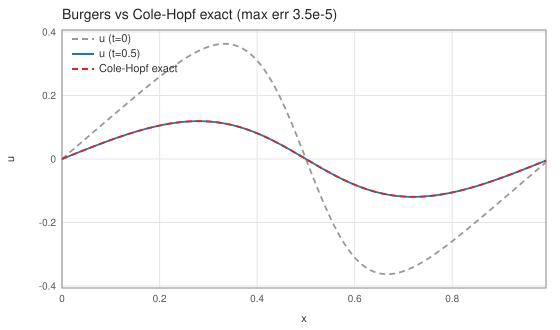
t=0.5 の数値解と Cole–Hopf 厳密解(赤破線)が重なる
厳密解と max 誤差 3.5e-5(離散化誤差オーダー)。
浅水方程式
∂th + ∇·(hu) = 0,
∂t(hu) + ∂x(hu² + gh²/2) + ∂y(huv) = 0 …
Formurae ソース全文(shallowwater.fe・31 行)
-- Shallow water equations in conservation form (h, hu, hv), central -- differences on the momentum fluxes (locals) plus a small Laplacian -- viscosity; every piece is in flux form, so mass and momentum -- telescope exactly. A 1% bump splits into gravity waves at -- c = sqrt(g h0) = 1, measured by the check driver. dimension 3 axes x, y, z param g = 1.0 param λ = 0.05 param dt = 0.05 extern exp field h : scalar field mx : scalar field my : scalar init: h = 1.0 + 0.01*exp(-((i*dx - 32.0)/2.0)**2) mx = 0.0 my = 0.0 step: local fmxx = mx * mx / h + g * h * h / 2 local fmxy = mx * my / h local fmyy = my * my / h + g * h * h / 2 h' = h - dt * (∂x mx + ∂y my) + dt * λ * (∂ 2 1 x h + ∂ 2 1 y h) mx' = mx - dt * (∂x fmxx + ∂y fmxy) + dt * λ * (∂ 2 1 x mx + ∂ 2 1 y mx) my' = my - dt * (∂x fmxy + ∂y fmyy) + dt * λ * (∂ 2 1 x my + ∂ 2 1 y my)
生成された Egison(中間形・fec 出力)(shallowwater.egi・165 行)
-- -- GENERATED by fec (the Formurae compiler) from shallowwater.fe -- edit the .fe, not this file -- declare symbol g, lambda, dt declare symbol x, y, z, hx, hy, hz def feDim : Integer := 3 def feAxes : [String] := ["x", "y", "z"] def feAxisIds : [Integer] := [1, 2, 3] def feCoords : Vector MathValue := [| x, y, z |] def feHsteps : Vector MathValue := [| hx, hy, hz |] def coords : Vector MathValue := feCoords def hsteps : Vector MathValue := feHsteps def axisName (a: Integer) : String := nth a ["i", "j", "k"] def symName (v: String) : String := match v as string with | #"hx" -> "dx" | #"hy" -> "dy" | #"hz" -> "dz" | #"x" -> "(i*dx)" | #"y" -> "(j*dy)" | #"z" -> "(k*dz)" | _ -> v def shift (a: Integer) (c: MathValue) (u: MathValue) : MathValue := substitute [(feCoords_a, feCoords_a + c * feHsteps_a)] u def dC (a: Integer) (u: MathValue) : MathValue := (shift a 1 u - shift a (-1) u) / (2 * feHsteps_a) def dC2 (a: Integer) (u: MathValue) : MathValue := (shift a 1 u - 2 * u + shift a (-1) u) / ((feHsteps_a) ^ 2) def dF (a: Integer) (u: MathValue) : MathValue := (shift a 1 u - u) / feHsteps_a def dB (a: Integer) (u: MathValue) : MathValue := (u - shift a (-1) u) / feHsteps_a def dTaylor (m: Integer) (ks: [MathValue]) (a: Integer) (u: MathValue) : MathValue := sum (map (\(c, k) -> c * shift a k u) (zip (taylorStencil m ks) ks)) / (feHsteps_a ^ m) def axisId (axis: MathValue) : Integer := match axis as mathValue with | symbol $v _ -> match v as string with | #"x" -> 1 | #"y" -> 2 | #"z" -> 3 | _ -> 0 def ∂ (m: Integer) (r: Integer) (axis: MathValue) (u: MathValue) : MathValue := let a := axisId axis in if m = 1 && r = 1 then dC a u else if m = 2 && r = 1 then dC2 a u else dTaylor m (between (0 - r) r) a u def offsetSuffix (o: MathValue) : String := match o as mathValue with | #0 -> "" | #1 -> "+1" | #2 -> "+2" | #3 -> "+3" | #(-1) -> "-1" | #(-2) -> "-2" | #(-3) -> "-3" | #(1 / 2) -> "+1/2" | #(-1 / 2) -> "-1/2" | #(3 / 2) -> "+3/2" | #(-3 / 2) -> "-3/2" | _ -> S.concat ["+(", show o, ")"] def gridIndex (a: Integer) (arg: MathValue) : String := S.append (axisName a) (offsetSuffix ((arg - coords_a) / hsteps_a)) def fmrFieldName (nm: String) : String := match nm as string with | _ -> nm def gridRef (g: MathValue) (args: [MathValue]) : String := S.concat [fmrFieldName (show g), "[", S.intercalate "," (map (\(a, arg) -> gridIndex a arg) (zip feAxisIds args)), "]"] def wrapNeg (s: String) : String := if S.head s = '-' then S.concat ["(", s, ")"] else s def applyName g := mathFunctionName g def showFactor (f: MathValue) : String := match f as mathValue with | func $g $args -> gridRef g args | apply1 $g $a1 -> S.concat [applyName g, "(", showFmr a1, ")"] | quote $e -> S.concat ["(", showFmr e, ")"] | symbol $v _ -> symName v | _ -> S.concat ["(", showFmr f, ")"] def showPow (f: MathValue) (n: Integer) : String := if n = 1 then showFactor f else S.concat [showFactor f, "**", show n] def coefPQ (c: MathValue) : (String, String) := match c as mathValue with | $p / $q -> (show p, show q) def showTerm (t: MathValue) : String := match t as mathValue with | term $c $xs -> let (cp, cq) := coefPQ c in let numFs := map (\(f, n) -> showPow f n) (filter (\(f, n) -> n > 0) xs) in let denFs := map (\(f, n) -> showPow f (0 - n)) (filter (\(f, n) -> n < 0) xs) in let numParts := if cp = "1" && not (numFs = []) then numFs else wrapNeg cp :: numFs in let denParts := (if cq = "1" then [] else [cq]) ++ denFs in let numStr := S.intercalate "*" numParts in if denParts = [] then numStr else S.concat [numStr, "/(", S.intercalate "*" denParts, ")"] def showPoly (p: MathValue) : String := match p as mathValue with | #0 -> "0" | poly $ts / _ -> S.intercalate " + " (map showTerm ts) def showFmr (e: MathValue) : String := match e as mathValue with | #0 -> "0" | $nu / #1 -> showPoly nu | $nu / $de -> S.concat ["(", showPoly nu, ")/(", showPoly de, ")"] def fmrEq (lhs: String) (rhs: MathValue) : String := S.concat [" ", lhs, " = ", showFmr rhs] def feGridPoint : String := S.intercalate "," (map axisName feAxisIds) def fmrInit (lhs: String) (rhs: MathValue) : String := S.concat [" ", lhs, "[", feGridPoint, "] = ", showFmr rhs] def componentEqs (names: [String]) (values: [MathValue]) : [String] := map (\(name, value) -> fmrEq (S.append name "'") value) (zip names values) def scalarEq (nm: String) (c: MathValue) : [String] := [fmrEq (S.append nm "'") c] def tupleOf (xs: [String]) : String := if length xs = 1 then head xs else S.concat ["(", S.intercalate "," xs, ")"] def emitModelOn (dim: Integer) (axes: [String]) (params: [(String, String)]) (helpers: [String]) (comps: [String]) (initLines: [String]) (stepLines: [String]) : String := let compsP := map (\c -> S.append c "'") comps in S.intercalate "\n" ([ S.append "dimension :: " (show dim) , S.append "axes :: " (S.intercalate "," axes) , "" ] ++ map (\(n, v) -> S.concat ["double :: ", n, " = ", v]) params ++ [""] ++ helpers ++ [""] ++ [ S.concat ["begin function ", tupleOf comps, " = init()"] , S.concat [" double [] :: ", S.intercalate ", " comps] ] ++ initLines ++ [ "end function" , "" , S.concat ["begin function ", tupleOf compsP, " = step", "(", S.intercalate "," comps, ")"] ] ++ stepLines ++ [ "end function" ]) def h := function (x, y, z) def mx := function (x, y, z) def my := function (x, y, z) def fmxx := function (x, y, z) def fmxy := function (x, y, z) def fmyy := function (x, y, z) def feParams := [("g", "1.0"), ("lambda", "0.05"), ("dt", "0.05")] def feHelpers := [ "extern function :: exp" ] def feComps : [String] := ["h", "mx", "my"] def feInits := [ " h[i,j,k] = 1.0 + 0.01*exp(-((i*dx - 32.0)/2.0)**2)" , " mx[i,j,k] = 0.0" , " my[i,j,k] = 0.0" ] def feSteps := [fmrEq "fmxx" (((mx * mx) / h) + ((g * h * h) / 2))] ++ [fmrEq "fmxy" ((mx * my) / h)] ++ [fmrEq "fmyy" (((my * my) / h) + ((g * h * h) / 2))] ++ scalarEq "h" ((h - (dt * (∂ 1 1 x mx + ∂ 1 1 y my))) + (dt * lambda * (∂ 2 1 x h + ∂ 2 1 y h))) ++ scalarEq "mx" ((mx - (dt * (∂ 1 1 x fmxx + ∂ 1 1 y fmxy))) + (dt * lambda * (∂ 2 1 x mx + ∂ 2 1 y mx))) ++ scalarEq "my" ((my - (dt * (∂ 1 1 x fmxy + ∂ 1 1 y fmyy))) + (dt * lambda * (∂ 2 1 x my + ∂ 2 1 y my))) def main (args: [String]) : IO () := print (emitModelOn 3 ["x", "y", "z"] feParams feHelpers feComps feInits feSteps)
生成された Formura 全文(shallowwater.fmr・24 行)
dimension :: 3 axes :: x,y,z double :: g = 1.0 double :: lambda = 0.05 double :: dt = 0.05 extern function :: exp begin function (h,mx,my) = init() double [] :: h, mx, my h[i,j,k] = 1.0 + 0.01*exp(-((i*dx - 32.0)/2.0)**2) mx[i,j,k] = 0.0 my[i,j,k] = 0.0 end function begin function (h',mx',my') = step(h,mx,my) fmxx = g*h[i,j,k]**2/(2) + mx[i,j,k]**2/(h[i,j,k]) fmxy = mx[i,j,k]*my[i,j,k]/(h[i,j,k]) fmyy = g*h[i,j,k]**2/(2) + my[i,j,k]**2/(h[i,j,k]) h' = h[i,j,k] + dt*my[i,j-1,k]/(2*dy) + (-1)*dt*my[i,j+1,k]/(2*dy) + dt*mx[i-1,j,k]/(2*dx) + (-1)*dt*mx[i+1,j,k]/(2*dx) + (-2)*dt*h[i,j,k]*lambda/(dy**2) + (-2)*dt*h[i,j,k]*lambda/(dx**2) + dt*h[i,j-1,k]*lambda/(dy**2) + dt*h[i,j+1,k]*lambda/(dy**2) + dt*h[i-1,j,k]*lambda/(dx**2) + dt*h[i+1,j,k]*lambda/(dx**2) mx' = mx[i,j,k] + (-2)*dt*lambda*mx[i,j,k]/(dy**2) + dt*lambda*mx[i,j-1,k]/(dy**2) + dt*lambda*mx[i,j+1,k]/(dy**2) + (-2)*dt*lambda*mx[i,j,k]/(dx**2) + dt*lambda*mx[i-1,j,k]/(dx**2) + dt*lambda*mx[i+1,j,k]/(dx**2) + dt*fmxy[i,j-1,k]/(2*dy) + (-1)*dt*fmxy[i,j+1,k]/(2*dy) + dt*fmxx[i-1,j,k]/(2*dx) + (-1)*dt*fmxx[i+1,j,k]/(2*dx) my' = my[i,j,k] + (-2)*dt*lambda*my[i,j,k]/(dy**2) + dt*lambda*my[i,j-1,k]/(dy**2) + dt*lambda*my[i,j+1,k]/(dy**2) + (-2)*dt*lambda*my[i,j,k]/(dx**2) + dt*lambda*my[i-1,j,k]/(dx**2) + dt*lambda*my[i+1,j,k]/(dx**2) + dt*fmyy[i,j-1,k]/(2*dy) + (-1)*dt*fmyy[i,j+1,k]/(2*dy) + dt*fmxy[i-1,j,k]/(2*dx) + (-1)*dt*fmxy[i+1,j,k]/(2*dx) end function
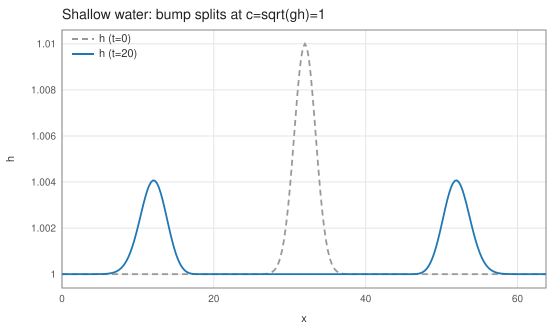
静水面の 1% バンプが左右の重力波に分裂(t=20)
実測波速 0.9989(厳密 √(gh₀)=1)・質量 3.7e-14・max|my|=0 ビット厳密。
圧縮性 Euler: Sod 衝撃管
∂tρ + ∂x(ρu) = 0,
∂t(ρu) + ∂x(ρu²+p) = 0,
∂tE + ∂x((E+p)u) = 0
p = (γ−1)(E − ρu²/2)、γ=1.4
p = (γ−1)(E − ρu²/2)、γ=1.4
Formurae ソース全文(euler_sod.fe・32 行)
-- Compressible Euler (1D flow), Sod shock tube. Conservation form -- with pressure and fluxes as locals, plus Lax-Friedrichs-type -- viscosity; the periodic domain holds a DOUBLE Riemann problem -- (tanh-smoothed diaphragms at x=4 and x=12) and the check driver -- compares density with the exact solution before the fans interact. dimension 3 axes x, y, z param λ = 0.028 param dt = 0.01 extern tanh raw # 0..1 profile: 1 between the diaphragms at x=4 and x=12 raw sod = fun(x) 0.5*(tanh((x - 4.0)/0.0625) - tanh((x - 12.0)/0.0625)) field ρ : scalar field mx : scalar field en : scalar init: ρ = 0.125 + 0.875*sod(i*dx) mx = 0.0 en = (0.1 + 0.9*sod(i*dx))/0.4 step: local pr = (2 / 5) * (en - mx * mx / (2 * ρ)) local fm = mx * mx / ρ + pr local fe = (en + pr) * mx / ρ ρ' = ρ - dt * ∂x mx + dt * λ * ∂ 2 1 x ρ mx' = mx - dt * ∂x fm + dt * λ * ∂ 2 1 x mx en' = en - dt * ∂x fe + dt * λ * ∂ 2 1 x en
生成された Egison(中間形・fec 出力)(euler_sod.egi・167 行)
-- -- GENERATED by fec (the Formurae compiler) from euler_sod.fe -- edit the .fe, not this file -- declare symbol lambda, dt declare symbol x, y, z, hx, hy, hz def feDim : Integer := 3 def feAxes : [String] := ["x", "y", "z"] def feAxisIds : [Integer] := [1, 2, 3] def feCoords : Vector MathValue := [| x, y, z |] def feHsteps : Vector MathValue := [| hx, hy, hz |] def coords : Vector MathValue := feCoords def hsteps : Vector MathValue := feHsteps def axisName (a: Integer) : String := nth a ["i", "j", "k"] def symName (v: String) : String := match v as string with | #"hx" -> "dx" | #"hy" -> "dy" | #"hz" -> "dz" | #"x" -> "(i*dx)" | #"y" -> "(j*dy)" | #"z" -> "(k*dz)" | _ -> v def shift (a: Integer) (c: MathValue) (u: MathValue) : MathValue := substitute [(feCoords_a, feCoords_a + c * feHsteps_a)] u def dC (a: Integer) (u: MathValue) : MathValue := (shift a 1 u - shift a (-1) u) / (2 * feHsteps_a) def dC2 (a: Integer) (u: MathValue) : MathValue := (shift a 1 u - 2 * u + shift a (-1) u) / ((feHsteps_a) ^ 2) def dF (a: Integer) (u: MathValue) : MathValue := (shift a 1 u - u) / feHsteps_a def dB (a: Integer) (u: MathValue) : MathValue := (u - shift a (-1) u) / feHsteps_a def dTaylor (m: Integer) (ks: [MathValue]) (a: Integer) (u: MathValue) : MathValue := sum (map (\(c, k) -> c * shift a k u) (zip (taylorStencil m ks) ks)) / (feHsteps_a ^ m) def axisId (axis: MathValue) : Integer := match axis as mathValue with | symbol $v _ -> match v as string with | #"x" -> 1 | #"y" -> 2 | #"z" -> 3 | _ -> 0 def ∂ (m: Integer) (r: Integer) (axis: MathValue) (u: MathValue) : MathValue := let a := axisId axis in if m = 1 && r = 1 then dC a u else if m = 2 && r = 1 then dC2 a u else dTaylor m (between (0 - r) r) a u def offsetSuffix (o: MathValue) : String := match o as mathValue with | #0 -> "" | #1 -> "+1" | #2 -> "+2" | #3 -> "+3" | #(-1) -> "-1" | #(-2) -> "-2" | #(-3) -> "-3" | #(1 / 2) -> "+1/2" | #(-1 / 2) -> "-1/2" | #(3 / 2) -> "+3/2" | #(-3 / 2) -> "-3/2" | _ -> S.concat ["+(", show o, ")"] def gridIndex (a: Integer) (arg: MathValue) : String := S.append (axisName a) (offsetSuffix ((arg - coords_a) / hsteps_a)) def fmrFieldName (nm: String) : String := match nm as string with | _ -> nm def gridRef (g: MathValue) (args: [MathValue]) : String := S.concat [fmrFieldName (show g), "[", S.intercalate "," (map (\(a, arg) -> gridIndex a arg) (zip feAxisIds args)), "]"] def wrapNeg (s: String) : String := if S.head s = '-' then S.concat ["(", s, ")"] else s def applyName g := mathFunctionName g def showFactor (f: MathValue) : String := match f as mathValue with | func $g $args -> gridRef g args | apply1 $g $a1 -> S.concat [applyName g, "(", showFmr a1, ")"] | quote $e -> S.concat ["(", showFmr e, ")"] | symbol $v _ -> symName v | _ -> S.concat ["(", showFmr f, ")"] def showPow (f: MathValue) (n: Integer) : String := if n = 1 then showFactor f else S.concat [showFactor f, "**", show n] def coefPQ (c: MathValue) : (String, String) := match c as mathValue with | $p / $q -> (show p, show q) def showTerm (t: MathValue) : String := match t as mathValue with | term $c $xs -> let (cp, cq) := coefPQ c in let numFs := map (\(f, n) -> showPow f n) (filter (\(f, n) -> n > 0) xs) in let denFs := map (\(f, n) -> showPow f (0 - n)) (filter (\(f, n) -> n < 0) xs) in let numParts := if cp = "1" && not (numFs = []) then numFs else wrapNeg cp :: numFs in let denParts := (if cq = "1" then [] else [cq]) ++ denFs in let numStr := S.intercalate "*" numParts in if denParts = [] then numStr else S.concat [numStr, "/(", S.intercalate "*" denParts, ")"] def showPoly (p: MathValue) : String := match p as mathValue with | #0 -> "0" | poly $ts / _ -> S.intercalate " + " (map showTerm ts) def showFmr (e: MathValue) : String := match e as mathValue with | #0 -> "0" | $nu / #1 -> showPoly nu | $nu / $de -> S.concat ["(", showPoly nu, ")/(", showPoly de, ")"] def fmrEq (lhs: String) (rhs: MathValue) : String := S.concat [" ", lhs, " = ", showFmr rhs] def feGridPoint : String := S.intercalate "," (map axisName feAxisIds) def fmrInit (lhs: String) (rhs: MathValue) : String := S.concat [" ", lhs, "[", feGridPoint, "] = ", showFmr rhs] def componentEqs (names: [String]) (values: [MathValue]) : [String] := map (\(name, value) -> fmrEq (S.append name "'") value) (zip names values) def scalarEq (nm: String) (c: MathValue) : [String] := [fmrEq (S.append nm "'") c] def tupleOf (xs: [String]) : String := if length xs = 1 then head xs else S.concat ["(", S.intercalate "," xs, ")"] def emitModelOn (dim: Integer) (axes: [String]) (params: [(String, String)]) (helpers: [String]) (comps: [String]) (initLines: [String]) (stepLines: [String]) : String := let compsP := map (\c -> S.append c "'") comps in S.intercalate "\n" ([ S.append "dimension :: " (show dim) , S.append "axes :: " (S.intercalate "," axes) , "" ] ++ map (\(n, v) -> S.concat ["double :: ", n, " = ", v]) params ++ [""] ++ helpers ++ [""] ++ [ S.concat ["begin function ", tupleOf comps, " = init()"] , S.concat [" double [] :: ", S.intercalate ", " comps] ] ++ initLines ++ [ "end function" , "" , S.concat ["begin function ", tupleOf compsP, " = step", "(", S.intercalate "," comps, ")"] ] ++ stepLines ++ [ "end function" ]) def rho := function (x, y, z) def mx := function (x, y, z) def en := function (x, y, z) def pr := function (x, y, z) def fm := function (x, y, z) def fe := function (x, y, z) def feParams := [("lambda", "0.028"), ("dt", "0.01")] def feHelpers := [ "extern function :: tanh" , "# 0..1 profile: 1 between the diaphragms at x=4 and x=12" , "sod = fun(x) 0.5*(tanh((x - 4.0)/0.0625) - tanh((x - 12.0)/0.0625))" ] def feComps : [String] := ["rho", "mx", "en"] def feInits := [ " rho[i,j,k] = 0.125 + 0.875*sod(i*dx)" , " mx[i,j,k] = 0.0" , " en[i,j,k] = (0.1 + 0.9*sod(i*dx))/0.4" ] def feSteps := [fmrEq "pr" ((2 / 5) * (en - ((mx * mx) / (2 * rho))))] ++ [fmrEq "fm" (((mx * mx) / rho) + pr)] ++ [fmrEq "fe" (((en + pr) * mx) / rho)] ++ scalarEq "rho" ((rho - (dt * ∂ 1 1 x mx)) + (dt * lambda * ∂ 2 1 x rho)) ++ scalarEq "mx" ((mx - (dt * ∂ 1 1 x fm)) + (dt * lambda * ∂ 2 1 x mx)) ++ scalarEq "en" ((en - (dt * ∂ 1 1 x fe)) + (dt * lambda * ∂ 2 1 x en)) def main (args: [String]) : IO () := print (emitModelOn 3 ["x", "y", "z"] feParams feHelpers feComps feInits feSteps)
生成された Formura 全文(euler_sod.fmr・25 行)
dimension :: 3
axes :: x,y,z
double :: lambda = 0.028
double :: dt = 0.01
extern function :: tanh
# 0..1 profile: 1 between the diaphragms at x=4 and x=12
sod = fun(x) 0.5*(tanh((x - 4.0)/0.0625) - tanh((x - 12.0)/0.0625))
begin function (rho,mx,en) = init()
double [] :: rho, mx, en
rho[i,j,k] = 0.125 + 0.875*sod(i*dx)
mx[i,j,k] = 0.0
en[i,j,k] = (0.1 + 0.9*sod(i*dx))/0.4
end function
begin function (rho',mx',en') = step(rho,mx,en)
pr = (-1)*mx[i,j,k]**2/(5*rho[i,j,k]) + 2*en[i,j,k]/(5)
fm = pr[i,j,k] + mx[i,j,k]**2/(rho[i,j,k])
fe = mx[i,j,k]*pr[i,j,k]/(rho[i,j,k]) + en[i,j,k]*mx[i,j,k]/(rho[i,j,k])
rho' = rho[i,j,k] + dt*mx[i-1,j,k]/(2*dx) + (-1)*dt*mx[i+1,j,k]/(2*dx) + (-2)*dt*lambda*rho[i,j,k]/(dx**2) + dt*lambda*rho[i-1,j,k]/(dx**2) + dt*lambda*rho[i+1,j,k]/(dx**2)
mx' = mx[i,j,k] + (-2)*dt*lambda*mx[i,j,k]/(dx**2) + dt*lambda*mx[i-1,j,k]/(dx**2) + dt*lambda*mx[i+1,j,k]/(dx**2) + dt*fm[i-1,j,k]/(2*dx) + (-1)*dt*fm[i+1,j,k]/(2*dx)
en' = en[i,j,k] + dt*fe[i-1,j,k]/(2*dx) + (-1)*dt*fe[i+1,j,k]/(2*dx) + (-2)*dt*en[i,j,k]*lambda/(dx**2) + dt*en[i-1,j,k]*lambda/(dx**2) + dt*en[i+1,j,k]*lambda/(dx**2)
end function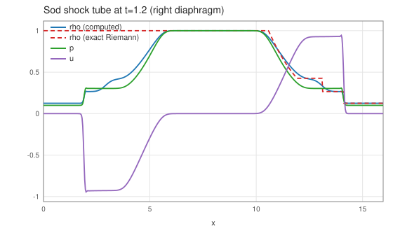
衝撃波・接触不連続・膨張扇の3波構造 vs 厳密 Riemann 解(破線)
L1(ρ) = 0.0255・質量/運動量/エネルギー保存 ~1e-14・正値性維持。
理想 MHD: Orszag–Tang 渦
保存形8変数(ρ, ρv, B, E)+全圧 pt = p + B²/2
Egison ソース全文(mhd_ot.egi・121 行)
-- -- mhd_ot.egi : ideal MHD, Orszag-Tang vortex (the flagship problem of -- the Formura paper's Fig. 3), in conservative form with a Rusanov -- (local Lax-Friedrichs) flux and fixed wave-speed bound lam. -- -- dU/dt + div F(U) = 0, U = (rho, m, B, en) -- F_d(U): mass m_d; momentum m_d m_i/rho - B_d B_i + pT delta_di; -- induction (m_d B_i - m_i B_d)/rho; energy (en+pT)v_d - B_d (v.B) -- -- Fluxes are emitted as intermediate fields (19 local bindings), so each -- generated expression stays a small rational function with a single -- rho denominator -- and the update stage only takes their central -- differences plus the Rusanov dissipation. Sum-conservation of all -- conserved variables is then exact by telescoping, monitored through -- the generated global reductions. -- -- Run: egison -l fmrgen.egi -l fmrlegacy3d.egi mhd_ot.egi > mhd_ot.fmr -- declare symbol dt, lam, gam def rho := function (x, y, z) def mx := function (x, y, z) def my := function (x, y, z) def mz := function (x, y, z) def bx := function (x, y, z) def by := function (x, y, z) def bz := function (x, y, z) def en := function (x, y, z) -- intermediate flux fields (defined as local bindings in the step) def pt := function (x, y, z) def fmx1 := function (x, y, z) def fmx2 := function (x, y, z) def fmx3 := function (x, y, z) def fmy1 := function (x, y, z) def fmy2 := function (x, y, z) def fmy3 := function (x, y, z) def fmz1 := function (x, y, z) def fmz2 := function (x, y, z) def fmz3 := function (x, y, z) def fen1 := function (x, y, z) def fen2 := function (x, y, z) def fen3 := function (x, y, z) def fbx2 := function (x, y, z) def fbx3 := function (x, y, z) def fby1 := function (x, y, z) def fby3 := function (x, y, z) def fbz1 := function (x, y, z) def fbz2 := function (x, y, z) def mm := mx^2 + my^2 + mz^2 def bb := bx^2 + by^2 + bz^2 def mB := mx * bx + my * by + mz * bz -- total pressure pT = (gam-1)(en - m^2/2rho - B^2/2) + B^2/2 def ptDef := (gam - 1) * (en - mm / (2 * rho) - bb / 2) + bb / 2 -- central difference of a flux field, Rusanov dissipation on the state def d1 (d: Integer) (f: MathValue) : MathValue := (shift d 1 f - shift d (-1) f) / (2 * hsteps_d) def visc (u: MathValue) : MathValue := sum (map (\d -> (shift d 1 u - 2*u + shift d (-1) u) / (2 * hsteps_d)) [1, 2, 3]) def upd (u: MathValue) (dfs: [(Integer, MathValue)]) : MathValue := u - dt * sum (map (\(d, f) -> d1 d f) dfs) + dt * lam * visc u def prog : [String] := [ "dimension :: 3" , "axes :: x,y,z" , "" , "# Orszag-Tang: gam = 5/3, rho0 = 25/36pi, p0 = 5/12pi, b0 = 1/sqrt(4pi)" , "double :: gam = 1.6666666666666667" , "double :: lam = 3.0" , "double :: dt = 0.0004" , "" , "extern function :: sin" , "" , "begin function (rho,mx,my,mz,bx,by,bz,en) = init()" , " double [] :: rho, mx, my, mz, bx, by, bz, en" , " rho[i,j,k] = 0.22104853212940622" , " mx[i,j,k] = 0.0 - 0.22104853212940622*sin(6.283185307179586*j*dy)" , " my[i,j,k] = 0.22104853212940622*sin(6.283185307179586*i*dx)" , " mz[i,j,k] = 0.0" , " bx[i,j,k] = 0.0 - 0.28209479177387814*sin(6.283185307179586*j*dy)" , " by[i,j,k] = 0.28209479177387814*sin(12.566370614359172*i*dx)" , " bz[i,j,k] = 0.0" , " en[i,j,k] = 0.19894367886486917 + 0.11052426606470311*(sin(6.283185307179586*j*dy)*sin(6.283185307179586*j*dy) + sin(6.283185307179586*i*dx)*sin(6.283185307179586*i*dx)) + 0.039788735772973836*(sin(6.283185307179586*j*dy)*sin(6.283185307179586*j*dy) + sin(12.566370614359172*i*dx)*sin(12.566370614359172*i*dx))" , "end function" , "" , "begin function (rho',mx',my',mz',bx',by',bz',en') = step(rho,mx,my,mz,bx,by,bz,en)" , fmrEq "pt" ptDef , fmrEq "fmx1" (mx * mx / rho - bx * bx + pt) , fmrEq "fmx2" (my * mx / rho - by * bx) , fmrEq "fmx3" (mz * mx / rho - bz * bx) , fmrEq "fmy1" (mx * my / rho - bx * by) , fmrEq "fmy2" (my * my / rho - by * by + pt) , fmrEq "fmy3" (mz * my / rho - bz * by) , fmrEq "fmz1" (mx * mz / rho - bx * bz) , fmrEq "fmz2" (my * mz / rho - by * bz) , fmrEq "fmz3" (mz * mz / rho - bz * bz + pt) , fmrEq "fen1" ((en + pt) * mx / rho - bx * mB / rho) , fmrEq "fen2" ((en + pt) * my / rho - by * mB / rho) , fmrEq "fen3" ((en + pt) * mz / rho - bz * mB / rho) , fmrEq "fbx2" ((my * bx - mx * by) / rho) , fmrEq "fbx3" ((mz * bx - mx * bz) / rho) , fmrEq "fby1" ((mx * by - my * bx) / rho) , fmrEq "fby3" ((mz * by - my * bz) / rho) , fmrEq "fbz1" ((mx * bz - mz * bx) / rho) , fmrEq "fbz2" ((my * bz - mz * by) / rho) , fmrEq "rho'" (upd rho [(1, mx), (2, my), (3, mz)]) , fmrEq "mx'" (upd mx [(1, fmx1), (2, fmx2), (3, fmx3)]) , fmrEq "my'" (upd my [(1, fmy1), (2, fmy2), (3, fmy3)]) , fmrEq "mz'" (upd mz [(1, fmz1), (2, fmz2), (3, fmz3)]) , fmrEq "bx'" (upd bx [(2, fbx2), (3, fbx3)]) , fmrEq "by'" (upd by [(1, fby1), (3, fby3)]) , fmrEq "bz'" (upd bz [(1, fbz1), (2, fbz2)]) , fmrEq "en'" (upd en [(1, fen1), (2, fen2), (3, fen3)]) , "end function" ] def main (args: [String]) : IO () := print (S.intercalate "\n" prog)
生成された Formura 全文(mhd_ot.fmr・51 行)
dimension :: 3
axes :: x,y,z
# Orszag-Tang: gam = 5/3, rho0 = 25/36pi, p0 = 5/12pi, b0 = 1/sqrt(4pi)
double :: gam = 1.6666666666666667
double :: lam = 3.0
double :: dt = 0.0004
extern function :: sin
begin function (rho,mx,my,mz,bx,by,bz,en) = init()
double [] :: rho, mx, my, mz, bx, by, bz, en
rho[i,j,k] = 0.22104853212940622
mx[i,j,k] = 0.0 - 0.22104853212940622*sin(6.283185307179586*j*dy)
my[i,j,k] = 0.22104853212940622*sin(6.283185307179586*i*dx)
mz[i,j,k] = 0.0
bx[i,j,k] = 0.0 - 0.28209479177387814*sin(6.283185307179586*j*dy)
by[i,j,k] = 0.28209479177387814*sin(12.566370614359172*i*dx)
bz[i,j,k] = 0.0
en[i,j,k] = 0.19894367886486917 + 0.11052426606470311*(sin(6.283185307179586*j*dy)*sin(6.283185307179586*j*dy) + sin(6.283185307179586*i*dx)*sin(6.283185307179586*i*dx)) + 0.039788735772973836*(sin(6.283185307179586*j*dy)*sin(6.283185307179586*j*dy) + sin(12.566370614359172*i*dx)*sin(12.566370614359172*i*dx))
end function
begin function (rho',mx',my',mz',bx',by',bz',en') = step(rho,mx,my,mz,bx,by,bz,en)
pt = (-1)*bz[i,j,k]**2*gam/(2) + (-1)*by[i,j,k]**2*gam/(2) + (-1)*bx[i,j,k]**2*gam/(2) + (-1)*gam*mz[i,j,k]**2/(2*rho[i,j,k]) + (-1)*gam*my[i,j,k]**2/(2*rho[i,j,k]) + (-1)*gam*mx[i,j,k]**2/(2*rho[i,j,k]) + en[i,j,k]*gam + bz[i,j,k]**2 + by[i,j,k]**2 + bx[i,j,k]**2 + mz[i,j,k]**2/(2*rho[i,j,k]) + my[i,j,k]**2/(2*rho[i,j,k]) + mx[i,j,k]**2/(2*rho[i,j,k]) + (-1)*en[i,j,k]
fmx1 = (-1)*bx[i,j,k]**2 + pt[i,j,k] + mx[i,j,k]**2/(rho[i,j,k])
fmx2 = (-1)*bx[i,j,k]*by[i,j,k] + mx[i,j,k]*my[i,j,k]/(rho[i,j,k])
fmx3 = (-1)*bx[i,j,k]*bz[i,j,k] + mx[i,j,k]*mz[i,j,k]/(rho[i,j,k])
fmy1 = (-1)*bx[i,j,k]*by[i,j,k] + mx[i,j,k]*my[i,j,k]/(rho[i,j,k])
fmy2 = (-1)*by[i,j,k]**2 + pt[i,j,k] + my[i,j,k]**2/(rho[i,j,k])
fmy3 = (-1)*by[i,j,k]*bz[i,j,k] + my[i,j,k]*mz[i,j,k]/(rho[i,j,k])
fmz1 = (-1)*bx[i,j,k]*bz[i,j,k] + mx[i,j,k]*mz[i,j,k]/(rho[i,j,k])
fmz2 = (-1)*by[i,j,k]*bz[i,j,k] + my[i,j,k]*mz[i,j,k]/(rho[i,j,k])
fmz3 = (-1)*bz[i,j,k]**2 + pt[i,j,k] + mz[i,j,k]**2/(rho[i,j,k])
fen1 = (-1)*bx[i,j,k]**2*mx[i,j,k]/(rho[i,j,k]) + (-1)*bx[i,j,k]*bz[i,j,k]*mz[i,j,k]/(rho[i,j,k]) + (-1)*bx[i,j,k]*by[i,j,k]*my[i,j,k]/(rho[i,j,k]) + mx[i,j,k]*pt[i,j,k]/(rho[i,j,k]) + en[i,j,k]*mx[i,j,k]/(rho[i,j,k])
fen2 = (-1)*by[i,j,k]**2*my[i,j,k]/(rho[i,j,k]) + (-1)*by[i,j,k]*bz[i,j,k]*mz[i,j,k]/(rho[i,j,k]) + (-1)*bx[i,j,k]*by[i,j,k]*mx[i,j,k]/(rho[i,j,k]) + my[i,j,k]*pt[i,j,k]/(rho[i,j,k]) + en[i,j,k]*my[i,j,k]/(rho[i,j,k])
fen3 = (-1)*bz[i,j,k]**2*mz[i,j,k]/(rho[i,j,k]) + (-1)*by[i,j,k]*bz[i,j,k]*my[i,j,k]/(rho[i,j,k]) + (-1)*bx[i,j,k]*bz[i,j,k]*mx[i,j,k]/(rho[i,j,k]) + mz[i,j,k]*pt[i,j,k]/(rho[i,j,k]) + en[i,j,k]*mz[i,j,k]/(rho[i,j,k])
fbx2 = (-1)*by[i,j,k]*mx[i,j,k]/(rho[i,j,k]) + bx[i,j,k]*my[i,j,k]/(rho[i,j,k])
fbx3 = (-1)*bz[i,j,k]*mx[i,j,k]/(rho[i,j,k]) + bx[i,j,k]*mz[i,j,k]/(rho[i,j,k])
fby1 = by[i,j,k]*mx[i,j,k]/(rho[i,j,k]) + (-1)*bx[i,j,k]*my[i,j,k]/(rho[i,j,k])
fby3 = (-1)*bz[i,j,k]*my[i,j,k]/(rho[i,j,k]) + by[i,j,k]*mz[i,j,k]/(rho[i,j,k])
fbz1 = bz[i,j,k]*mx[i,j,k]/(rho[i,j,k]) + (-1)*bx[i,j,k]*mz[i,j,k]/(rho[i,j,k])
fbz2 = bz[i,j,k]*my[i,j,k]/(rho[i,j,k]) + (-1)*by[i,j,k]*mz[i,j,k]/(rho[i,j,k])
rho' = (-1)*dt*lam*rho[i,j,k]/(dz) + dt*lam*rho[i,j,k-1]/(2*dz) + dt*lam*rho[i,j,k+1]/(2*dz) + (-1)*dt*lam*rho[i,j,k]/(dy) + dt*lam*rho[i,j-1,k]/(2*dy) + dt*lam*rho[i,j+1,k]/(2*dy) + (-1)*dt*lam*rho[i,j,k]/(dx) + dt*lam*rho[i-1,j,k]/(2*dx) + dt*lam*rho[i+1,j,k]/(2*dx) + rho[i,j,k] + dt*mz[i,j,k-1]/(2*dz) + (-1)*dt*mz[i,j,k+1]/(2*dz) + dt*my[i,j-1,k]/(2*dy) + (-1)*dt*my[i,j+1,k]/(2*dy) + dt*mx[i-1,j,k]/(2*dx) + (-1)*dt*mx[i+1,j,k]/(2*dx)
mx' = (-1)*dt*lam*mx[i,j,k]/(dz) + dt*lam*mx[i,j,k-1]/(2*dz) + dt*lam*mx[i,j,k+1]/(2*dz) + (-1)*dt*lam*mx[i,j,k]/(dy) + dt*lam*mx[i,j-1,k]/(2*dy) + dt*lam*mx[i,j+1,k]/(2*dy) + (-1)*dt*lam*mx[i,j,k]/(dx) + dt*lam*mx[i-1,j,k]/(2*dx) + dt*lam*mx[i+1,j,k]/(2*dx) + mx[i,j,k] + dt*fmx3[i,j,k-1]/(2*dz) + (-1)*dt*fmx3[i,j,k+1]/(2*dz) + dt*fmx2[i,j-1,k]/(2*dy) + (-1)*dt*fmx2[i,j+1,k]/(2*dy) + dt*fmx1[i-1,j,k]/(2*dx) + (-1)*dt*fmx1[i+1,j,k]/(2*dx)
my' = (-1)*dt*lam*my[i,j,k]/(dz) + dt*lam*my[i,j,k-1]/(2*dz) + dt*lam*my[i,j,k+1]/(2*dz) + (-1)*dt*lam*my[i,j,k]/(dy) + dt*lam*my[i,j-1,k]/(2*dy) + dt*lam*my[i,j+1,k]/(2*dy) + (-1)*dt*lam*my[i,j,k]/(dx) + dt*lam*my[i-1,j,k]/(2*dx) + dt*lam*my[i+1,j,k]/(2*dx) + my[i,j,k] + dt*fmy3[i,j,k-1]/(2*dz) + (-1)*dt*fmy3[i,j,k+1]/(2*dz) + dt*fmy2[i,j-1,k]/(2*dy) + (-1)*dt*fmy2[i,j+1,k]/(2*dy) + dt*fmy1[i-1,j,k]/(2*dx) + (-1)*dt*fmy1[i+1,j,k]/(2*dx)
mz' = (-1)*dt*lam*mz[i,j,k]/(dz) + dt*lam*mz[i,j,k-1]/(2*dz) + dt*lam*mz[i,j,k+1]/(2*dz) + (-1)*dt*lam*mz[i,j,k]/(dy) + dt*lam*mz[i,j-1,k]/(2*dy) + dt*lam*mz[i,j+1,k]/(2*dy) + (-1)*dt*lam*mz[i,j,k]/(dx) + dt*lam*mz[i-1,j,k]/(2*dx) + dt*lam*mz[i+1,j,k]/(2*dx) + mz[i,j,k] + dt*fmz3[i,j,k-1]/(2*dz) + (-1)*dt*fmz3[i,j,k+1]/(2*dz) + dt*fmz2[i,j-1,k]/(2*dy) + (-1)*dt*fmz2[i,j+1,k]/(2*dy) + dt*fmz1[i-1,j,k]/(2*dx) + (-1)*dt*fmz1[i+1,j,k]/(2*dx)
bx' = (-1)*bx[i,j,k]*dt*lam/(dz) + (-1)*bx[i,j,k]*dt*lam/(dy) + (-1)*bx[i,j,k]*dt*lam/(dx) + bx[i,j,k-1]*dt*lam/(2*dz) + bx[i,j,k+1]*dt*lam/(2*dz) + bx[i,j-1,k]*dt*lam/(2*dy) + bx[i,j+1,k]*dt*lam/(2*dy) + bx[i-1,j,k]*dt*lam/(2*dx) + bx[i+1,j,k]*dt*lam/(2*dx) + dt*fbx3[i,j,k-1]/(2*dz) + (-1)*dt*fbx3[i,j,k+1]/(2*dz) + dt*fbx2[i,j-1,k]/(2*dy) + (-1)*dt*fbx2[i,j+1,k]/(2*dy) + bx[i,j,k]
by' = (-1)*by[i,j,k]*dt*lam/(dz) + (-1)*by[i,j,k]*dt*lam/(dy) + (-1)*by[i,j,k]*dt*lam/(dx) + by[i,j,k-1]*dt*lam/(2*dz) + by[i,j,k+1]*dt*lam/(2*dz) + by[i,j-1,k]*dt*lam/(2*dy) + by[i,j+1,k]*dt*lam/(2*dy) + by[i-1,j,k]*dt*lam/(2*dx) + by[i+1,j,k]*dt*lam/(2*dx) + dt*fby3[i,j,k-1]/(2*dz) + (-1)*dt*fby3[i,j,k+1]/(2*dz) + dt*fby1[i-1,j,k]/(2*dx) + (-1)*dt*fby1[i+1,j,k]/(2*dx) + by[i,j,k]
bz' = (-1)*bz[i,j,k]*dt*lam/(dz) + (-1)*bz[i,j,k]*dt*lam/(dy) + (-1)*bz[i,j,k]*dt*lam/(dx) + bz[i,j,k-1]*dt*lam/(2*dz) + bz[i,j,k+1]*dt*lam/(2*dz) + bz[i,j-1,k]*dt*lam/(2*dy) + bz[i,j+1,k]*dt*lam/(2*dy) + bz[i-1,j,k]*dt*lam/(2*dx) + bz[i+1,j,k]*dt*lam/(2*dx) + dt*fbz2[i,j-1,k]/(2*dy) + (-1)*dt*fbz2[i,j+1,k]/(2*dy) + dt*fbz1[i-1,j,k]/(2*dx) + (-1)*dt*fbz1[i+1,j,k]/(2*dx) + bz[i,j,k]
en' = (-1)*dt*en[i,j,k]*lam/(dz) + (-1)*dt*en[i,j,k]*lam/(dy) + (-1)*dt*en[i,j,k]*lam/(dx) + dt*en[i,j,k-1]*lam/(2*dz) + dt*en[i,j,k+1]*lam/(2*dz) + dt*en[i,j-1,k]*lam/(2*dy) + dt*en[i,j+1,k]*lam/(2*dy) + dt*en[i-1,j,k]*lam/(2*dx) + dt*en[i+1,j,k]*lam/(2*dx) + en[i,j,k] + dt*fen3[i,j,k-1]/(2*dz) + (-1)*dt*fen3[i,j,k+1]/(2*dz) + dt*fen2[i,j-1,k]/(2*dy) + (-1)*dt*fen2[i,j+1,k]/(2*dy) + dt*fen1[i-1,j,k]/(2*dx) + (-1)*dt*fen1[i+1,j,k]/(2*dx)
end function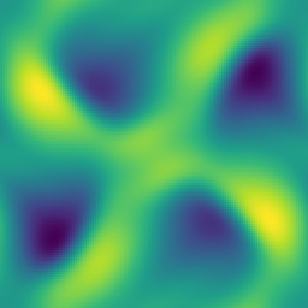
t=0.5 の密度場 — 特徴的な OT 渦構造
8保存量ドリフト ~1e-12・divB=1.2e-14・正値性維持。6 秒。
格子ボルツマン D3Q19
fa(x+ca, t+1) = fa + (feqa − fa)/τ
feqa = waρ(1 + 3c·u + 9⁄2(c·u)² − 3⁄2u²)
feqa = waρ(1 + 3c·u + 9⁄2(c·u)² − 3⁄2u²)
Egison ソース全文(lbm_d3q19.egi・111 行)
-- -- lbm_d3q19.egi : lattice Boltzmann, D3Q19, BGK collision -- -- f_a(x + c_a, t+1) = f_a(x,t) + (feq_a(rho,u) - f_a(x,t)) / tau -- feq_a = w_a rho (1 + 3 c.u + 9/2 (c.u)^2 - 3/2 u.u) -- -- All 19 collide lines, all 19 stream lines, and all 19 equilibrium -- init lines are *generated by mapping over the velocity set*: the -- direction list and weights below are the entire model definition. -- Each stream shifts a different direction, so the 19 outputs all have -- different stencil offsets -- exactly the mixed-offset case that the -- upstream mkKernel fix makes compile correctly. -- -- Test problem: a shear wave u_y = u0c sin(kk x) decaying at the exact -- BGK rate nu = (tau - 1/2)/3. -- -- Run: egison -l fmrgen.egi -l fmrlegacy3d.egi lbm_d3q19.egi > lbm_d3q19.fmr -- declare symbol tau, kk, u0c def rho := function (x, y, z) def ux := function (x, y, z) def uy := function (x, y, z) def uz := function (x, y, z) -- the 19 distribution fields and their post-collision partners, as -- programmatically named function-symbol families (functionSymbol); -- previously 38 individual defs, because `function (...)` can only -- take its name from a definition context def fs : [MathValue] := map (\n -> functionSymbol (S.append "f" (show n)) [x, y, z]) (between 0 18) def gs : [MathValue] := map (\n -> functionSymbol (S.append "g" (show n)) [x, y, z]) (between 0 18) -- the D3Q19 velocity set: rest, 6 faces, 12 edges def dirs : [(MathValue, MathValue, MathValue)] := [(0, 0, 0), (1, 0, 0), (-1, 0, 0), (0, 1, 0), (0, -1, 0), (0, 0, 1), (0, 0, -1), (1, 1, 0), (-1, -1, 0), (1, -1, 0), (-1, 1, 0), (1, 0, 1), (-1, 0, -1), (1, 0, -1), (-1, 0, 1), (0, 1, 1), (0, -1, -1), (0, 1, -1), (0, -1, 1)] def wgts : [MathValue] := [1 / 3, 1 / 18, 1 / 18, 1 / 18, 1 / 18, 1 / 18, 1 / 18, 1 / 36, 1 / 36, 1 / 36, 1 / 36, 1 / 36, 1 / 36, 1 / 36, 1 / 36, 1 / 36, 1 / 36, 1 / 36, 1 / 36] def trip := zip3 wgts dirs (between 0 18) -- (c.u) and u.u are let-bound: the let-generalization dispatch failure -- that once forced inlining here is fixed upstream def feq (w: MathValue) (c: (MathValue, MathValue, MathValue)) (r: MathValue) (vx: MathValue) (vy: MathValue) (vz: MathValue) : MathValue := let (cx, cy, cz) := c in let cu := cx * vx + cy * vy + cz * vz in let uu := vx * vx + vy * vy + vz * vz in w * r * (1 + 3 * cu + (9 / 2) * cu * cu - (3 / 2) * uu) def stream (c: (MathValue, MathValue, MathValue)) (gA: MathValue) : MathValue := let (cx, cy, cz) := c in shift 3 (0 - cz) (shift 2 (0 - cy) (shift 1 (0 - cx) gA)) def fNames : [String] := map (\a -> S.concat ["f", show a]) (between 0 18) def fpNames : [String] := map (\a -> S.concat ["f", show a, "'"]) (between 0 18) def initLines : [String] := map (\(w, c, a) -> fmrInit (S.concat ["f", show a]) (feq w c 1 0 (u0c * sin (kk * x)) 0)) trip def momLine (nm: String) (pick: (MathValue, MathValue, MathValue) -> MathValue) : String := fmrEq nm (sum (map (\(w, c, a) -> pick c * nth (a + 1) fs) trip) / rho) def collLines : [String] := map (\(w, c, a) -> fmrEq (S.concat ["g", show a]) (nth (a + 1) fs + (feq w c rho ux uy uz - nth (a + 1) fs) / tau)) trip def streamLines : [String] := map (\(w, c, a) -> fmrEq (S.concat ["f", show a, "'"]) (stream c (nth (a + 1) gs))) trip def prog : [String] := [ "dimension :: 3" , "axes :: x,y,z" , "" , "# BGK: nu = (tau - 1/2)/3 = 0.1; kk = 2*pi/64" , "double :: tau = 0.8" , "double :: kk = 0.09817477042468103" , "double :: u0c = 0.05" , "double :: dt = 1.0" , "" , "extern function :: sin" , "" , S.concat ["begin function (", S.intercalate "," fNames, ") = init()"] , S.concat [" double [] :: ", S.intercalate ", " fNames] ] ++ initLines ++ [ "end function" , "" , S.concat ["begin function (", S.intercalate "," fpNames, ") = step(", S.intercalate "," fNames, ")"] , fmrEq "rho" (sum fs) , momLine "ux" (\(cx, cy, cz) -> cx) , momLine "uy" (\(cx, cy, cz) -> cy) , momLine "uz" (\(cx, cy, cz) -> cz) ] ++ collLines ++ streamLines ++ [ "end function" ] def main (args: [String]) : IO () := print (S.intercalate "\n" prog)
生成された Formura 全文(lbm_d3q19.fmr・78 行)
dimension :: 3
axes :: x,y,z
# BGK: nu = (tau - 1/2)/3 = 0.1; kk = 2*pi/64
double :: tau = 0.8
double :: kk = 0.09817477042468103
double :: u0c = 0.05
double :: dt = 1.0
extern function :: sin
begin function (f0,f1,f2,f3,f4,f5,f6,f7,f8,f9,f10,f11,f12,f13,f14,f15,f16,f17,f18) = init()
double [] :: f0, f1, f2, f3, f4, f5, f6, f7, f8, f9, f10, f11, f12, f13, f14, f15, f16, f17, f18
f0[i,j,k] = (-1)*sin(kk*(i*dx))**2*u0c**2/(2) + 1/(3)
f1[i,j,k] = (-1)*sin(kk*(i*dx))**2*u0c**2/(12) + 1/(18)
f2[i,j,k] = (-1)*sin(kk*(i*dx))**2*u0c**2/(12) + 1/(18)
f3[i,j,k] = sin(kk*(i*dx))**2*u0c**2/(6) + sin(kk*(i*dx))*u0c/(6) + 1/(18)
f4[i,j,k] = sin(kk*(i*dx))**2*u0c**2/(6) + (-1)*sin(kk*(i*dx))*u0c/(6) + 1/(18)
f5[i,j,k] = (-1)*sin(kk*(i*dx))**2*u0c**2/(12) + 1/(18)
f6[i,j,k] = (-1)*sin(kk*(i*dx))**2*u0c**2/(12) + 1/(18)
f7[i,j,k] = sin(kk*(i*dx))**2*u0c**2/(12) + sin(kk*(i*dx))*u0c/(12) + 1/(36)
f8[i,j,k] = sin(kk*(i*dx))**2*u0c**2/(12) + (-1)*sin(kk*(i*dx))*u0c/(12) + 1/(36)
f9[i,j,k] = sin(kk*(i*dx))**2*u0c**2/(12) + (-1)*sin(kk*(i*dx))*u0c/(12) + 1/(36)
f10[i,j,k] = sin(kk*(i*dx))**2*u0c**2/(12) + sin(kk*(i*dx))*u0c/(12) + 1/(36)
f11[i,j,k] = (-1)*sin(kk*(i*dx))**2*u0c**2/(24) + 1/(36)
f12[i,j,k] = (-1)*sin(kk*(i*dx))**2*u0c**2/(24) + 1/(36)
f13[i,j,k] = (-1)*sin(kk*(i*dx))**2*u0c**2/(24) + 1/(36)
f14[i,j,k] = (-1)*sin(kk*(i*dx))**2*u0c**2/(24) + 1/(36)
f15[i,j,k] = sin(kk*(i*dx))**2*u0c**2/(12) + sin(kk*(i*dx))*u0c/(12) + 1/(36)
f16[i,j,k] = sin(kk*(i*dx))**2*u0c**2/(12) + (-1)*sin(kk*(i*dx))*u0c/(12) + 1/(36)
f17[i,j,k] = sin(kk*(i*dx))**2*u0c**2/(12) + sin(kk*(i*dx))*u0c/(12) + 1/(36)
f18[i,j,k] = sin(kk*(i*dx))**2*u0c**2/(12) + (-1)*sin(kk*(i*dx))*u0c/(12) + 1/(36)
end function
begin function (f0',f1',f2',f3',f4',f5',f6',f7',f8',f9',f10',f11',f12',f13',f14',f15',f16',f17',f18') = step(f0,f1,f2,f3,f4,f5,f6,f7,f8,f9,f10,f11,f12,f13,f14,f15,f16,f17,f18)
rho = f9[i,j,k] + f8[i,j,k] + f7[i,j,k] + f6[i,j,k] + f5[i,j,k] + f4[i,j,k] + f3[i,j,k] + f2[i,j,k] + f18[i,j,k] + f17[i,j,k] + f16[i,j,k] + f15[i,j,k] + f14[i,j,k] + f13[i,j,k] + f12[i,j,k] + f11[i,j,k] + f10[i,j,k] + f1[i,j,k] + f0[i,j,k]
ux = f9[i,j,k]/(rho[i,j,k]) + (-1)*f8[i,j,k]/(rho[i,j,k]) + f7[i,j,k]/(rho[i,j,k]) + (-1)*f2[i,j,k]/(rho[i,j,k]) + (-1)*f14[i,j,k]/(rho[i,j,k]) + f13[i,j,k]/(rho[i,j,k]) + (-1)*f12[i,j,k]/(rho[i,j,k]) + f11[i,j,k]/(rho[i,j,k]) + (-1)*f10[i,j,k]/(rho[i,j,k]) + f1[i,j,k]/(rho[i,j,k])
uy = (-1)*f9[i,j,k]/(rho[i,j,k]) + (-1)*f8[i,j,k]/(rho[i,j,k]) + f7[i,j,k]/(rho[i,j,k]) + (-1)*f4[i,j,k]/(rho[i,j,k]) + f3[i,j,k]/(rho[i,j,k]) + (-1)*f18[i,j,k]/(rho[i,j,k]) + f17[i,j,k]/(rho[i,j,k]) + (-1)*f16[i,j,k]/(rho[i,j,k]) + f15[i,j,k]/(rho[i,j,k]) + f10[i,j,k]/(rho[i,j,k])
uz = (-1)*f6[i,j,k]/(rho[i,j,k]) + f5[i,j,k]/(rho[i,j,k]) + f18[i,j,k]/(rho[i,j,k]) + (-1)*f17[i,j,k]/(rho[i,j,k]) + (-1)*f16[i,j,k]/(rho[i,j,k]) + f15[i,j,k]/(rho[i,j,k]) + f14[i,j,k]/(rho[i,j,k]) + (-1)*f13[i,j,k]/(rho[i,j,k]) + (-1)*f12[i,j,k]/(rho[i,j,k]) + f11[i,j,k]/(rho[i,j,k])
g0 = (-1)*rho[i,j,k]*uz[i,j,k]**2/(2*tau) + (-1)*rho[i,j,k]*uy[i,j,k]**2/(2*tau) + (-1)*rho[i,j,k]*ux[i,j,k]**2/(2*tau) + f0[i,j,k] + rho[i,j,k]/(3*tau) + (-1)*f0[i,j,k]/(tau)
g1 = (-1)*rho[i,j,k]*uz[i,j,k]**2/(12*tau) + (-1)*rho[i,j,k]*uy[i,j,k]**2/(12*tau) + rho[i,j,k]*ux[i,j,k]**2/(6*tau) + rho[i,j,k]*ux[i,j,k]/(6*tau) + f1[i,j,k] + rho[i,j,k]/(18*tau) + (-1)*f1[i,j,k]/(tau)
g2 = (-1)*rho[i,j,k]*uz[i,j,k]**2/(12*tau) + (-1)*rho[i,j,k]*uy[i,j,k]**2/(12*tau) + rho[i,j,k]*ux[i,j,k]**2/(6*tau) + (-1)*rho[i,j,k]*ux[i,j,k]/(6*tau) + f2[i,j,k] + rho[i,j,k]/(18*tau) + (-1)*f2[i,j,k]/(tau)
g3 = (-1)*rho[i,j,k]*uz[i,j,k]**2/(12*tau) + rho[i,j,k]*uy[i,j,k]**2/(6*tau) + (-1)*rho[i,j,k]*ux[i,j,k]**2/(12*tau) + rho[i,j,k]*uy[i,j,k]/(6*tau) + f3[i,j,k] + rho[i,j,k]/(18*tau) + (-1)*f3[i,j,k]/(tau)
g4 = (-1)*rho[i,j,k]*uz[i,j,k]**2/(12*tau) + rho[i,j,k]*uy[i,j,k]**2/(6*tau) + (-1)*rho[i,j,k]*ux[i,j,k]**2/(12*tau) + (-1)*rho[i,j,k]*uy[i,j,k]/(6*tau) + f4[i,j,k] + rho[i,j,k]/(18*tau) + (-1)*f4[i,j,k]/(tau)
g5 = rho[i,j,k]*uz[i,j,k]**2/(6*tau) + (-1)*rho[i,j,k]*uy[i,j,k]**2/(12*tau) + (-1)*rho[i,j,k]*ux[i,j,k]**2/(12*tau) + rho[i,j,k]*uz[i,j,k]/(6*tau) + f5[i,j,k] + rho[i,j,k]/(18*tau) + (-1)*f5[i,j,k]/(tau)
g6 = rho[i,j,k]*uz[i,j,k]**2/(6*tau) + (-1)*rho[i,j,k]*uy[i,j,k]**2/(12*tau) + (-1)*rho[i,j,k]*ux[i,j,k]**2/(12*tau) + (-1)*rho[i,j,k]*uz[i,j,k]/(6*tau) + f6[i,j,k] + rho[i,j,k]/(18*tau) + (-1)*f6[i,j,k]/(tau)
g7 = (-1)*rho[i,j,k]*uz[i,j,k]**2/(24*tau) + rho[i,j,k]*uy[i,j,k]**2/(12*tau) + rho[i,j,k]*ux[i,j,k]**2/(12*tau) + rho[i,j,k]*ux[i,j,k]*uy[i,j,k]/(4*tau) + rho[i,j,k]*uy[i,j,k]/(12*tau) + rho[i,j,k]*ux[i,j,k]/(12*tau) + f7[i,j,k] + rho[i,j,k]/(36*tau) + (-1)*f7[i,j,k]/(tau)
g8 = (-1)*rho[i,j,k]*uz[i,j,k]**2/(24*tau) + rho[i,j,k]*uy[i,j,k]**2/(12*tau) + rho[i,j,k]*ux[i,j,k]**2/(12*tau) + rho[i,j,k]*ux[i,j,k]*uy[i,j,k]/(4*tau) + (-1)*rho[i,j,k]*uy[i,j,k]/(12*tau) + (-1)*rho[i,j,k]*ux[i,j,k]/(12*tau) + f8[i,j,k] + rho[i,j,k]/(36*tau) + (-1)*f8[i,j,k]/(tau)
g9 = (-1)*rho[i,j,k]*uz[i,j,k]**2/(24*tau) + rho[i,j,k]*uy[i,j,k]**2/(12*tau) + rho[i,j,k]*ux[i,j,k]**2/(12*tau) + (-1)*rho[i,j,k]*ux[i,j,k]*uy[i,j,k]/(4*tau) + (-1)*rho[i,j,k]*uy[i,j,k]/(12*tau) + rho[i,j,k]*ux[i,j,k]/(12*tau) + f9[i,j,k] + rho[i,j,k]/(36*tau) + (-1)*f9[i,j,k]/(tau)
g10 = (-1)*rho[i,j,k]*uz[i,j,k]**2/(24*tau) + rho[i,j,k]*uy[i,j,k]**2/(12*tau) + rho[i,j,k]*ux[i,j,k]**2/(12*tau) + (-1)*rho[i,j,k]*ux[i,j,k]*uy[i,j,k]/(4*tau) + rho[i,j,k]*uy[i,j,k]/(12*tau) + (-1)*rho[i,j,k]*ux[i,j,k]/(12*tau) + f10[i,j,k] + rho[i,j,k]/(36*tau) + (-1)*f10[i,j,k]/(tau)
g11 = rho[i,j,k]*uz[i,j,k]**2/(12*tau) + (-1)*rho[i,j,k]*uy[i,j,k]**2/(24*tau) + rho[i,j,k]*ux[i,j,k]**2/(12*tau) + rho[i,j,k]*ux[i,j,k]*uz[i,j,k]/(4*tau) + rho[i,j,k]*uz[i,j,k]/(12*tau) + rho[i,j,k]*ux[i,j,k]/(12*tau) + f11[i,j,k] + rho[i,j,k]/(36*tau) + (-1)*f11[i,j,k]/(tau)
g12 = rho[i,j,k]*uz[i,j,k]**2/(12*tau) + (-1)*rho[i,j,k]*uy[i,j,k]**2/(24*tau) + rho[i,j,k]*ux[i,j,k]**2/(12*tau) + rho[i,j,k]*ux[i,j,k]*uz[i,j,k]/(4*tau) + (-1)*rho[i,j,k]*uz[i,j,k]/(12*tau) + (-1)*rho[i,j,k]*ux[i,j,k]/(12*tau) + f12[i,j,k] + rho[i,j,k]/(36*tau) + (-1)*f12[i,j,k]/(tau)
g13 = rho[i,j,k]*uz[i,j,k]**2/(12*tau) + (-1)*rho[i,j,k]*uy[i,j,k]**2/(24*tau) + rho[i,j,k]*ux[i,j,k]**2/(12*tau) + (-1)*rho[i,j,k]*ux[i,j,k]*uz[i,j,k]/(4*tau) + (-1)*rho[i,j,k]*uz[i,j,k]/(12*tau) + rho[i,j,k]*ux[i,j,k]/(12*tau) + f13[i,j,k] + rho[i,j,k]/(36*tau) + (-1)*f13[i,j,k]/(tau)
g14 = rho[i,j,k]*uz[i,j,k]**2/(12*tau) + (-1)*rho[i,j,k]*uy[i,j,k]**2/(24*tau) + rho[i,j,k]*ux[i,j,k]**2/(12*tau) + (-1)*rho[i,j,k]*ux[i,j,k]*uz[i,j,k]/(4*tau) + rho[i,j,k]*uz[i,j,k]/(12*tau) + (-1)*rho[i,j,k]*ux[i,j,k]/(12*tau) + f14[i,j,k] + rho[i,j,k]/(36*tau) + (-1)*f14[i,j,k]/(tau)
g15 = rho[i,j,k]*uz[i,j,k]**2/(12*tau) + rho[i,j,k]*uy[i,j,k]**2/(12*tau) + rho[i,j,k]*uy[i,j,k]*uz[i,j,k]/(4*tau) + (-1)*rho[i,j,k]*ux[i,j,k]**2/(24*tau) + rho[i,j,k]*uz[i,j,k]/(12*tau) + rho[i,j,k]*uy[i,j,k]/(12*tau) + f15[i,j,k] + rho[i,j,k]/(36*tau) + (-1)*f15[i,j,k]/(tau)
g16 = rho[i,j,k]*uz[i,j,k]**2/(12*tau) + rho[i,j,k]*uy[i,j,k]**2/(12*tau) + rho[i,j,k]*uy[i,j,k]*uz[i,j,k]/(4*tau) + (-1)*rho[i,j,k]*ux[i,j,k]**2/(24*tau) + (-1)*rho[i,j,k]*uz[i,j,k]/(12*tau) + (-1)*rho[i,j,k]*uy[i,j,k]/(12*tau) + f16[i,j,k] + rho[i,j,k]/(36*tau) + (-1)*f16[i,j,k]/(tau)
g17 = rho[i,j,k]*uz[i,j,k]**2/(12*tau) + rho[i,j,k]*uy[i,j,k]**2/(12*tau) + (-1)*rho[i,j,k]*uy[i,j,k]*uz[i,j,k]/(4*tau) + (-1)*rho[i,j,k]*ux[i,j,k]**2/(24*tau) + (-1)*rho[i,j,k]*uz[i,j,k]/(12*tau) + rho[i,j,k]*uy[i,j,k]/(12*tau) + f17[i,j,k] + rho[i,j,k]/(36*tau) + (-1)*f17[i,j,k]/(tau)
g18 = rho[i,j,k]*uz[i,j,k]**2/(12*tau) + rho[i,j,k]*uy[i,j,k]**2/(12*tau) + (-1)*rho[i,j,k]*uy[i,j,k]*uz[i,j,k]/(4*tau) + (-1)*rho[i,j,k]*ux[i,j,k]**2/(24*tau) + rho[i,j,k]*uz[i,j,k]/(12*tau) + (-1)*rho[i,j,k]*uy[i,j,k]/(12*tau) + f18[i,j,k] + rho[i,j,k]/(36*tau) + (-1)*f18[i,j,k]/(tau)
f0' = g0[i,j,k]
f1' = g1[i-1,j,k]
f2' = g2[i+1,j,k]
f3' = g3[i,j-1,k]
f4' = g4[i,j+1,k]
f5' = g5[i,j,k-1]
f6' = g6[i,j,k+1]
f7' = g7[i-1,j-1,k]
f8' = g8[i+1,j+1,k]
f9' = g9[i-1,j+1,k]
f10' = g10[i+1,j-1,k]
f11' = g11[i-1,j,k-1]
f12' = g12[i+1,j,k+1]
f13' = g13[i-1,j,k+1]
f14' = g14[i+1,j,k-1]
f15' = g15[i,j-1,k-1]
f16' = g16[i,j+1,k+1]
f17' = g17[i,j-1,k+1]
f18' = g18[i,j+1,k-1]
end function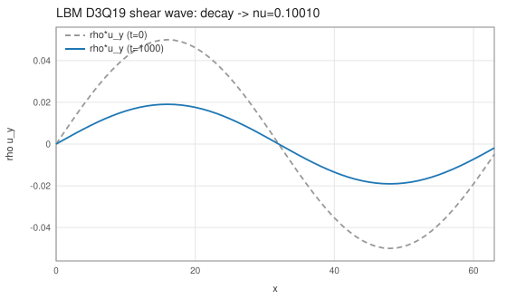
剪断波の粘性減衰(1000 step で振幅 38.1%)
実測 ν=0.10010(BGK 厳密 (τ−½)/3=0.1)・質量 4.8e-14。
19出力の異種オフセット = 混在オフセット修正の回帰ショーケース。
Kuramoto–Sivashinsky(時空カオス)
∂tu = −(u²/2)x − uxx − uxxxx
Formurae ソース全文(ks3d.fe・21 行)
-- Kuramoto-Sivashinsky: u_t = -(u^2/2)_x - u_xx - u_xxxx -- The fourth derivative goes through the intermediate field w = u_xx -- (a `local`, emitted as a grid field line), so every term telescopes -- and sum u is conserved exactly. L = 22: spatio-temporal chaos. dimension 3 axes x, y, z param dt = 0.00015 extern cos raw # wavenumbers: 2*pi/22 and its double field u : scalar init: u = cos(0.28559933214452665*i*dx) + 0.1*cos(0.5711986642890533*i*dx) step: local w = ∂ 2 1 x u u' = u - dt * (∂x (u * u / 2) + w + ∂ 2 1 x w)
生成された Egison(中間形・fec 出力)(ks3d.egi・160 行)
-- -- GENERATED by fec (the Formurae compiler) from ks3d.fe -- edit the .fe, not this file -- declare symbol dt declare symbol x, y, z, hx, hy, hz def feDim : Integer := 3 def feAxes : [String] := ["x", "y", "z"] def feAxisIds : [Integer] := [1, 2, 3] def feCoords : Vector MathValue := [| x, y, z |] def feHsteps : Vector MathValue := [| hx, hy, hz |] def coords : Vector MathValue := feCoords def hsteps : Vector MathValue := feHsteps def axisName (a: Integer) : String := nth a ["i", "j", "k"] def symName (v: String) : String := match v as string with | #"hx" -> "dx" | #"hy" -> "dy" | #"hz" -> "dz" | #"x" -> "(i*dx)" | #"y" -> "(j*dy)" | #"z" -> "(k*dz)" | _ -> v def shift (a: Integer) (c: MathValue) (u: MathValue) : MathValue := substitute [(feCoords_a, feCoords_a + c * feHsteps_a)] u def dC (a: Integer) (u: MathValue) : MathValue := (shift a 1 u - shift a (-1) u) / (2 * feHsteps_a) def dC2 (a: Integer) (u: MathValue) : MathValue := (shift a 1 u - 2 * u + shift a (-1) u) / ((feHsteps_a) ^ 2) def dF (a: Integer) (u: MathValue) : MathValue := (shift a 1 u - u) / feHsteps_a def dB (a: Integer) (u: MathValue) : MathValue := (u - shift a (-1) u) / feHsteps_a def dTaylor (m: Integer) (ks: [MathValue]) (a: Integer) (u: MathValue) : MathValue := sum (map (\(c, k) -> c * shift a k u) (zip (taylorStencil m ks) ks)) / (feHsteps_a ^ m) def axisId (axis: MathValue) : Integer := match axis as mathValue with | symbol $v _ -> match v as string with | #"x" -> 1 | #"y" -> 2 | #"z" -> 3 | _ -> 0 def ∂ (m: Integer) (r: Integer) (axis: MathValue) (u: MathValue) : MathValue := let a := axisId axis in if m = 1 && r = 1 then dC a u else if m = 2 && r = 1 then dC2 a u else dTaylor m (between (0 - r) r) a u def offsetSuffix (o: MathValue) : String := match o as mathValue with | #0 -> "" | #1 -> "+1" | #2 -> "+2" | #3 -> "+3" | #(-1) -> "-1" | #(-2) -> "-2" | #(-3) -> "-3" | #(1 / 2) -> "+1/2" | #(-1 / 2) -> "-1/2" | #(3 / 2) -> "+3/2" | #(-3 / 2) -> "-3/2" | _ -> S.concat ["+(", show o, ")"] def gridIndex (a: Integer) (arg: MathValue) : String := S.append (axisName a) (offsetSuffix ((arg - coords_a) / hsteps_a)) def fmrFieldName (nm: String) : String := match nm as string with | _ -> nm def gridRef (g: MathValue) (args: [MathValue]) : String := S.concat [fmrFieldName (show g), "[", S.intercalate "," (map (\(a, arg) -> gridIndex a arg) (zip feAxisIds args)), "]"] def wrapNeg (s: String) : String := if S.head s = '-' then S.concat ["(", s, ")"] else s def applyName g := mathFunctionName g def showFactor (f: MathValue) : String := match f as mathValue with | func $g $args -> gridRef g args | apply1 $g $a1 -> S.concat [applyName g, "(", showFmr a1, ")"] | quote $e -> S.concat ["(", showFmr e, ")"] | symbol $v _ -> symName v | _ -> S.concat ["(", showFmr f, ")"] def showPow (f: MathValue) (n: Integer) : String := if n = 1 then showFactor f else S.concat [showFactor f, "**", show n] def coefPQ (c: MathValue) : (String, String) := match c as mathValue with | $p / $q -> (show p, show q) def showTerm (t: MathValue) : String := match t as mathValue with | term $c $xs -> let (cp, cq) := coefPQ c in let numFs := map (\(f, n) -> showPow f n) (filter (\(f, n) -> n > 0) xs) in let denFs := map (\(f, n) -> showPow f (0 - n)) (filter (\(f, n) -> n < 0) xs) in let numParts := if cp = "1" && not (numFs = []) then numFs else wrapNeg cp :: numFs in let denParts := (if cq = "1" then [] else [cq]) ++ denFs in let numStr := S.intercalate "*" numParts in if denParts = [] then numStr else S.concat [numStr, "/(", S.intercalate "*" denParts, ")"] def showPoly (p: MathValue) : String := match p as mathValue with | #0 -> "0" | poly $ts / _ -> S.intercalate " + " (map showTerm ts) def showFmr (e: MathValue) : String := match e as mathValue with | #0 -> "0" | $nu / #1 -> showPoly nu | $nu / $de -> S.concat ["(", showPoly nu, ")/(", showPoly de, ")"] def fmrEq (lhs: String) (rhs: MathValue) : String := S.concat [" ", lhs, " = ", showFmr rhs] def feGridPoint : String := S.intercalate "," (map axisName feAxisIds) def fmrInit (lhs: String) (rhs: MathValue) : String := S.concat [" ", lhs, "[", feGridPoint, "] = ", showFmr rhs] def componentEqs (names: [String]) (values: [MathValue]) : [String] := map (\(name, value) -> fmrEq (S.append name "'") value) (zip names values) def scalarEq (nm: String) (c: MathValue) : [String] := [fmrEq (S.append nm "'") c] def tupleOf (xs: [String]) : String := if length xs = 1 then head xs else S.concat ["(", S.intercalate "," xs, ")"] def emitModelOn (dim: Integer) (axes: [String]) (params: [(String, String)]) (helpers: [String]) (comps: [String]) (initLines: [String]) (stepLines: [String]) : String := let compsP := map (\c -> S.append c "'") comps in S.intercalate "\n" ([ S.append "dimension :: " (show dim) , S.append "axes :: " (S.intercalate "," axes) , "" ] ++ map (\(n, v) -> S.concat ["double :: ", n, " = ", v]) params ++ [""] ++ helpers ++ [""] ++ [ S.concat ["begin function ", tupleOf comps, " = init()"] , S.concat [" double [] :: ", S.intercalate ", " comps] ] ++ initLines ++ [ "end function" , "" , S.concat ["begin function ", tupleOf compsP, " = step", "(", S.intercalate "," comps, ")"] ] ++ stepLines ++ [ "end function" ]) def u := function (x, y, z) def w := function (x, y, z) def feParams := [("dt", "0.00015")] def feHelpers := [ "extern function :: cos" , "# wavenumbers: 2*pi/22 and its double" ] def feComps : [String] := ["u"] def feInits := [ " u[i,j,k] = cos(0.28559933214452665*i*dx) + 0.1*cos(0.5711986642890533*i*dx)" ] def feSteps := [fmrEq "w" (∂ 2 1 x u)] ++ scalarEq "u" (u - (dt * (∂ 1 1 x ((u * u) / 2) + w + ∂ 2 1 x w))) def main (args: [String]) : IO () := print (emitModelOn 3 ["x", "y", "z"] feParams feHelpers feComps feInits feSteps)
生成された Formura 全文(ks3d.fmr・17 行)
dimension :: 3
axes :: x,y,z
double :: dt = 0.00015
extern function :: cos
# wavenumbers: 2*pi/22 and its double
begin function u = init()
double [] :: u
u[i,j,k] = cos(0.28559933214452665*i*dx) + 0.1*cos(0.5711986642890533*i*dx)
end function
begin function u' = step(u)
w = (-2)*u[i,j,k]/(dx**2) + u[i-1,j,k]/(dx**2) + u[i+1,j,k]/(dx**2)
u' = (-1)*dt*w[i,j,k] + dt*u[i-1,j,k]**2/(4*dx) + (-1)*dt*u[i+1,j,k]**2/(4*dx) + u[i,j,k] + 2*dt*w[i,j,k]/(dx**2) + (-1)*dt*w[i-1,j,k]/(dx**2) + (-1)*dt*w[i+1,j,k]/(dx**2)
end function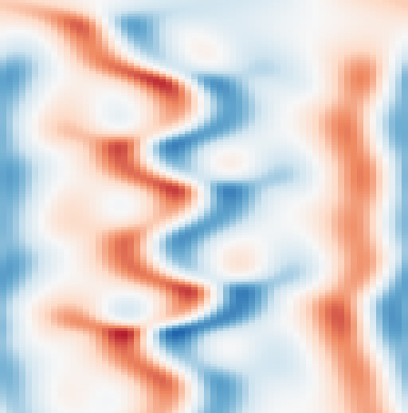
時空図(横=x、縦=時間 t:0→90): セル構造が分裂・合体するカオス
Lyapunov 内(t=5)で参照実装と 3.6e-14・Σu ドリフト 5.4e-12(60万 step)。
パターン形成・材料
Pearson 反応拡散(Formura 論文の看板再現)
∂tU = Fu(1−U) − FeUV² + Du∇²U
∂tV = FeUV² − FvV + Dv∇²V
∂tV = FeUV² − FvV + Dv∇²V
Formurae ソース全文(pearson3d.fe・28 行)
-- The flagship simulation of the Formura paper (Muranushi et al., -- FHPC 2016, Listing 1): below-ground dynamics of mycorrhiza modelled -- by Pearson's equations, with the paper's parameters. dimension 3 axes x, y, z param Fu = 1.0/86400.0 param Fv = 6.0/86400.0 param Fe = 1.0/900.0 param Du = 2.3e-10 param Dv = 6.1e-11 param dt = 200.0 extern fabs def Δ u = ∂ 2 1 x u + ∂ 2 1 y u + ∂ 2 1 z u raw isCenter = fun(i,j,k,w) (fabs(total_grid_x/2-i) < w) && (fabs(total_grid_y/2-j) < w) && (fabs(total_grid_z/2-k) < w) field U : scalar field V : scalar init: U = if isCenter(i,j,k,4) then 0.5 else 1.0 V = if isCenter(i,j,k,4) then 0.25 else 0.0 step: U' = U + dt * (Fu * (1 - U) - Fe * U * V^2 + Du * Δ U) V' = V + dt * (Fe * U * V^2 - Fv * V + Dv * Δ V)
生成された Egison(中間形・fec 出力)(pearson3d.egi・161 行)
-- -- GENERATED by fec (the Formurae compiler) from pearson3d.fe -- edit the .fe, not this file -- declare symbol Fu, Fv, Fe, Du, Dv, dt declare symbol x, y, z, hx, hy, hz def feDim : Integer := 3 def feAxes : [String] := ["x", "y", "z"] def feAxisIds : [Integer] := [1, 2, 3] def feCoords : Vector MathValue := [| x, y, z |] def feHsteps : Vector MathValue := [| hx, hy, hz |] def coords : Vector MathValue := feCoords def hsteps : Vector MathValue := feHsteps def axisName (a: Integer) : String := nth a ["i", "j", "k"] def symName (v: String) : String := match v as string with | #"hx" -> "dx" | #"hy" -> "dy" | #"hz" -> "dz" | #"x" -> "(i*dx)" | #"y" -> "(j*dy)" | #"z" -> "(k*dz)" | _ -> v def shift (a: Integer) (c: MathValue) (u: MathValue) : MathValue := substitute [(feCoords_a, feCoords_a + c * feHsteps_a)] u def dC (a: Integer) (u: MathValue) : MathValue := (shift a 1 u - shift a (-1) u) / (2 * feHsteps_a) def dC2 (a: Integer) (u: MathValue) : MathValue := (shift a 1 u - 2 * u + shift a (-1) u) / ((feHsteps_a) ^ 2) def dF (a: Integer) (u: MathValue) : MathValue := (shift a 1 u - u) / feHsteps_a def dB (a: Integer) (u: MathValue) : MathValue := (u - shift a (-1) u) / feHsteps_a def dTaylor (m: Integer) (ks: [MathValue]) (a: Integer) (u: MathValue) : MathValue := sum (map (\(c, k) -> c * shift a k u) (zip (taylorStencil m ks) ks)) / (feHsteps_a ^ m) def axisId (axis: MathValue) : Integer := match axis as mathValue with | symbol $v _ -> match v as string with | #"x" -> 1 | #"y" -> 2 | #"z" -> 3 | _ -> 0 def ∂ (m: Integer) (r: Integer) (axis: MathValue) (u: MathValue) : MathValue := let a := axisId axis in if m = 1 && r = 1 then dC a u else if m = 2 && r = 1 then dC2 a u else dTaylor m (between (0 - r) r) a u def offsetSuffix (o: MathValue) : String := match o as mathValue with | #0 -> "" | #1 -> "+1" | #2 -> "+2" | #3 -> "+3" | #(-1) -> "-1" | #(-2) -> "-2" | #(-3) -> "-3" | #(1 / 2) -> "+1/2" | #(-1 / 2) -> "-1/2" | #(3 / 2) -> "+3/2" | #(-3 / 2) -> "-3/2" | _ -> S.concat ["+(", show o, ")"] def gridIndex (a: Integer) (arg: MathValue) : String := S.append (axisName a) (offsetSuffix ((arg - coords_a) / hsteps_a)) def fmrFieldName (nm: String) : String := match nm as string with | _ -> nm def gridRef (g: MathValue) (args: [MathValue]) : String := S.concat [fmrFieldName (show g), "[", S.intercalate "," (map (\(a, arg) -> gridIndex a arg) (zip feAxisIds args)), "]"] def wrapNeg (s: String) : String := if S.head s = '-' then S.concat ["(", s, ")"] else s def applyName g := mathFunctionName g def showFactor (f: MathValue) : String := match f as mathValue with | func $g $args -> gridRef g args | apply1 $g $a1 -> S.concat [applyName g, "(", showFmr a1, ")"] | quote $e -> S.concat ["(", showFmr e, ")"] | symbol $v _ -> symName v | _ -> S.concat ["(", showFmr f, ")"] def showPow (f: MathValue) (n: Integer) : String := if n = 1 then showFactor f else S.concat [showFactor f, "**", show n] def coefPQ (c: MathValue) : (String, String) := match c as mathValue with | $p / $q -> (show p, show q) def showTerm (t: MathValue) : String := match t as mathValue with | term $c $xs -> let (cp, cq) := coefPQ c in let numFs := map (\(f, n) -> showPow f n) (filter (\(f, n) -> n > 0) xs) in let denFs := map (\(f, n) -> showPow f (0 - n)) (filter (\(f, n) -> n < 0) xs) in let numParts := if cp = "1" && not (numFs = []) then numFs else wrapNeg cp :: numFs in let denParts := (if cq = "1" then [] else [cq]) ++ denFs in let numStr := S.intercalate "*" numParts in if denParts = [] then numStr else S.concat [numStr, "/(", S.intercalate "*" denParts, ")"] def showPoly (p: MathValue) : String := match p as mathValue with | #0 -> "0" | poly $ts / _ -> S.intercalate " + " (map showTerm ts) def showFmr (e: MathValue) : String := match e as mathValue with | #0 -> "0" | $nu / #1 -> showPoly nu | $nu / $de -> S.concat ["(", showPoly nu, ")/(", showPoly de, ")"] def fmrEq (lhs: String) (rhs: MathValue) : String := S.concat [" ", lhs, " = ", showFmr rhs] def feGridPoint : String := S.intercalate "," (map axisName feAxisIds) def fmrInit (lhs: String) (rhs: MathValue) : String := S.concat [" ", lhs, "[", feGridPoint, "] = ", showFmr rhs] def componentEqs (names: [String]) (values: [MathValue]) : [String] := map (\(name, value) -> fmrEq (S.append name "'") value) (zip names values) def scalarEq (nm: String) (c: MathValue) : [String] := [fmrEq (S.append nm "'") c] def tupleOf (xs: [String]) : String := if length xs = 1 then head xs else S.concat ["(", S.intercalate "," xs, ")"] def emitModelOn (dim: Integer) (axes: [String]) (params: [(String, String)]) (helpers: [String]) (comps: [String]) (initLines: [String]) (stepLines: [String]) : String := let compsP := map (\c -> S.append c "'") comps in S.intercalate "\n" ([ S.append "dimension :: " (show dim) , S.append "axes :: " (S.intercalate "," axes) , "" ] ++ map (\(n, v) -> S.concat ["double :: ", n, " = ", v]) params ++ [""] ++ helpers ++ [""] ++ [ S.concat ["begin function ", tupleOf comps, " = init()"] , S.concat [" double [] :: ", S.intercalate ", " comps] ] ++ initLines ++ [ "end function" , "" , S.concat ["begin function ", tupleOf compsP, " = step", "(", S.intercalate "," comps, ")"] ] ++ stepLines ++ [ "end function" ]) def U := function (x, y, z) def V := function (x, y, z) def feParams := [("Fu", "1.0/86400.0"), ("Fv", "6.0/86400.0"), ("Fe", "1.0/900.0"), ("Du", "2.3e-10"), ("Dv", "6.1e-11"), ("dt", "200.0")] def feHelpers := [ "extern function :: fabs" , "isCenter = fun(i,j,k,w) (fabs(total_grid_x/2-i) < w) && (fabs(total_grid_y/2-j) < w) && (fabs(total_grid_z/2-k) < w)" ] def feComps : [String] := ["U", "V"] def feInits := [ " U[i,j,k] = if isCenter(i,j,k,4) then 0.5 else 1.0" , " V[i,j,k] = if isCenter(i,j,k,4) then 0.25 else 0.0" ] def feSteps := scalarEq "U" (U + (dt * (((Fu * (1 - U)) - (Fe * U * (V ^ 2))) + (Du * (∂ 2 1 x U + ∂ 2 1 y U + ∂ 2 1 z U))))) ++ scalarEq "V" (V + (dt * (((Fe * U * (V ^ 2)) - (Fv * V)) + (Dv * (∂ 2 1 x V + ∂ 2 1 y V + ∂ 2 1 z V))))) def main (args: [String]) : IO () := print (emitModelOn 3 ["x", "y", "z"] feParams feHelpers feComps feInits feSteps)
生成された Formura 全文(pearson3d.fmr・23 行)
dimension :: 3 axes :: x,y,z double :: Fu = 1.0/86400.0 double :: Fv = 6.0/86400.0 double :: Fe = 1.0/900.0 double :: Du = 2.3e-10 double :: Dv = 6.1e-11 double :: dt = 200.0 extern function :: fabs isCenter = fun(i,j,k,w) (fabs(total_grid_x/2-i) < w) && (fabs(total_grid_y/2-j) < w) && (fabs(total_grid_z/2-k) < w) begin function (U,V) = init() double [] :: U, V U[i,j,k] = if isCenter(i,j,k,4) then 0.5 else 1.0 V[i,j,k] = if isCenter(i,j,k,4) then 0.25 else 0.0 end function begin function (U',V') = step(U,V) U' = (-1)*Fe*U[i,j,k]*V[i,j,k]**2*dt + (-1)*Fu*U[i,j,k]*dt + Fu*dt + U[i,j,k] + (-2)*Du*U[i,j,k]*dt/(dz**2) + (-2)*Du*U[i,j,k]*dt/(dy**2) + (-2)*Du*U[i,j,k]*dt/(dx**2) + Du*U[i,j,k-1]*dt/(dz**2) + Du*U[i,j,k+1]*dt/(dz**2) + Du*U[i,j-1,k]*dt/(dy**2) + Du*U[i,j+1,k]*dt/(dy**2) + Du*U[i-1,j,k]*dt/(dx**2) + Du*U[i+1,j,k]*dt/(dx**2) V' = Fe*U[i,j,k]*V[i,j,k]**2*dt + (-1)*Fv*V[i,j,k]*dt + V[i,j,k] + (-2)*Dv*V[i,j,k]*dt/(dz**2) + (-2)*Dv*V[i,j,k]*dt/(dy**2) + (-2)*Dv*V[i,j,k]*dt/(dx**2) + Dv*V[i,j,k-1]*dt/(dz**2) + Dv*V[i,j,k+1]*dt/(dz**2) + Dv*V[i,j-1,k]*dt/(dy**2) + Dv*V[i,j+1,k]*dt/(dy**2) + Dv*V[i-1,j,k]*dt/(dx**2) + Dv*V[i+1,j,k]*dt/(dx**2) end function
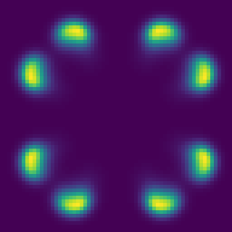
V 場の断面(20,000 step): 種スポットがリング状に自己複製 — 論文 Fig.7 と同じ
Gray–Scott 型ダイナミクス
64³格子(dt=200s)。40,000 step まで回すとスポットが全域に増殖。物理の記述は2行。
Cahn–Hilliard(スピノーダル分解)
μ = c³ − c − κ∇²c, ∂tc = M∇²μ
Formurae ソース全文(cahnhilliard3d.fe・24 行)
-- Cahn-Hilliard spinodal decomposition: -- mu = c^3 - c - kap lap c ; dc/dt = M lap mu -- The fourth-order operator is two chained radius-1 stages via the -- intermediate field mu (a `local`). Mass (sum c) is conserved -- exactly; the yaml monitors it through reduces. dimension 3 axes x, y, z param kap = 2.0 param mob = 1.0 param dt = 0.004 extern sin def Δ u = ∂ 2 1 x u + ∂ 2 1 y u + ∂ 2 1 z u field c : scalar init: c = 0.05*(sin(0.29*i)*sin(0.31*j)*sin(0.37*k) + sin(0.23*i + 0.41*j) + sin(0.19*k + 0.13*i)) step: local μ = c^3 - c - kap * Δ c c' = c + dt * mob * Δ μ
生成された Egison(中間形・fec 出力)(cahnhilliard3d.egi・159 行)
-- -- GENERATED by fec (the Formurae compiler) from cahnhilliard3d.fe -- edit the .fe, not this file -- declare symbol kap, mob, dt declare symbol x, y, z, hx, hy, hz def feDim : Integer := 3 def feAxes : [String] := ["x", "y", "z"] def feAxisIds : [Integer] := [1, 2, 3] def feCoords : Vector MathValue := [| x, y, z |] def feHsteps : Vector MathValue := [| hx, hy, hz |] def coords : Vector MathValue := feCoords def hsteps : Vector MathValue := feHsteps def axisName (a: Integer) : String := nth a ["i", "j", "k"] def symName (v: String) : String := match v as string with | #"hx" -> "dx" | #"hy" -> "dy" | #"hz" -> "dz" | #"x" -> "(i*dx)" | #"y" -> "(j*dy)" | #"z" -> "(k*dz)" | _ -> v def shift (a: Integer) (c: MathValue) (u: MathValue) : MathValue := substitute [(feCoords_a, feCoords_a + c * feHsteps_a)] u def dC (a: Integer) (u: MathValue) : MathValue := (shift a 1 u - shift a (-1) u) / (2 * feHsteps_a) def dC2 (a: Integer) (u: MathValue) : MathValue := (shift a 1 u - 2 * u + shift a (-1) u) / ((feHsteps_a) ^ 2) def dF (a: Integer) (u: MathValue) : MathValue := (shift a 1 u - u) / feHsteps_a def dB (a: Integer) (u: MathValue) : MathValue := (u - shift a (-1) u) / feHsteps_a def dTaylor (m: Integer) (ks: [MathValue]) (a: Integer) (u: MathValue) : MathValue := sum (map (\(c, k) -> c * shift a k u) (zip (taylorStencil m ks) ks)) / (feHsteps_a ^ m) def axisId (axis: MathValue) : Integer := match axis as mathValue with | symbol $v _ -> match v as string with | #"x" -> 1 | #"y" -> 2 | #"z" -> 3 | _ -> 0 def ∂ (m: Integer) (r: Integer) (axis: MathValue) (u: MathValue) : MathValue := let a := axisId axis in if m = 1 && r = 1 then dC a u else if m = 2 && r = 1 then dC2 a u else dTaylor m (between (0 - r) r) a u def offsetSuffix (o: MathValue) : String := match o as mathValue with | #0 -> "" | #1 -> "+1" | #2 -> "+2" | #3 -> "+3" | #(-1) -> "-1" | #(-2) -> "-2" | #(-3) -> "-3" | #(1 / 2) -> "+1/2" | #(-1 / 2) -> "-1/2" | #(3 / 2) -> "+3/2" | #(-3 / 2) -> "-3/2" | _ -> S.concat ["+(", show o, ")"] def gridIndex (a: Integer) (arg: MathValue) : String := S.append (axisName a) (offsetSuffix ((arg - coords_a) / hsteps_a)) def fmrFieldName (nm: String) : String := match nm as string with | _ -> nm def gridRef (g: MathValue) (args: [MathValue]) : String := S.concat [fmrFieldName (show g), "[", S.intercalate "," (map (\(a, arg) -> gridIndex a arg) (zip feAxisIds args)), "]"] def wrapNeg (s: String) : String := if S.head s = '-' then S.concat ["(", s, ")"] else s def applyName g := mathFunctionName g def showFactor (f: MathValue) : String := match f as mathValue with | func $g $args -> gridRef g args | apply1 $g $a1 -> S.concat [applyName g, "(", showFmr a1, ")"] | quote $e -> S.concat ["(", showFmr e, ")"] | symbol $v _ -> symName v | _ -> S.concat ["(", showFmr f, ")"] def showPow (f: MathValue) (n: Integer) : String := if n = 1 then showFactor f else S.concat [showFactor f, "**", show n] def coefPQ (c: MathValue) : (String, String) := match c as mathValue with | $p / $q -> (show p, show q) def showTerm (t: MathValue) : String := match t as mathValue with | term $c $xs -> let (cp, cq) := coefPQ c in let numFs := map (\(f, n) -> showPow f n) (filter (\(f, n) -> n > 0) xs) in let denFs := map (\(f, n) -> showPow f (0 - n)) (filter (\(f, n) -> n < 0) xs) in let numParts := if cp = "1" && not (numFs = []) then numFs else wrapNeg cp :: numFs in let denParts := (if cq = "1" then [] else [cq]) ++ denFs in let numStr := S.intercalate "*" numParts in if denParts = [] then numStr else S.concat [numStr, "/(", S.intercalate "*" denParts, ")"] def showPoly (p: MathValue) : String := match p as mathValue with | #0 -> "0" | poly $ts / _ -> S.intercalate " + " (map showTerm ts) def showFmr (e: MathValue) : String := match e as mathValue with | #0 -> "0" | $nu / #1 -> showPoly nu | $nu / $de -> S.concat ["(", showPoly nu, ")/(", showPoly de, ")"] def fmrEq (lhs: String) (rhs: MathValue) : String := S.concat [" ", lhs, " = ", showFmr rhs] def feGridPoint : String := S.intercalate "," (map axisName feAxisIds) def fmrInit (lhs: String) (rhs: MathValue) : String := S.concat [" ", lhs, "[", feGridPoint, "] = ", showFmr rhs] def componentEqs (names: [String]) (values: [MathValue]) : [String] := map (\(name, value) -> fmrEq (S.append name "'") value) (zip names values) def scalarEq (nm: String) (c: MathValue) : [String] := [fmrEq (S.append nm "'") c] def tupleOf (xs: [String]) : String := if length xs = 1 then head xs else S.concat ["(", S.intercalate "," xs, ")"] def emitModelOn (dim: Integer) (axes: [String]) (params: [(String, String)]) (helpers: [String]) (comps: [String]) (initLines: [String]) (stepLines: [String]) : String := let compsP := map (\c -> S.append c "'") comps in S.intercalate "\n" ([ S.append "dimension :: " (show dim) , S.append "axes :: " (S.intercalate "," axes) , "" ] ++ map (\(n, v) -> S.concat ["double :: ", n, " = ", v]) params ++ [""] ++ helpers ++ [""] ++ [ S.concat ["begin function ", tupleOf comps, " = init()"] , S.concat [" double [] :: ", S.intercalate ", " comps] ] ++ initLines ++ [ "end function" , "" , S.concat ["begin function ", tupleOf compsP, " = step", "(", S.intercalate "," comps, ")"] ] ++ stepLines ++ [ "end function" ]) def c := function (x, y, z) def mu := function (x, y, z) def feParams := [("kap", "2.0"), ("mob", "1.0"), ("dt", "0.004")] def feHelpers := [ "extern function :: sin" ] def feComps : [String] := ["c"] def feInits := [ " c[i,j,k] = 0.05*(sin(0.29*i)*sin(0.31*j)*sin(0.37*k) + sin(0.23*i + 0.41*j) + sin(0.19*k + 0.13*i))" ] def feSteps := [fmrEq "mu" (((c ^ 3) - c) - (kap * (∂ 2 1 x c + ∂ 2 1 y c + ∂ 2 1 z c)))] ++ scalarEq "c" (c + (dt * mob * (∂ 2 1 x mu + ∂ 2 1 y mu + ∂ 2 1 z mu))) def main (args: [String]) : IO () := print (emitModelOn 3 ["x", "y", "z"] feParams feHelpers feComps feInits feSteps)
生成された Formura 全文(cahnhilliard3d.fmr・18 行)
dimension :: 3 axes :: x,y,z double :: kap = 2.0 double :: mob = 1.0 double :: dt = 0.004 extern function :: sin begin function c = init() double [] :: c c[i,j,k] = 0.05*(sin(0.29*i)*sin(0.31*j)*sin(0.37*k) + sin(0.23*i + 0.41*j) + sin(0.19*k + 0.13*i)) end function begin function c' = step(c) mu = c[i,j,k]**3 + (-1)*c[i,j,k] + 2*c[i,j,k]*kap/(dz**2) + 2*c[i,j,k]*kap/(dy**2) + 2*c[i,j,k]*kap/(dx**2) + (-1)*c[i,j,k-1]*kap/(dz**2) + (-1)*c[i,j,k+1]*kap/(dz**2) + (-1)*c[i,j-1,k]*kap/(dy**2) + (-1)*c[i,j+1,k]*kap/(dy**2) + (-1)*c[i-1,j,k]*kap/(dx**2) + (-1)*c[i+1,j,k]*kap/(dx**2) c' = (-2)*dt*mob*mu[i,j,k]/(dz**2) + dt*mob*mu[i,j,k-1]/(dz**2) + dt*mob*mu[i,j,k+1]/(dz**2) + (-2)*dt*mob*mu[i,j,k]/(dy**2) + dt*mob*mu[i,j-1,k]/(dy**2) + dt*mob*mu[i,j+1,k]/(dy**2) + (-2)*dt*mob*mu[i,j,k]/(dx**2) + dt*mob*mu[i-1,j,k]/(dx**2) + dt*mob*mu[i+1,j,k]/(dx**2) + c[i,j,k] end function
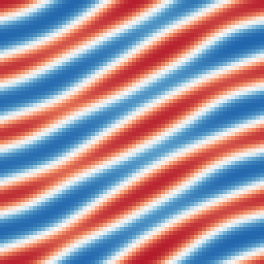
低波数の正弦ゆらぎから相分離したラメラ(縞)状二相構造(25,000 step、c∈[−0.95,0.96])
質量(reduces 経由)12桁保存・自由エネルギー単調減少。
TDGL 超伝導(量子化渦)
∂tψ = ψ − |ψ|²ψ + ∇²ψ (ψ = a + ib)
Formurae ソース全文(tdgl3d.fe・23 行)
-- Time-dependent Ginzburg-Landau (relaxational, psi = a + ib): -- da/dt = a - |psi|^2 a + lap a ; db/dt likewise -- From small noise the bulk saturates to |psi| ~ 1 while quantized -- vortices (cores with 2 pi winding) form and annihilate. dimension 3 axes x, y, z param dt = 0.05 extern sin def Δ u = ∂ 2 1 x u + ∂ 2 1 y u + ∂ 2 1 z u field a : scalar field b : scalar init: a = 0.1*(sin(0.31*i)*sin(0.27*j) + sin(0.17*i + 0.23*j)) b = 0.1*(sin(0.29*i + 1.0)*sin(0.33*j) + sin(0.21*i + 0.19*j + 2.0)) step: a' = a + dt * (a - (a^2 + b^2) * a + Δ a) b' = b + dt * (b - (a^2 + b^2) * b + Δ b)
生成された Egison(中間形・fec 出力)(tdgl3d.egi・160 行)
-- -- GENERATED by fec (the Formurae compiler) from tdgl3d.fe -- edit the .fe, not this file -- declare symbol dt declare symbol x, y, z, hx, hy, hz def feDim : Integer := 3 def feAxes : [String] := ["x", "y", "z"] def feAxisIds : [Integer] := [1, 2, 3] def feCoords : Vector MathValue := [| x, y, z |] def feHsteps : Vector MathValue := [| hx, hy, hz |] def coords : Vector MathValue := feCoords def hsteps : Vector MathValue := feHsteps def axisName (a: Integer) : String := nth a ["i", "j", "k"] def symName (v: String) : String := match v as string with | #"hx" -> "dx" | #"hy" -> "dy" | #"hz" -> "dz" | #"x" -> "(i*dx)" | #"y" -> "(j*dy)" | #"z" -> "(k*dz)" | _ -> v def shift (a: Integer) (c: MathValue) (u: MathValue) : MathValue := substitute [(feCoords_a, feCoords_a + c * feHsteps_a)] u def dC (a: Integer) (u: MathValue) : MathValue := (shift a 1 u - shift a (-1) u) / (2 * feHsteps_a) def dC2 (a: Integer) (u: MathValue) : MathValue := (shift a 1 u - 2 * u + shift a (-1) u) / ((feHsteps_a) ^ 2) def dF (a: Integer) (u: MathValue) : MathValue := (shift a 1 u - u) / feHsteps_a def dB (a: Integer) (u: MathValue) : MathValue := (u - shift a (-1) u) / feHsteps_a def dTaylor (m: Integer) (ks: [MathValue]) (a: Integer) (u: MathValue) : MathValue := sum (map (\(c, k) -> c * shift a k u) (zip (taylorStencil m ks) ks)) / (feHsteps_a ^ m) def axisId (axis: MathValue) : Integer := match axis as mathValue with | symbol $v _ -> match v as string with | #"x" -> 1 | #"y" -> 2 | #"z" -> 3 | _ -> 0 def ∂ (m: Integer) (r: Integer) (axis: MathValue) (u: MathValue) : MathValue := let a := axisId axis in if m = 1 && r = 1 then dC a u else if m = 2 && r = 1 then dC2 a u else dTaylor m (between (0 - r) r) a u def offsetSuffix (o: MathValue) : String := match o as mathValue with | #0 -> "" | #1 -> "+1" | #2 -> "+2" | #3 -> "+3" | #(-1) -> "-1" | #(-2) -> "-2" | #(-3) -> "-3" | #(1 / 2) -> "+1/2" | #(-1 / 2) -> "-1/2" | #(3 / 2) -> "+3/2" | #(-3 / 2) -> "-3/2" | _ -> S.concat ["+(", show o, ")"] def gridIndex (a: Integer) (arg: MathValue) : String := S.append (axisName a) (offsetSuffix ((arg - coords_a) / hsteps_a)) def fmrFieldName (nm: String) : String := match nm as string with | _ -> nm def gridRef (g: MathValue) (args: [MathValue]) : String := S.concat [fmrFieldName (show g), "[", S.intercalate "," (map (\(a, arg) -> gridIndex a arg) (zip feAxisIds args)), "]"] def wrapNeg (s: String) : String := if S.head s = '-' then S.concat ["(", s, ")"] else s def applyName g := mathFunctionName g def showFactor (f: MathValue) : String := match f as mathValue with | func $g $args -> gridRef g args | apply1 $g $a1 -> S.concat [applyName g, "(", showFmr a1, ")"] | quote $e -> S.concat ["(", showFmr e, ")"] | symbol $v _ -> symName v | _ -> S.concat ["(", showFmr f, ")"] def showPow (f: MathValue) (n: Integer) : String := if n = 1 then showFactor f else S.concat [showFactor f, "**", show n] def coefPQ (c: MathValue) : (String, String) := match c as mathValue with | $p / $q -> (show p, show q) def showTerm (t: MathValue) : String := match t as mathValue with | term $c $xs -> let (cp, cq) := coefPQ c in let numFs := map (\(f, n) -> showPow f n) (filter (\(f, n) -> n > 0) xs) in let denFs := map (\(f, n) -> showPow f (0 - n)) (filter (\(f, n) -> n < 0) xs) in let numParts := if cp = "1" && not (numFs = []) then numFs else wrapNeg cp :: numFs in let denParts := (if cq = "1" then [] else [cq]) ++ denFs in let numStr := S.intercalate "*" numParts in if denParts = [] then numStr else S.concat [numStr, "/(", S.intercalate "*" denParts, ")"] def showPoly (p: MathValue) : String := match p as mathValue with | #0 -> "0" | poly $ts / _ -> S.intercalate " + " (map showTerm ts) def showFmr (e: MathValue) : String := match e as mathValue with | #0 -> "0" | $nu / #1 -> showPoly nu | $nu / $de -> S.concat ["(", showPoly nu, ")/(", showPoly de, ")"] def fmrEq (lhs: String) (rhs: MathValue) : String := S.concat [" ", lhs, " = ", showFmr rhs] def feGridPoint : String := S.intercalate "," (map axisName feAxisIds) def fmrInit (lhs: String) (rhs: MathValue) : String := S.concat [" ", lhs, "[", feGridPoint, "] = ", showFmr rhs] def componentEqs (names: [String]) (values: [MathValue]) : [String] := map (\(name, value) -> fmrEq (S.append name "'") value) (zip names values) def scalarEq (nm: String) (c: MathValue) : [String] := [fmrEq (S.append nm "'") c] def tupleOf (xs: [String]) : String := if length xs = 1 then head xs else S.concat ["(", S.intercalate "," xs, ")"] def emitModelOn (dim: Integer) (axes: [String]) (params: [(String, String)]) (helpers: [String]) (comps: [String]) (initLines: [String]) (stepLines: [String]) : String := let compsP := map (\c -> S.append c "'") comps in S.intercalate "\n" ([ S.append "dimension :: " (show dim) , S.append "axes :: " (S.intercalate "," axes) , "" ] ++ map (\(n, v) -> S.concat ["double :: ", n, " = ", v]) params ++ [""] ++ helpers ++ [""] ++ [ S.concat ["begin function ", tupleOf comps, " = init()"] , S.concat [" double [] :: ", S.intercalate ", " comps] ] ++ initLines ++ [ "end function" , "" , S.concat ["begin function ", tupleOf compsP, " = step", "(", S.intercalate "," comps, ")"] ] ++ stepLines ++ [ "end function" ]) def a := function (x, y, z) def b := function (x, y, z) def feParams := [("dt", "0.05")] def feHelpers := [ "extern function :: sin" ] def feComps : [String] := ["a", "b"] def feInits := [ " a[i,j,k] = 0.1*(sin(0.31*i)*sin(0.27*j) + sin(0.17*i + 0.23*j))" , " b[i,j,k] = 0.1*(sin(0.29*i + 1.0)*sin(0.33*j) + sin(0.21*i + 0.19*j + 2.0))" ] def feSteps := scalarEq "a" (a + (dt * ((a - (((a ^ 2) + (b ^ 2)) * a)) + ∂ 2 1 x a + ∂ 2 1 y a + ∂ 2 1 z a))) ++ scalarEq "b" (b + (dt * ((b - (((a ^ 2) + (b ^ 2)) * b)) + ∂ 2 1 x b + ∂ 2 1 y b + ∂ 2 1 z b))) def main (args: [String]) : IO () := print (emitModelOn 3 ["x", "y", "z"] feParams feHelpers feComps feInits feSteps)
生成された Formura 全文(tdgl3d.fmr・17 行)
dimension :: 3 axes :: x,y,z double :: dt = 0.05 extern function :: sin begin function (a,b) = init() double [] :: a, b a[i,j,k] = 0.1*(sin(0.31*i)*sin(0.27*j) + sin(0.17*i + 0.23*j)) b[i,j,k] = 0.1*(sin(0.29*i + 1.0)*sin(0.33*j) + sin(0.21*i + 0.19*j + 2.0)) end function begin function (a',b') = step(a,b) a' = (-1)*a[i,j,k]**3*dt + (-1)*a[i,j,k]*b[i,j,k]**2*dt + a[i,j,k]*dt + a[i,j,k] + (-2)*a[i,j,k]*dt/(dz**2) + (-2)*a[i,j,k]*dt/(dy**2) + (-2)*a[i,j,k]*dt/(dx**2) + a[i,j,k-1]*dt/(dz**2) + a[i,j,k+1]*dt/(dz**2) + a[i,j-1,k]*dt/(dy**2) + a[i,j+1,k]*dt/(dy**2) + a[i-1,j,k]*dt/(dx**2) + a[i+1,j,k]*dt/(dx**2) b' = (-1)*b[i,j,k]**3*dt + (-1)*a[i,j,k]**2*b[i,j,k]*dt + b[i,j,k]*dt + b[i,j,k] + (-2)*b[i,j,k]*dt/(dz**2) + (-2)*b[i,j,k]*dt/(dy**2) + (-2)*b[i,j,k]*dt/(dx**2) + b[i,j,k-1]*dt/(dz**2) + b[i,j,k+1]*dt/(dz**2) + b[i,j-1,k]*dt/(dy**2) + b[i,j+1,k]*dt/(dy**2) + b[i-1,j,k]*dt/(dx**2) + b[i+1,j,k]*dt/(dx**2) end function
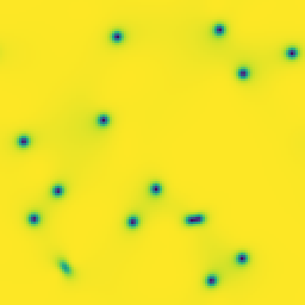
|ψ|² 場: 暗い点が量子化渦芯(min |ψ|²=0.004)
バルク |ψ|²=0.978 に飽和・渦芯 48 セル自発形成。3.6 秒。
幾何(CAS ならではの看板)
極座標の円環(平坦)
Δu = (1/r)∂r(r∂ru) + (1/r²)∂φφu, r ∈ [1,2]
曲率 0 — 曲がっているのは座標だけ
Formurae ソース全文(polar2d.fe・27 行)
-- Heat equation on a PLANAR ANNULUS in polar coordinates -- (r_phys, phi) = (1 + r, phi), r_phys in [1, 2]. The geometry is -- flat (curvature 0) -- only the COORDINATES are curved: from the -- embedding the CAS derives g = diag(1, (1+r)^2), i.e. the textbook -- polar Laplacian (1/r) d_r (r d_r u) + (1/r^2) d_phiphi u, assembled -- as an exactly conservative flux form. The r walls are Neumann -- (mirror), phi is periodic. dimension 3 axes r, φ, z param dt = 0.0001 extern exp extern cos def Δ u = lb u metric g embedding [ `(1 + r) * cos φ, `(1 + r) * sin φ, z ] field u : scalar init: u := exp (0 - 4 * (r - 1 / 2) ^ 2) * exp (cos φ - 1) step: u' = u + dt * Δ u
生成された Egison(中間形・fec 出力)(polar2d.egi・195 行)
-- -- GENERATED by fec (the Formurae compiler) from polar2d.fe -- edit the .fe, not this file -- declare symbol dt declare symbol x, y, z, hx, hy, hz def feDim : Integer := 3 def feAxes : [String] := ["r", "phi", "z"] def feAxisIds : [Integer] := [1, 2, 3] def feCoords : Vector MathValue := [| x, y, z |] def feHsteps : Vector MathValue := [| hx, hy, hz |] def coords : Vector MathValue := feCoords def hsteps : Vector MathValue := feHsteps def axisName (a: Integer) : String := nth a ["i", "j", "k"] def symName (v: String) : String := match v as string with | #"hx" -> "dr" | #"hy" -> "dphi" | #"hz" -> "dz" | #"x" -> "(i*dr)" | #"y" -> "(j*dphi)" | #"z" -> "(k*dz)" | _ -> v def shift (a: Integer) (c: MathValue) (u: MathValue) : MathValue := substitute [(feCoords_a, feCoords_a + c * feHsteps_a)] u def dC (a: Integer) (u: MathValue) : MathValue := (shift a 1 u - shift a (-1) u) / (2 * feHsteps_a) def dC2 (a: Integer) (u: MathValue) : MathValue := (shift a 1 u - 2 * u + shift a (-1) u) / ((feHsteps_a) ^ 2) def dF (a: Integer) (u: MathValue) : MathValue := (shift a 1 u - u) / feHsteps_a def dB (a: Integer) (u: MathValue) : MathValue := (u - shift a (-1) u) / feHsteps_a def dTaylor (m: Integer) (ks: [MathValue]) (a: Integer) (u: MathValue) : MathValue := sum (map (\(c, k) -> c * shift a k u) (zip (taylorStencil m ks) ks)) / (feHsteps_a ^ m) def axisId (axis: MathValue) : Integer := match axis as mathValue with | symbol $v _ -> match v as string with | #"x" -> 1 | #"y" -> 2 | #"z" -> 3 | _ -> 0 def ∂ (m: Integer) (r: Integer) (axis: MathValue) (u: MathValue) : MathValue := let a := axisId axis in if m = 1 && r = 1 then dC a u else if m = 2 && r = 1 then dC2 a u else dTaylor m (between (0 - r) r) a u def feIndexPairs : [(Integer, Integer)] := [(1, 1), (1, 2), (1, 3), (2, 1), (2, 2), (2, 3), (3, 1), (3, 2), (3, 3)] def yeeRef (sT: [MathValue]) (fld: (MathValue, [MathValue])) (disp: [MathValue]) : MathValue := let (fF, sF) := fld in substitute (map (\a -> (feCoords_a, feCoords_a + (nth a disp + nth a sT - nth a sF) * feHsteps_a)) feAxisIds) fF def unit3 (a: Integer) (c: MathValue) : [MathValue] := map (\b -> if a = b then c else 0) feAxisIds def dYee (a: Integer) (sT: [MathValue]) (fld: (MathValue, [MathValue])) : MathValue := (yeeRef sT fld (unit3 a (1 / 2)) - yeeRef sT fld (unit3 a (-1 / 2))) / feHsteps_a def curlYee (i1: Integer) (sT: [MathValue]) (flds: [(MathValue, [MathValue])]) : MathValue := sum (map (\(j1, k1) -> (ε 3)_i1_j1_k1 * dYee j1 sT (nth k1 flds)) feIndexPairs) def offsetSuffix (o: MathValue) : String := match o as mathValue with | #0 -> "" | #1 -> "+1" | #2 -> "+2" | #3 -> "+3" | #(-1) -> "-1" | #(-2) -> "-2" | #(-3) -> "-3" | #(1 / 2) -> "+1/2" | #(-1 / 2) -> "-1/2" | #(3 / 2) -> "+3/2" | #(-3 / 2) -> "-3/2" | _ -> S.concat ["+(", show o, ")"] def gridIndex (a: Integer) (arg: MathValue) : String := S.append (axisName a) (offsetSuffix ((arg - coords_a) / hsteps_a)) def fmrFieldName (nm: String) : String := match nm as string with | _ -> nm def gridRef (g: MathValue) (args: [MathValue]) : String := S.concat [fmrFieldName (show g), "[", S.intercalate "," (map (\(a, arg) -> gridIndex a arg) (zip feAxisIds args)), "]"] def wrapNeg (s: String) : String := if S.head s = '-' then S.concat ["(", s, ")"] else s def applyName g := mathFunctionName g def showFactor (f: MathValue) : String := match f as mathValue with | func $g $args -> gridRef g args | apply1 $g $a1 -> S.concat [applyName g, "(", showFmr a1, ")"] | quote $e -> S.concat ["(", showFmr e, ")"] | symbol $v _ -> symName v | _ -> S.concat ["(", showFmr f, ")"] def showPow (f: MathValue) (n: Integer) : String := if n = 1 then showFactor f else S.concat [showFactor f, "**", show n] def coefPQ (c: MathValue) : (String, String) := match c as mathValue with | $p / $q -> (show p, show q) def showTerm (t: MathValue) : String := match t as mathValue with | term $c $xs -> let (cp, cq) := coefPQ c in let numFs := map (\(f, n) -> showPow f n) (filter (\(f, n) -> n > 0) xs) in let denFs := map (\(f, n) -> showPow f (0 - n)) (filter (\(f, n) -> n < 0) xs) in let numParts := if cp = "1" && not (numFs = []) then numFs else wrapNeg cp :: numFs in let denParts := (if cq = "1" then [] else [cq]) ++ denFs in let numStr := S.intercalate "*" numParts in if denParts = [] then numStr else S.concat [numStr, "/(", S.intercalate "*" denParts, ")"] def showPoly (p: MathValue) : String := match p as mathValue with | #0 -> "0" | poly $ts / _ -> S.intercalate " + " (map showTerm ts) def showFmr (e: MathValue) : String := match e as mathValue with | #0 -> "0" | $nu / #1 -> showPoly nu | $nu / $de -> S.concat ["(", showPoly nu, ")/(", showPoly de, ")"] def fmrEq (lhs: String) (rhs: MathValue) : String := S.concat [" ", lhs, " = ", showFmr rhs] def feGridPoint : String := S.intercalate "," (map axisName feAxisIds) def fmrInit (lhs: String) (rhs: MathValue) : String := S.concat [" ", lhs, "[", feGridPoint, "] = ", showFmr rhs] def componentEqs (names: [String]) (values: [MathValue]) : [String] := map (\(name, value) -> fmrEq (S.append name "'") value) (zip names values) def scalarEq (nm: String) (c: MathValue) : [String] := [fmrEq (S.append nm "'") c] def tupleOf (xs: [String]) : String := if length xs = 1 then head xs else S.concat ["(", S.intercalate "," xs, ")"] def emitModelOn (dim: Integer) (axes: [String]) (params: [(String, String)]) (helpers: [String]) (comps: [String]) (initLines: [String]) (stepLines: [String]) : String := let compsP := map (\c -> S.append c "'") comps in S.intercalate "\n" ([ S.append "dimension :: " (show dim) , S.append "axes :: " (S.intercalate "," axes) , "" ] ++ map (\(n, v) -> S.concat ["double :: ", n, " = ", v]) params ++ [""] ++ helpers ++ [""] ++ [ S.concat ["begin function ", tupleOf comps, " = init()"] , S.concat [" double [] :: ", S.intercalate ", " comps] ] ++ initLines ++ [ "end function" , "" , S.concat ["begin function ", tupleOf compsP, " = step", "(", S.intercalate "," comps, ")"] ] ++ stepLines ++ [ "end function" ]) def u := function (x, y, z) def feX : [MathValue] := [`(1 + x) * cos y, `(1 + x) * sin y, z] def feGd (a: Integer) : MathValue := sum (map (\e -> (∂/∂ e feCoords_a) ^ 2) feX) def feGo (a: Integer) (b: Integer) : MathValue := sum (map (\e -> ∂/∂ e feCoords_a * ∂/∂ e feCoords_b) feX) def feH1 := unquoteAll (expandAll (sqrt (feGd 1))) def feH2 := unquoteAll (expandAll (sqrt (feGd 2))) def feH3 := unquoteAll (expandAll (sqrt (feGd 3))) def ca := function (x, y, z) def cb := function (x, y, z) def cc := function (x, y, z) def sg := function (x, y, z) def f1 := function (x, y, z) def f2 := function (x, y, z) def f3 := function (x, y, z) def FormuraeInternalMetricCov_i_j := generateTensor (\[i, j] -> if i = j then feGd i else feGo i j) [feDim, feDim] def FormuraeInternalMetricContra_i_j := generateTensor (\[i, j] -> if i = j then 1 / (feGd i) else 0) [feDim, feDim] def FormuraeInternalMetricMixedUpDown_i_j := generateTensor (\[i, j] -> if i = j then 1 else 0) [feDim, feDim] def FormuraeInternalMetricMixedDownUp_i_j := generateTensor (\[i, j] -> if i = j then 1 else 0) [feDim, feDim] def feParams := [("dt", "0.0001")] def feHelpers := [ "extern function :: exp" , "extern function :: cos" , "extern function :: sqrt" ] def feComps : [String] := ["u", "ca", "cb", "cc", "sg"] def feInits := [ fmrInit "u" (exp (0 - (4 * ((x - (1 / 2)) ^ 2))) * exp (cos y - 1)) , fmrInit "ca" (substitute [(feCoords_1, feCoords_1 + feHsteps_1 / 2)] ((feH1) * (feH2) * (feH3) / ((feH1) ^ 2))) , fmrInit "cb" (substitute [(feCoords_2, feCoords_2 + feHsteps_2 / 2)] ((feH1) * (feH2) * (feH3) / ((feH2) ^ 2))) , fmrInit "cc" (substitute [(feCoords_3, feCoords_3 + feHsteps_3 / 2)] ((feH1) * (feH2) * (feH3) / ((feH3) ^ 2))) , fmrInit "sg" ((feH1) * (feH2) * (feH3)) ] def feSteps := [fmrEq "f1" (ca * dYee 1 [1 / 2, 0, 0] (u, [0, 0, 0]))] ++ [fmrEq "f2" (cb * dYee 2 [0, 1 / 2, 0] (u, [0, 0, 0]))] ++ [fmrEq "f3" (cc * dYee 3 [0, 0, 1 / 2] (u, [0, 0, 0]))] ++ scalarEq "u" (u + (dt * ((dYee 1 [0, 0, 0] (f1, [1 / 2, 0, 0]) + dYee 2 [0, 0, 0] (f2, [0, 1 / 2, 0]) + dYee 3 [0, 0, 0] (f3, [0, 0, 1 / 2])) / sg))) ++ scalarEq "ca" (ca) ++ scalarEq "cb" (cb) ++ scalarEq "cc" (cc) ++ scalarEq "sg" (sg) def main (args: [String]) : IO () := if feGo 1 2 = 0 && feGo 1 3 = 0 && feGo 2 3 = 0 then (print (emitModelOn 3 ["r", "phi", "z"] feParams feHelpers feComps feInits feSteps)) else print "# ERROR: the embedding is not orthogonal (off-diagonal metric terms must vanish symbolically); general metrics are not supported yet"
生成された Formura 全文(polar2d.fmr・28 行)
dimension :: 3 axes :: r,phi,z double :: dt = 0.0001 extern function :: exp extern function :: cos extern function :: sqrt begin function (u,ca,cb,cc,sg) = init() double [] :: u, ca, cb, cc, sg u[i,j,k] = exp((-4)*(i*dr)**2 + 4*(i*dr) + cos((j*dphi)) + (-2)) ca[i,j,k] = (i*dr) + dr/(2) + 1 cb[i,j,k] = (1)/((i*dr) + 1) cc[i,j,k] = (i*dr) + 1 sg[i,j,k] = (i*dr) + 1 end function begin function (u',ca',cb',cc',sg') = step(u,ca,cb,cc,sg) f1 = (-1)*ca[i,j,k]*u[i,j,k]/(dr) + ca[i,j,k]*u[i+1,j,k]/(dr) f2 = (-1)*cb[i,j,k]*u[i,j,k]/(dphi) + cb[i,j,k]*u[i,j+1,k]/(dphi) f3 = (-1)*cc[i,j,k]*u[i,j,k]/(dz) + cc[i,j,k]*u[i,j,k+1]/(dz) u' = u[i,j,k] + dt*f3[i,j,k]/(dz*sg[i,j,k]) + (-1)*dt*f3[i,j,k-1]/(dz*sg[i,j,k]) + dt*f2[i,j,k]/(dphi*sg[i,j,k]) + (-1)*dt*f2[i,j-1,k]/(dphi*sg[i,j,k]) + dt*f1[i,j,k]/(dr*sg[i,j,k]) + (-1)*dt*f1[i-1,j,k]/(dr*sg[i,j,k]) ca' = ca[i,j,k] cb' = cb[i,j,k] cc' = cc[i,j,k] sg' = sg[i,j,k] end function
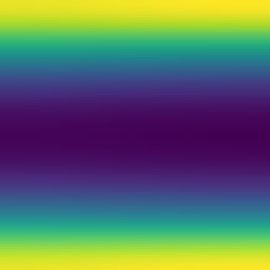
左: 実際の円環上に描いた u(t=0.2)/右: (r,φ) チャート
独立参照実装と 5.6e-16・Σr·u 保存 1.1e-15・最大値原理成立。
球座標の球殻(3D)
Δu = (1/r²)∂r(r²∂ru) + (1/r²sinθ)∂θ(sinθ∂θu) + (1/r²sin²θ)∂φφu
Formurae ソース全文(spherical3d.fe・29 行)
-- Heat equation in FULL 3D SPHERICAL COORDINATES, on a shell: -- (r_phys, theta_phys, phi) = (1 + r, 1 + theta, phi), -- r_phys in [1, 2], theta_phys in [1, 1 + L] (poles avoided). -- All three axes are nontrivial. From the embedding the CAS derives -- g = diag(1, (1+r)^2, (1+r)^2 sin^2(1+theta)) -- the spherical -- Laplacian -- checks orthogonality symbolically, and assembles the -- conservative flux form. Both r and theta walls are Neumann -- (mirror), phi is periodic. dimension 3 axes r, θ, φ param dt = 0.0002 extern exp extern cos extern sin def Δ u = lb u metric g embedding [ `(1 + r) * sin (1 + θ) * cos φ, `(1 + r) * sin (1 + θ) * sin φ, `(1 + r) * cos (1 + θ) ] field u : scalar init: u := exp (0 - 4 * (r - 1 / 2) ^ 2) * exp (0 - 4 * (θ - 1 / 2) ^ 2) * exp (cos φ - 1) step: u' = u + dt * Δ u
生成された Egison(中間形・fec 出力)(spherical3d.egi・196 行)
-- -- GENERATED by fec (the Formurae compiler) from spherical3d.fe -- edit the .fe, not this file -- declare symbol dt declare symbol x, y, z, hx, hy, hz def feDim : Integer := 3 def feAxes : [String] := ["r", "theta", "phi"] def feAxisIds : [Integer] := [1, 2, 3] def feCoords : Vector MathValue := [| x, y, z |] def feHsteps : Vector MathValue := [| hx, hy, hz |] def coords : Vector MathValue := feCoords def hsteps : Vector MathValue := feHsteps def axisName (a: Integer) : String := nth a ["i", "j", "k"] def symName (v: String) : String := match v as string with | #"hx" -> "dr" | #"hy" -> "dtheta" | #"hz" -> "dphi" | #"x" -> "(i*dr)" | #"y" -> "(j*dtheta)" | #"z" -> "(k*dphi)" | _ -> v def shift (a: Integer) (c: MathValue) (u: MathValue) : MathValue := substitute [(feCoords_a, feCoords_a + c * feHsteps_a)] u def dC (a: Integer) (u: MathValue) : MathValue := (shift a 1 u - shift a (-1) u) / (2 * feHsteps_a) def dC2 (a: Integer) (u: MathValue) : MathValue := (shift a 1 u - 2 * u + shift a (-1) u) / ((feHsteps_a) ^ 2) def dF (a: Integer) (u: MathValue) : MathValue := (shift a 1 u - u) / feHsteps_a def dB (a: Integer) (u: MathValue) : MathValue := (u - shift a (-1) u) / feHsteps_a def dTaylor (m: Integer) (ks: [MathValue]) (a: Integer) (u: MathValue) : MathValue := sum (map (\(c, k) -> c * shift a k u) (zip (taylorStencil m ks) ks)) / (feHsteps_a ^ m) def axisId (axis: MathValue) : Integer := match axis as mathValue with | symbol $v _ -> match v as string with | #"x" -> 1 | #"y" -> 2 | #"z" -> 3 | _ -> 0 def ∂ (m: Integer) (r: Integer) (axis: MathValue) (u: MathValue) : MathValue := let a := axisId axis in if m = 1 && r = 1 then dC a u else if m = 2 && r = 1 then dC2 a u else dTaylor m (between (0 - r) r) a u def feIndexPairs : [(Integer, Integer)] := [(1, 1), (1, 2), (1, 3), (2, 1), (2, 2), (2, 3), (3, 1), (3, 2), (3, 3)] def yeeRef (sT: [MathValue]) (fld: (MathValue, [MathValue])) (disp: [MathValue]) : MathValue := let (fF, sF) := fld in substitute (map (\a -> (feCoords_a, feCoords_a + (nth a disp + nth a sT - nth a sF) * feHsteps_a)) feAxisIds) fF def unit3 (a: Integer) (c: MathValue) : [MathValue] := map (\b -> if a = b then c else 0) feAxisIds def dYee (a: Integer) (sT: [MathValue]) (fld: (MathValue, [MathValue])) : MathValue := (yeeRef sT fld (unit3 a (1 / 2)) - yeeRef sT fld (unit3 a (-1 / 2))) / feHsteps_a def curlYee (i1: Integer) (sT: [MathValue]) (flds: [(MathValue, [MathValue])]) : MathValue := sum (map (\(j1, k1) -> (ε 3)_i1_j1_k1 * dYee j1 sT (nth k1 flds)) feIndexPairs) def offsetSuffix (o: MathValue) : String := match o as mathValue with | #0 -> "" | #1 -> "+1" | #2 -> "+2" | #3 -> "+3" | #(-1) -> "-1" | #(-2) -> "-2" | #(-3) -> "-3" | #(1 / 2) -> "+1/2" | #(-1 / 2) -> "-1/2" | #(3 / 2) -> "+3/2" | #(-3 / 2) -> "-3/2" | _ -> S.concat ["+(", show o, ")"] def gridIndex (a: Integer) (arg: MathValue) : String := S.append (axisName a) (offsetSuffix ((arg - coords_a) / hsteps_a)) def fmrFieldName (nm: String) : String := match nm as string with | _ -> nm def gridRef (g: MathValue) (args: [MathValue]) : String := S.concat [fmrFieldName (show g), "[", S.intercalate "," (map (\(a, arg) -> gridIndex a arg) (zip feAxisIds args)), "]"] def wrapNeg (s: String) : String := if S.head s = '-' then S.concat ["(", s, ")"] else s def applyName g := mathFunctionName g def showFactor (f: MathValue) : String := match f as mathValue with | func $g $args -> gridRef g args | apply1 $g $a1 -> S.concat [applyName g, "(", showFmr a1, ")"] | quote $e -> S.concat ["(", showFmr e, ")"] | symbol $v _ -> symName v | _ -> S.concat ["(", showFmr f, ")"] def showPow (f: MathValue) (n: Integer) : String := if n = 1 then showFactor f else S.concat [showFactor f, "**", show n] def coefPQ (c: MathValue) : (String, String) := match c as mathValue with | $p / $q -> (show p, show q) def showTerm (t: MathValue) : String := match t as mathValue with | term $c $xs -> let (cp, cq) := coefPQ c in let numFs := map (\(f, n) -> showPow f n) (filter (\(f, n) -> n > 0) xs) in let denFs := map (\(f, n) -> showPow f (0 - n)) (filter (\(f, n) -> n < 0) xs) in let numParts := if cp = "1" && not (numFs = []) then numFs else wrapNeg cp :: numFs in let denParts := (if cq = "1" then [] else [cq]) ++ denFs in let numStr := S.intercalate "*" numParts in if denParts = [] then numStr else S.concat [numStr, "/(", S.intercalate "*" denParts, ")"] def showPoly (p: MathValue) : String := match p as mathValue with | #0 -> "0" | poly $ts / _ -> S.intercalate " + " (map showTerm ts) def showFmr (e: MathValue) : String := match e as mathValue with | #0 -> "0" | $nu / #1 -> showPoly nu | $nu / $de -> S.concat ["(", showPoly nu, ")/(", showPoly de, ")"] def fmrEq (lhs: String) (rhs: MathValue) : String := S.concat [" ", lhs, " = ", showFmr rhs] def feGridPoint : String := S.intercalate "," (map axisName feAxisIds) def fmrInit (lhs: String) (rhs: MathValue) : String := S.concat [" ", lhs, "[", feGridPoint, "] = ", showFmr rhs] def componentEqs (names: [String]) (values: [MathValue]) : [String] := map (\(name, value) -> fmrEq (S.append name "'") value) (zip names values) def scalarEq (nm: String) (c: MathValue) : [String] := [fmrEq (S.append nm "'") c] def tupleOf (xs: [String]) : String := if length xs = 1 then head xs else S.concat ["(", S.intercalate "," xs, ")"] def emitModelOn (dim: Integer) (axes: [String]) (params: [(String, String)]) (helpers: [String]) (comps: [String]) (initLines: [String]) (stepLines: [String]) : String := let compsP := map (\c -> S.append c "'") comps in S.intercalate "\n" ([ S.append "dimension :: " (show dim) , S.append "axes :: " (S.intercalate "," axes) , "" ] ++ map (\(n, v) -> S.concat ["double :: ", n, " = ", v]) params ++ [""] ++ helpers ++ [""] ++ [ S.concat ["begin function ", tupleOf comps, " = init()"] , S.concat [" double [] :: ", S.intercalate ", " comps] ] ++ initLines ++ [ "end function" , "" , S.concat ["begin function ", tupleOf compsP, " = step", "(", S.intercalate "," comps, ")"] ] ++ stepLines ++ [ "end function" ]) def u := function (x, y, z) def feX : [MathValue] := [`(1 + x) * sin (1 + y) * cos z, `(1 + x) * sin (1 + y) * sin z, `(1 + x) * cos (1 + y)] def feGd (a: Integer) : MathValue := sum (map (\e -> (∂/∂ e feCoords_a) ^ 2) feX) def feGo (a: Integer) (b: Integer) : MathValue := sum (map (\e -> ∂/∂ e feCoords_a * ∂/∂ e feCoords_b) feX) def feH1 := unquoteAll (expandAll (sqrt (feGd 1))) def feH2 := unquoteAll (expandAll (sqrt (feGd 2))) def feH3 := unquoteAll (expandAll (sqrt (feGd 3))) def ca := function (x, y, z) def cb := function (x, y, z) def cc := function (x, y, z) def sg := function (x, y, z) def f1 := function (x, y, z) def f2 := function (x, y, z) def f3 := function (x, y, z) def FormuraeInternalMetricCov_i_j := generateTensor (\[i, j] -> if i = j then feGd i else feGo i j) [feDim, feDim] def FormuraeInternalMetricContra_i_j := generateTensor (\[i, j] -> if i = j then 1 / (feGd i) else 0) [feDim, feDim] def FormuraeInternalMetricMixedUpDown_i_j := generateTensor (\[i, j] -> if i = j then 1 else 0) [feDim, feDim] def FormuraeInternalMetricMixedDownUp_i_j := generateTensor (\[i, j] -> if i = j then 1 else 0) [feDim, feDim] def feParams := [("dt", "0.0002")] def feHelpers := [ "extern function :: exp" , "extern function :: cos" , "extern function :: sin" , "extern function :: sqrt" ] def feComps : [String] := ["u", "ca", "cb", "cc", "sg"] def feInits := [ fmrInit "u" (exp (0 - (4 * ((x - (1 / 2)) ^ 2))) * exp (0 - (4 * ((y - (1 / 2)) ^ 2))) * exp (cos z - 1)) , fmrInit "ca" (substitute [(feCoords_1, feCoords_1 + feHsteps_1 / 2)] ((feH1) * (feH2) * (feH3) / ((feH1) ^ 2))) , fmrInit "cb" (substitute [(feCoords_2, feCoords_2 + feHsteps_2 / 2)] ((feH1) * (feH2) * (feH3) / ((feH2) ^ 2))) , fmrInit "cc" (substitute [(feCoords_3, feCoords_3 + feHsteps_3 / 2)] ((feH1) * (feH2) * (feH3) / ((feH3) ^ 2))) , fmrInit "sg" ((feH1) * (feH2) * (feH3)) ] def feSteps := [fmrEq "f1" (ca * dYee 1 [1 / 2, 0, 0] (u, [0, 0, 0]))] ++ [fmrEq "f2" (cb * dYee 2 [0, 1 / 2, 0] (u, [0, 0, 0]))] ++ [fmrEq "f3" (cc * dYee 3 [0, 0, 1 / 2] (u, [0, 0, 0]))] ++ scalarEq "u" (u + (dt * ((dYee 1 [0, 0, 0] (f1, [1 / 2, 0, 0]) + dYee 2 [0, 0, 0] (f2, [0, 1 / 2, 0]) + dYee 3 [0, 0, 0] (f3, [0, 0, 1 / 2])) / sg))) ++ scalarEq "ca" (ca) ++ scalarEq "cb" (cb) ++ scalarEq "cc" (cc) ++ scalarEq "sg" (sg) def main (args: [String]) : IO () := if feGo 1 2 = 0 && feGo 1 3 = 0 && feGo 2 3 = 0 then (print (emitModelOn 3 ["r", "theta", "phi"] feParams feHelpers feComps feInits feSteps)) else print "# ERROR: the embedding is not orthogonal (off-diagonal metric terms must vanish symbolically); general metrics are not supported yet"
生成された Formura 全文(spherical3d.fmr・29 行)
dimension :: 3 axes :: r,theta,phi double :: dt = 0.0002 extern function :: exp extern function :: cos extern function :: sin extern function :: sqrt begin function (u,ca,cb,cc,sg) = init() double [] :: u, ca, cb, cc, sg u[i,j,k] = exp((-4)*(j*dtheta)**2 + (-4)*(i*dr)**2 + 4*(j*dtheta) + 4*(i*dr) + cos((k*dphi)) + (-3)) ca[i,j,k] = sin((j*dtheta) + 1)*(i*dr)**2 + sin((j*dtheta) + 1)*dr**2/(4) + sin((j*dtheta) + 1)*dr*(i*dr) + 2*sin((j*dtheta) + 1)*(i*dr) + sin((j*dtheta) + 1)*dr + sin((j*dtheta) + 1) cb[i,j,k] = sin((j*dtheta) + dtheta/(2) + 1) cc[i,j,k] = 1/(sin((j*dtheta) + 1)) sg[i,j,k] = sin((j*dtheta) + 1)*(i*dr)**2 + 2*sin((j*dtheta) + 1)*(i*dr) + sin((j*dtheta) + 1) end function begin function (u',ca',cb',cc',sg') = step(u,ca,cb,cc,sg) f1 = (-1)*ca[i,j,k]*u[i,j,k]/(dr) + ca[i,j,k]*u[i+1,j,k]/(dr) f2 = (-1)*cb[i,j,k]*u[i,j,k]/(dtheta) + cb[i,j,k]*u[i,j+1,k]/(dtheta) f3 = (-1)*cc[i,j,k]*u[i,j,k]/(dphi) + cc[i,j,k]*u[i,j,k+1]/(dphi) u' = u[i,j,k] + dt*f3[i,j,k]/(dphi*sg[i,j,k]) + (-1)*dt*f3[i,j,k-1]/(dphi*sg[i,j,k]) + dt*f2[i,j,k]/(dtheta*sg[i,j,k]) + (-1)*dt*f2[i,j-1,k]/(dtheta*sg[i,j,k]) + dt*f1[i,j,k]/(dr*sg[i,j,k]) + (-1)*dt*f1[i-1,j,k]/(dr*sg[i,j,k]) ca' = ca[i,j,k] cb' = cb[i,j,k] cc' = cc[i,j,k] sg' = sg[i,j,k] end function
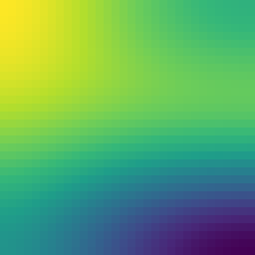
左: 外殻面 r=2 上の u(t=0.2)/右: (r,θ) 断面
独立 3D 参照実装と 4.4e-16・Σr²sinθ·u 保存 4.2e-15・最大値原理成立。
計量つき拡散(トーラス上の Laplace–Beltrami)
∂tu = (1/√g) ∂i(√g gij ∂ju)
トーラス R=2, r=1: √g = 2+cos θ, gθθ=1, gφφ=1/(2+cos θ)²
トーラス R=2, r=1: √g = 2+cos θ, gθθ=1, gφφ=1/(2+cos θ)²
Formurae ソース全文(metric_torus.fe・33 行)
-- Heat equation on a curved surface (a torus), from the COORDINATES: -- the embedding of the (theta, phi, z) chart into R^4 below is the -- only geometric input. The compiler differentiates it (CAS), forms -- the metric g_ab = dX/dx_a . dX/dx_b, checks orthogonality -- symbolically (generation is gated on g_12 = g_13 = g_23 = 0), -- takes the scale factors h_a = sqrt(g_aa), evaluates the hodge -- factors sqrt(g)/h_a^2 at the half-cell placements, freezes them -- into coefficient fields, and exposes lb u as an -- exactly conservative flux form. -- -- Backquotes keep `(2 + cos θ) atomic during the CAS work -- (sin^2 + cos^2 collapses to 1, sqrt of the quoted square reduces), -- and are expanded away before the half-cell substitution. dimension 3 axes θ, φ, z param dt = 0.0005 extern exp extern cos def Δ u = lb u metric g embedding [ `(2 + cos θ) * cos φ, `(2 + cos θ) * sin φ, sin θ, z ] field u : scalar init: u := exp (cos θ + cos φ - 2) step: u' = u + dt * Δ u
生成された Egison(中間形・fec 出力)(metric_torus.egi・195 行)
-- -- GENERATED by fec (the Formurae compiler) from metric_torus.fe -- edit the .fe, not this file -- declare symbol dt declare symbol x, y, z, hx, hy, hz def feDim : Integer := 3 def feAxes : [String] := ["theta", "phi", "z"] def feAxisIds : [Integer] := [1, 2, 3] def feCoords : Vector MathValue := [| x, y, z |] def feHsteps : Vector MathValue := [| hx, hy, hz |] def coords : Vector MathValue := feCoords def hsteps : Vector MathValue := feHsteps def axisName (a: Integer) : String := nth a ["i", "j", "k"] def symName (v: String) : String := match v as string with | #"hx" -> "dtheta" | #"hy" -> "dphi" | #"hz" -> "dz" | #"x" -> "(i*dtheta)" | #"y" -> "(j*dphi)" | #"z" -> "(k*dz)" | _ -> v def shift (a: Integer) (c: MathValue) (u: MathValue) : MathValue := substitute [(feCoords_a, feCoords_a + c * feHsteps_a)] u def dC (a: Integer) (u: MathValue) : MathValue := (shift a 1 u - shift a (-1) u) / (2 * feHsteps_a) def dC2 (a: Integer) (u: MathValue) : MathValue := (shift a 1 u - 2 * u + shift a (-1) u) / ((feHsteps_a) ^ 2) def dF (a: Integer) (u: MathValue) : MathValue := (shift a 1 u - u) / feHsteps_a def dB (a: Integer) (u: MathValue) : MathValue := (u - shift a (-1) u) / feHsteps_a def dTaylor (m: Integer) (ks: [MathValue]) (a: Integer) (u: MathValue) : MathValue := sum (map (\(c, k) -> c * shift a k u) (zip (taylorStencil m ks) ks)) / (feHsteps_a ^ m) def axisId (axis: MathValue) : Integer := match axis as mathValue with | symbol $v _ -> match v as string with | #"x" -> 1 | #"y" -> 2 | #"z" -> 3 | _ -> 0 def ∂ (m: Integer) (r: Integer) (axis: MathValue) (u: MathValue) : MathValue := let a := axisId axis in if m = 1 && r = 1 then dC a u else if m = 2 && r = 1 then dC2 a u else dTaylor m (between (0 - r) r) a u def feIndexPairs : [(Integer, Integer)] := [(1, 1), (1, 2), (1, 3), (2, 1), (2, 2), (2, 3), (3, 1), (3, 2), (3, 3)] def yeeRef (sT: [MathValue]) (fld: (MathValue, [MathValue])) (disp: [MathValue]) : MathValue := let (fF, sF) := fld in substitute (map (\a -> (feCoords_a, feCoords_a + (nth a disp + nth a sT - nth a sF) * feHsteps_a)) feAxisIds) fF def unit3 (a: Integer) (c: MathValue) : [MathValue] := map (\b -> if a = b then c else 0) feAxisIds def dYee (a: Integer) (sT: [MathValue]) (fld: (MathValue, [MathValue])) : MathValue := (yeeRef sT fld (unit3 a (1 / 2)) - yeeRef sT fld (unit3 a (-1 / 2))) / feHsteps_a def curlYee (i1: Integer) (sT: [MathValue]) (flds: [(MathValue, [MathValue])]) : MathValue := sum (map (\(j1, k1) -> (ε 3)_i1_j1_k1 * dYee j1 sT (nth k1 flds)) feIndexPairs) def offsetSuffix (o: MathValue) : String := match o as mathValue with | #0 -> "" | #1 -> "+1" | #2 -> "+2" | #3 -> "+3" | #(-1) -> "-1" | #(-2) -> "-2" | #(-3) -> "-3" | #(1 / 2) -> "+1/2" | #(-1 / 2) -> "-1/2" | #(3 / 2) -> "+3/2" | #(-3 / 2) -> "-3/2" | _ -> S.concat ["+(", show o, ")"] def gridIndex (a: Integer) (arg: MathValue) : String := S.append (axisName a) (offsetSuffix ((arg - coords_a) / hsteps_a)) def fmrFieldName (nm: String) : String := match nm as string with | _ -> nm def gridRef (g: MathValue) (args: [MathValue]) : String := S.concat [fmrFieldName (show g), "[", S.intercalate "," (map (\(a, arg) -> gridIndex a arg) (zip feAxisIds args)), "]"] def wrapNeg (s: String) : String := if S.head s = '-' then S.concat ["(", s, ")"] else s def applyName g := mathFunctionName g def showFactor (f: MathValue) : String := match f as mathValue with | func $g $args -> gridRef g args | apply1 $g $a1 -> S.concat [applyName g, "(", showFmr a1, ")"] | quote $e -> S.concat ["(", showFmr e, ")"] | symbol $v _ -> symName v | _ -> S.concat ["(", showFmr f, ")"] def showPow (f: MathValue) (n: Integer) : String := if n = 1 then showFactor f else S.concat [showFactor f, "**", show n] def coefPQ (c: MathValue) : (String, String) := match c as mathValue with | $p / $q -> (show p, show q) def showTerm (t: MathValue) : String := match t as mathValue with | term $c $xs -> let (cp, cq) := coefPQ c in let numFs := map (\(f, n) -> showPow f n) (filter (\(f, n) -> n > 0) xs) in let denFs := map (\(f, n) -> showPow f (0 - n)) (filter (\(f, n) -> n < 0) xs) in let numParts := if cp = "1" && not (numFs = []) then numFs else wrapNeg cp :: numFs in let denParts := (if cq = "1" then [] else [cq]) ++ denFs in let numStr := S.intercalate "*" numParts in if denParts = [] then numStr else S.concat [numStr, "/(", S.intercalate "*" denParts, ")"] def showPoly (p: MathValue) : String := match p as mathValue with | #0 -> "0" | poly $ts / _ -> S.intercalate " + " (map showTerm ts) def showFmr (e: MathValue) : String := match e as mathValue with | #0 -> "0" | $nu / #1 -> showPoly nu | $nu / $de -> S.concat ["(", showPoly nu, ")/(", showPoly de, ")"] def fmrEq (lhs: String) (rhs: MathValue) : String := S.concat [" ", lhs, " = ", showFmr rhs] def feGridPoint : String := S.intercalate "," (map axisName feAxisIds) def fmrInit (lhs: String) (rhs: MathValue) : String := S.concat [" ", lhs, "[", feGridPoint, "] = ", showFmr rhs] def componentEqs (names: [String]) (values: [MathValue]) : [String] := map (\(name, value) -> fmrEq (S.append name "'") value) (zip names values) def scalarEq (nm: String) (c: MathValue) : [String] := [fmrEq (S.append nm "'") c] def tupleOf (xs: [String]) : String := if length xs = 1 then head xs else S.concat ["(", S.intercalate "," xs, ")"] def emitModelOn (dim: Integer) (axes: [String]) (params: [(String, String)]) (helpers: [String]) (comps: [String]) (initLines: [String]) (stepLines: [String]) : String := let compsP := map (\c -> S.append c "'") comps in S.intercalate "\n" ([ S.append "dimension :: " (show dim) , S.append "axes :: " (S.intercalate "," axes) , "" ] ++ map (\(n, v) -> S.concat ["double :: ", n, " = ", v]) params ++ [""] ++ helpers ++ [""] ++ [ S.concat ["begin function ", tupleOf comps, " = init()"] , S.concat [" double [] :: ", S.intercalate ", " comps] ] ++ initLines ++ [ "end function" , "" , S.concat ["begin function ", tupleOf compsP, " = step", "(", S.intercalate "," comps, ")"] ] ++ stepLines ++ [ "end function" ]) def u := function (x, y, z) def feX : [MathValue] := [`(2 + cos x) * cos y, `(2 + cos x) * sin y, sin x, z] def feGd (a: Integer) : MathValue := sum (map (\e -> (∂/∂ e feCoords_a) ^ 2) feX) def feGo (a: Integer) (b: Integer) : MathValue := sum (map (\e -> ∂/∂ e feCoords_a * ∂/∂ e feCoords_b) feX) def feH1 := unquoteAll (expandAll (sqrt (feGd 1))) def feH2 := unquoteAll (expandAll (sqrt (feGd 2))) def feH3 := unquoteAll (expandAll (sqrt (feGd 3))) def ca := function (x, y, z) def cb := function (x, y, z) def cc := function (x, y, z) def sg := function (x, y, z) def f1 := function (x, y, z) def f2 := function (x, y, z) def f3 := function (x, y, z) def FormuraeInternalMetricCov_i_j := generateTensor (\[i, j] -> if i = j then feGd i else feGo i j) [feDim, feDim] def FormuraeInternalMetricContra_i_j := generateTensor (\[i, j] -> if i = j then 1 / (feGd i) else 0) [feDim, feDim] def FormuraeInternalMetricMixedUpDown_i_j := generateTensor (\[i, j] -> if i = j then 1 else 0) [feDim, feDim] def FormuraeInternalMetricMixedDownUp_i_j := generateTensor (\[i, j] -> if i = j then 1 else 0) [feDim, feDim] def feParams := [("dt", "0.0005")] def feHelpers := [ "extern function :: exp" , "extern function :: cos" , "extern function :: sqrt" ] def feComps : [String] := ["u", "ca", "cb", "cc", "sg"] def feInits := [ fmrInit "u" (exp ((cos x + cos y) - 2)) , fmrInit "ca" (substitute [(feCoords_1, feCoords_1 + feHsteps_1 / 2)] ((feH1) * (feH2) * (feH3) / ((feH1) ^ 2))) , fmrInit "cb" (substitute [(feCoords_2, feCoords_2 + feHsteps_2 / 2)] ((feH1) * (feH2) * (feH3) / ((feH2) ^ 2))) , fmrInit "cc" (substitute [(feCoords_3, feCoords_3 + feHsteps_3 / 2)] ((feH1) * (feH2) * (feH3) / ((feH3) ^ 2))) , fmrInit "sg" ((feH1) * (feH2) * (feH3)) ] def feSteps := [fmrEq "f1" (ca * dYee 1 [1 / 2, 0, 0] (u, [0, 0, 0]))] ++ [fmrEq "f2" (cb * dYee 2 [0, 1 / 2, 0] (u, [0, 0, 0]))] ++ [fmrEq "f3" (cc * dYee 3 [0, 0, 1 / 2] (u, [0, 0, 0]))] ++ scalarEq "u" (u + (dt * ((dYee 1 [0, 0, 0] (f1, [1 / 2, 0, 0]) + dYee 2 [0, 0, 0] (f2, [0, 1 / 2, 0]) + dYee 3 [0, 0, 0] (f3, [0, 0, 1 / 2])) / sg))) ++ scalarEq "ca" (ca) ++ scalarEq "cb" (cb) ++ scalarEq "cc" (cc) ++ scalarEq "sg" (sg) def main (args: [String]) : IO () := if feGo 1 2 = 0 && feGo 1 3 = 0 && feGo 2 3 = 0 then (print (emitModelOn 3 ["theta", "phi", "z"] feParams feHelpers feComps feInits feSteps)) else print "# ERROR: the embedding is not orthogonal (off-diagonal metric terms must vanish symbolically); general metrics are not supported yet"
生成された Formura 全文(metric_torus.fmr・28 行)
dimension :: 3 axes :: theta,phi,z double :: dt = 0.0005 extern function :: exp extern function :: cos extern function :: sqrt begin function (u,ca,cb,cc,sg) = init() double [] :: u, ca, cb, cc, sg u[i,j,k] = exp(cos((j*dphi)) + cos((i*dtheta)) + (-2)) ca[i,j,k] = cos((i*dtheta) + dtheta/(2)) + 2 cb[i,j,k] = (1)/(cos((i*dtheta)) + 2) cc[i,j,k] = cos((i*dtheta)) + 2 sg[i,j,k] = cos((i*dtheta)) + 2 end function begin function (u',ca',cb',cc',sg') = step(u,ca,cb,cc,sg) f1 = (-1)*ca[i,j,k]*u[i,j,k]/(dtheta) + ca[i,j,k]*u[i+1,j,k]/(dtheta) f2 = (-1)*cb[i,j,k]*u[i,j,k]/(dphi) + cb[i,j,k]*u[i,j+1,k]/(dphi) f3 = (-1)*cc[i,j,k]*u[i,j,k]/(dz) + cc[i,j,k]*u[i,j,k+1]/(dz) u' = u[i,j,k] + dt*f3[i,j,k]/(dz*sg[i,j,k]) + (-1)*dt*f3[i,j,k-1]/(dz*sg[i,j,k]) + dt*f2[i,j,k]/(dphi*sg[i,j,k]) + (-1)*dt*f2[i,j-1,k]/(dphi*sg[i,j,k]) + dt*f1[i,j,k]/(dtheta*sg[i,j,k]) + (-1)*dt*f1[i-1,j,k]/(dtheta*sg[i,j,k]) ca' = ca[i,j,k] cb' = cb[i,j,k] cc' = cc[i,j,k] sg' = sg[i,j,k] end function
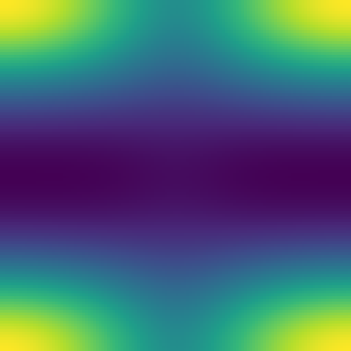
左: トーラス上に描いた u(t=3000、陰影つき 3D)/右: (θ,φ) チャート
独立 C 参照と 3.3e-16(全桁一致)・計量重みつき熱量 Σ√g·u 保存 2.5e-15・
最大値原理成立。スケール因子導出版の .fmr は手展開版とバイト一致。
球面の帯(正曲率)
∂tu = ΔS²u, 余緯度 θ ∈ [1, 1+L] の帯
埋め込みから g=diag(1, sin²θ) を CAS が導出、θ 壁は mirror(Neumann)
埋め込みから g=diag(1, sin²θ) を CAS が導出、θ 壁は mirror(Neumann)
Formurae ソース全文(metric_sphere.fe・29 行)
-- Heat equation on a BAND OF THE UNIT SPHERE (positive curvature), -- colatitude theta_phys = 1 + theta in [1, 1 + L] (poles avoided). -- The embedding below is the only geometric input: the compiler -- derives g = diag(1, sin^2(1+theta)) via the CAS (sin^2+cos^2 -- collapses, sqrt of the square closes), checks orthogonality, and -- assembles the conservative Laplace-Beltrami flux form. The theta -- walls are Neumann (yaml boundary: mirror), so the metric-weighted -- heat sum(sin(1+theta) u) is exactly conserved. dimension 3 axes θ, φ, z param dt = 0.0001 extern exp extern cos extern sin def Δ u = lb u metric g embedding [ sin (1 + θ) * cos φ, sin (1 + θ) * sin φ, cos (1 + θ), z ] field u : scalar init: u := exp (0 - 4 * (θ - 1 / 2) ^ 2) * exp (cos φ - 1) step: u' = u + dt * Δ u
生成された Egison(中間形・fec 出力)(metric_sphere.egi・196 行)
-- -- GENERATED by fec (the Formurae compiler) from metric_sphere.fe -- edit the .fe, not this file -- declare symbol dt declare symbol x, y, z, hx, hy, hz def feDim : Integer := 3 def feAxes : [String] := ["theta", "phi", "z"] def feAxisIds : [Integer] := [1, 2, 3] def feCoords : Vector MathValue := [| x, y, z |] def feHsteps : Vector MathValue := [| hx, hy, hz |] def coords : Vector MathValue := feCoords def hsteps : Vector MathValue := feHsteps def axisName (a: Integer) : String := nth a ["i", "j", "k"] def symName (v: String) : String := match v as string with | #"hx" -> "dtheta" | #"hy" -> "dphi" | #"hz" -> "dz" | #"x" -> "(i*dtheta)" | #"y" -> "(j*dphi)" | #"z" -> "(k*dz)" | _ -> v def shift (a: Integer) (c: MathValue) (u: MathValue) : MathValue := substitute [(feCoords_a, feCoords_a + c * feHsteps_a)] u def dC (a: Integer) (u: MathValue) : MathValue := (shift a 1 u - shift a (-1) u) / (2 * feHsteps_a) def dC2 (a: Integer) (u: MathValue) : MathValue := (shift a 1 u - 2 * u + shift a (-1) u) / ((feHsteps_a) ^ 2) def dF (a: Integer) (u: MathValue) : MathValue := (shift a 1 u - u) / feHsteps_a def dB (a: Integer) (u: MathValue) : MathValue := (u - shift a (-1) u) / feHsteps_a def dTaylor (m: Integer) (ks: [MathValue]) (a: Integer) (u: MathValue) : MathValue := sum (map (\(c, k) -> c * shift a k u) (zip (taylorStencil m ks) ks)) / (feHsteps_a ^ m) def axisId (axis: MathValue) : Integer := match axis as mathValue with | symbol $v _ -> match v as string with | #"x" -> 1 | #"y" -> 2 | #"z" -> 3 | _ -> 0 def ∂ (m: Integer) (r: Integer) (axis: MathValue) (u: MathValue) : MathValue := let a := axisId axis in if m = 1 && r = 1 then dC a u else if m = 2 && r = 1 then dC2 a u else dTaylor m (between (0 - r) r) a u def feIndexPairs : [(Integer, Integer)] := [(1, 1), (1, 2), (1, 3), (2, 1), (2, 2), (2, 3), (3, 1), (3, 2), (3, 3)] def yeeRef (sT: [MathValue]) (fld: (MathValue, [MathValue])) (disp: [MathValue]) : MathValue := let (fF, sF) := fld in substitute (map (\a -> (feCoords_a, feCoords_a + (nth a disp + nth a sT - nth a sF) * feHsteps_a)) feAxisIds) fF def unit3 (a: Integer) (c: MathValue) : [MathValue] := map (\b -> if a = b then c else 0) feAxisIds def dYee (a: Integer) (sT: [MathValue]) (fld: (MathValue, [MathValue])) : MathValue := (yeeRef sT fld (unit3 a (1 / 2)) - yeeRef sT fld (unit3 a (-1 / 2))) / feHsteps_a def curlYee (i1: Integer) (sT: [MathValue]) (flds: [(MathValue, [MathValue])]) : MathValue := sum (map (\(j1, k1) -> (ε 3)_i1_j1_k1 * dYee j1 sT (nth k1 flds)) feIndexPairs) def offsetSuffix (o: MathValue) : String := match o as mathValue with | #0 -> "" | #1 -> "+1" | #2 -> "+2" | #3 -> "+3" | #(-1) -> "-1" | #(-2) -> "-2" | #(-3) -> "-3" | #(1 / 2) -> "+1/2" | #(-1 / 2) -> "-1/2" | #(3 / 2) -> "+3/2" | #(-3 / 2) -> "-3/2" | _ -> S.concat ["+(", show o, ")"] def gridIndex (a: Integer) (arg: MathValue) : String := S.append (axisName a) (offsetSuffix ((arg - coords_a) / hsteps_a)) def fmrFieldName (nm: String) : String := match nm as string with | _ -> nm def gridRef (g: MathValue) (args: [MathValue]) : String := S.concat [fmrFieldName (show g), "[", S.intercalate "," (map (\(a, arg) -> gridIndex a arg) (zip feAxisIds args)), "]"] def wrapNeg (s: String) : String := if S.head s = '-' then S.concat ["(", s, ")"] else s def applyName g := mathFunctionName g def showFactor (f: MathValue) : String := match f as mathValue with | func $g $args -> gridRef g args | apply1 $g $a1 -> S.concat [applyName g, "(", showFmr a1, ")"] | quote $e -> S.concat ["(", showFmr e, ")"] | symbol $v _ -> symName v | _ -> S.concat ["(", showFmr f, ")"] def showPow (f: MathValue) (n: Integer) : String := if n = 1 then showFactor f else S.concat [showFactor f, "**", show n] def coefPQ (c: MathValue) : (String, String) := match c as mathValue with | $p / $q -> (show p, show q) def showTerm (t: MathValue) : String := match t as mathValue with | term $c $xs -> let (cp, cq) := coefPQ c in let numFs := map (\(f, n) -> showPow f n) (filter (\(f, n) -> n > 0) xs) in let denFs := map (\(f, n) -> showPow f (0 - n)) (filter (\(f, n) -> n < 0) xs) in let numParts := if cp = "1" && not (numFs = []) then numFs else wrapNeg cp :: numFs in let denParts := (if cq = "1" then [] else [cq]) ++ denFs in let numStr := S.intercalate "*" numParts in if denParts = [] then numStr else S.concat [numStr, "/(", S.intercalate "*" denParts, ")"] def showPoly (p: MathValue) : String := match p as mathValue with | #0 -> "0" | poly $ts / _ -> S.intercalate " + " (map showTerm ts) def showFmr (e: MathValue) : String := match e as mathValue with | #0 -> "0" | $nu / #1 -> showPoly nu | $nu / $de -> S.concat ["(", showPoly nu, ")/(", showPoly de, ")"] def fmrEq (lhs: String) (rhs: MathValue) : String := S.concat [" ", lhs, " = ", showFmr rhs] def feGridPoint : String := S.intercalate "," (map axisName feAxisIds) def fmrInit (lhs: String) (rhs: MathValue) : String := S.concat [" ", lhs, "[", feGridPoint, "] = ", showFmr rhs] def componentEqs (names: [String]) (values: [MathValue]) : [String] := map (\(name, value) -> fmrEq (S.append name "'") value) (zip names values) def scalarEq (nm: String) (c: MathValue) : [String] := [fmrEq (S.append nm "'") c] def tupleOf (xs: [String]) : String := if length xs = 1 then head xs else S.concat ["(", S.intercalate "," xs, ")"] def emitModelOn (dim: Integer) (axes: [String]) (params: [(String, String)]) (helpers: [String]) (comps: [String]) (initLines: [String]) (stepLines: [String]) : String := let compsP := map (\c -> S.append c "'") comps in S.intercalate "\n" ([ S.append "dimension :: " (show dim) , S.append "axes :: " (S.intercalate "," axes) , "" ] ++ map (\(n, v) -> S.concat ["double :: ", n, " = ", v]) params ++ [""] ++ helpers ++ [""] ++ [ S.concat ["begin function ", tupleOf comps, " = init()"] , S.concat [" double [] :: ", S.intercalate ", " comps] ] ++ initLines ++ [ "end function" , "" , S.concat ["begin function ", tupleOf compsP, " = step", "(", S.intercalate "," comps, ")"] ] ++ stepLines ++ [ "end function" ]) def u := function (x, y, z) def feX : [MathValue] := [sin (1 + x) * cos y, sin (1 + x) * sin y, cos (1 + x), z] def feGd (a: Integer) : MathValue := sum (map (\e -> (∂/∂ e feCoords_a) ^ 2) feX) def feGo (a: Integer) (b: Integer) : MathValue := sum (map (\e -> ∂/∂ e feCoords_a * ∂/∂ e feCoords_b) feX) def feH1 := unquoteAll (expandAll (sqrt (feGd 1))) def feH2 := unquoteAll (expandAll (sqrt (feGd 2))) def feH3 := unquoteAll (expandAll (sqrt (feGd 3))) def ca := function (x, y, z) def cb := function (x, y, z) def cc := function (x, y, z) def sg := function (x, y, z) def f1 := function (x, y, z) def f2 := function (x, y, z) def f3 := function (x, y, z) def FormuraeInternalMetricCov_i_j := generateTensor (\[i, j] -> if i = j then feGd i else feGo i j) [feDim, feDim] def FormuraeInternalMetricContra_i_j := generateTensor (\[i, j] -> if i = j then 1 / (feGd i) else 0) [feDim, feDim] def FormuraeInternalMetricMixedUpDown_i_j := generateTensor (\[i, j] -> if i = j then 1 else 0) [feDim, feDim] def FormuraeInternalMetricMixedDownUp_i_j := generateTensor (\[i, j] -> if i = j then 1 else 0) [feDim, feDim] def feParams := [("dt", "0.0001")] def feHelpers := [ "extern function :: exp" , "extern function :: cos" , "extern function :: sin" , "extern function :: sqrt" ] def feComps : [String] := ["u", "ca", "cb", "cc", "sg"] def feInits := [ fmrInit "u" (exp (0 - (4 * ((x - (1 / 2)) ^ 2))) * exp (cos y - 1)) , fmrInit "ca" (substitute [(feCoords_1, feCoords_1 + feHsteps_1 / 2)] ((feH1) * (feH2) * (feH3) / ((feH1) ^ 2))) , fmrInit "cb" (substitute [(feCoords_2, feCoords_2 + feHsteps_2 / 2)] ((feH1) * (feH2) * (feH3) / ((feH2) ^ 2))) , fmrInit "cc" (substitute [(feCoords_3, feCoords_3 + feHsteps_3 / 2)] ((feH1) * (feH2) * (feH3) / ((feH3) ^ 2))) , fmrInit "sg" ((feH1) * (feH2) * (feH3)) ] def feSteps := [fmrEq "f1" (ca * dYee 1 [1 / 2, 0, 0] (u, [0, 0, 0]))] ++ [fmrEq "f2" (cb * dYee 2 [0, 1 / 2, 0] (u, [0, 0, 0]))] ++ [fmrEq "f3" (cc * dYee 3 [0, 0, 1 / 2] (u, [0, 0, 0]))] ++ scalarEq "u" (u + (dt * ((dYee 1 [0, 0, 0] (f1, [1 / 2, 0, 0]) + dYee 2 [0, 0, 0] (f2, [0, 1 / 2, 0]) + dYee 3 [0, 0, 0] (f3, [0, 0, 1 / 2])) / sg))) ++ scalarEq "ca" (ca) ++ scalarEq "cb" (cb) ++ scalarEq "cc" (cc) ++ scalarEq "sg" (sg) def main (args: [String]) : IO () := if feGo 1 2 = 0 && feGo 1 3 = 0 && feGo 2 3 = 0 then (print (emitModelOn 3 ["theta", "phi", "z"] feParams feHelpers feComps feInits feSteps)) else print "# ERROR: the embedding is not orthogonal (off-diagonal metric terms must vanish symbolically); general metrics are not supported yet"
生成された Formura 全文(metric_sphere.fmr・29 行)
dimension :: 3 axes :: theta,phi,z double :: dt = 0.0001 extern function :: exp extern function :: cos extern function :: sin extern function :: sqrt begin function (u,ca,cb,cc,sg) = init() double [] :: u, ca, cb, cc, sg u[i,j,k] = exp((-4)*(i*dtheta)**2 + 4*(i*dtheta) + cos((j*dphi)) + (-2)) ca[i,j,k] = sin((i*dtheta) + dtheta/(2) + 1) cb[i,j,k] = 1/(sin((i*dtheta) + 1)) cc[i,j,k] = sin((i*dtheta) + 1) sg[i,j,k] = sin((i*dtheta) + 1) end function begin function (u',ca',cb',cc',sg') = step(u,ca,cb,cc,sg) f1 = (-1)*ca[i,j,k]*u[i,j,k]/(dtheta) + ca[i,j,k]*u[i+1,j,k]/(dtheta) f2 = (-1)*cb[i,j,k]*u[i,j,k]/(dphi) + cb[i,j,k]*u[i,j+1,k]/(dphi) f3 = (-1)*cc[i,j,k]*u[i,j,k]/(dz) + cc[i,j,k]*u[i,j,k+1]/(dz) u' = u[i,j,k] + dt*f3[i,j,k]/(dz*sg[i,j,k]) + (-1)*dt*f3[i,j,k-1]/(dz*sg[i,j,k]) + dt*f2[i,j,k]/(dphi*sg[i,j,k]) + (-1)*dt*f2[i,j-1,k]/(dphi*sg[i,j,k]) + dt*f1[i,j,k]/(dtheta*sg[i,j,k]) + (-1)*dt*f1[i-1,j,k]/(dtheta*sg[i,j,k]) ca' = ca[i,j,k] cb' = cb[i,j,k] cc' = cc[i,j,k] sg' = sg[i,j,k] end function
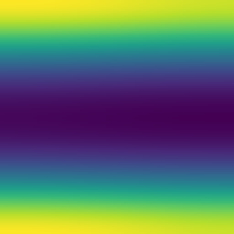
左: 球面の帯の上に描いた u(t=0.2)/右: (θ,φ) チャート
独立参照実装と 5.6e-16・Σ√g·u 保存 3.6e-15・最大値原理成立。
双曲平面 — Poincaré 半平面(負曲率)
ds² = (dx² + dy²)/y², ΔH²u = y²(uxx + uyy)
Formurae ソース全文(hyperbolic.fe・28 行)
-- Heat equation on the POINCARE HALF-PLANE (constant NEGATIVE -- curvature -1): ds^2 = (dx^2 + dy^2) / y_phys^2 with -- y_phys = 1 + y in [1, 2]. A genuinely non-Euclidean geometry that -- admits no embedding into R^3, so the metric is given directly by -- its scale factors; the compiler derives sqrt(g) = 1/(1+y)^2 and the -- hodge factors (both 1 -- the hyperbolic Laplacian is -- (1+y)^2 (u_xx + u_yy)) and assembles the conservative flux form. -- The y walls are Neumann (mirror), x is periodic. dimension 3 axes x, y, z param dt = 0.00002 extern exp extern cos def Δ u = lb u metric g metric scale [ 1 / (1 + y), 1 / (1 + y), 1 ] field u : scalar init: u := exp (cos x - 1) * exp (0 - 4 * (y - 1 / 2) ^ 2) step: u' = u + dt * Δ u
生成された Egison(中間形・fec 出力)(hyperbolic.egi・187 行)
-- -- GENERATED by fec (the Formurae compiler) from hyperbolic.fe -- edit the .fe, not this file -- declare symbol dt declare symbol x, y, z, hx, hy, hz def feDim : Integer := 3 def feAxes : [String] := ["x", "y", "z"] def feAxisIds : [Integer] := [1, 2, 3] def feCoords : Vector MathValue := [| x, y, z |] def feHsteps : Vector MathValue := [| hx, hy, hz |] def coords : Vector MathValue := feCoords def hsteps : Vector MathValue := feHsteps def axisName (a: Integer) : String := nth a ["i", "j", "k"] def symName (v: String) : String := match v as string with | #"hx" -> "dx" | #"hy" -> "dy" | #"hz" -> "dz" | #"x" -> "(i*dx)" | #"y" -> "(j*dy)" | #"z" -> "(k*dz)" | _ -> v def shift (a: Integer) (c: MathValue) (u: MathValue) : MathValue := substitute [(feCoords_a, feCoords_a + c * feHsteps_a)] u def dC (a: Integer) (u: MathValue) : MathValue := (shift a 1 u - shift a (-1) u) / (2 * feHsteps_a) def dC2 (a: Integer) (u: MathValue) : MathValue := (shift a 1 u - 2 * u + shift a (-1) u) / ((feHsteps_a) ^ 2) def dF (a: Integer) (u: MathValue) : MathValue := (shift a 1 u - u) / feHsteps_a def dB (a: Integer) (u: MathValue) : MathValue := (u - shift a (-1) u) / feHsteps_a def dTaylor (m: Integer) (ks: [MathValue]) (a: Integer) (u: MathValue) : MathValue := sum (map (\(c, k) -> c * shift a k u) (zip (taylorStencil m ks) ks)) / (feHsteps_a ^ m) def axisId (axis: MathValue) : Integer := match axis as mathValue with | symbol $v _ -> match v as string with | #"x" -> 1 | #"y" -> 2 | #"z" -> 3 | _ -> 0 def ∂ (m: Integer) (r: Integer) (axis: MathValue) (u: MathValue) : MathValue := let a := axisId axis in if m = 1 && r = 1 then dC a u else if m = 2 && r = 1 then dC2 a u else dTaylor m (between (0 - r) r) a u def feIndexPairs : [(Integer, Integer)] := [(1, 1), (1, 2), (1, 3), (2, 1), (2, 2), (2, 3), (3, 1), (3, 2), (3, 3)] def yeeRef (sT: [MathValue]) (fld: (MathValue, [MathValue])) (disp: [MathValue]) : MathValue := let (fF, sF) := fld in substitute (map (\a -> (feCoords_a, feCoords_a + (nth a disp + nth a sT - nth a sF) * feHsteps_a)) feAxisIds) fF def unit3 (a: Integer) (c: MathValue) : [MathValue] := map (\b -> if a = b then c else 0) feAxisIds def dYee (a: Integer) (sT: [MathValue]) (fld: (MathValue, [MathValue])) : MathValue := (yeeRef sT fld (unit3 a (1 / 2)) - yeeRef sT fld (unit3 a (-1 / 2))) / feHsteps_a def curlYee (i1: Integer) (sT: [MathValue]) (flds: [(MathValue, [MathValue])]) : MathValue := sum (map (\(j1, k1) -> (ε 3)_i1_j1_k1 * dYee j1 sT (nth k1 flds)) feIndexPairs) def offsetSuffix (o: MathValue) : String := match o as mathValue with | #0 -> "" | #1 -> "+1" | #2 -> "+2" | #3 -> "+3" | #(-1) -> "-1" | #(-2) -> "-2" | #(-3) -> "-3" | #(1 / 2) -> "+1/2" | #(-1 / 2) -> "-1/2" | #(3 / 2) -> "+3/2" | #(-3 / 2) -> "-3/2" | _ -> S.concat ["+(", show o, ")"] def gridIndex (a: Integer) (arg: MathValue) : String := S.append (axisName a) (offsetSuffix ((arg - coords_a) / hsteps_a)) def fmrFieldName (nm: String) : String := match nm as string with | _ -> nm def gridRef (g: MathValue) (args: [MathValue]) : String := S.concat [fmrFieldName (show g), "[", S.intercalate "," (map (\(a, arg) -> gridIndex a arg) (zip feAxisIds args)), "]"] def wrapNeg (s: String) : String := if S.head s = '-' then S.concat ["(", s, ")"] else s def applyName g := mathFunctionName g def showFactor (f: MathValue) : String := match f as mathValue with | func $g $args -> gridRef g args | apply1 $g $a1 -> S.concat [applyName g, "(", showFmr a1, ")"] | quote $e -> S.concat ["(", showFmr e, ")"] | symbol $v _ -> symName v | _ -> S.concat ["(", showFmr f, ")"] def showPow (f: MathValue) (n: Integer) : String := if n = 1 then showFactor f else S.concat [showFactor f, "**", show n] def coefPQ (c: MathValue) : (String, String) := match c as mathValue with | $p / $q -> (show p, show q) def showTerm (t: MathValue) : String := match t as mathValue with | term $c $xs -> let (cp, cq) := coefPQ c in let numFs := map (\(f, n) -> showPow f n) (filter (\(f, n) -> n > 0) xs) in let denFs := map (\(f, n) -> showPow f (0 - n)) (filter (\(f, n) -> n < 0) xs) in let numParts := if cp = "1" && not (numFs = []) then numFs else wrapNeg cp :: numFs in let denParts := (if cq = "1" then [] else [cq]) ++ denFs in let numStr := S.intercalate "*" numParts in if denParts = [] then numStr else S.concat [numStr, "/(", S.intercalate "*" denParts, ")"] def showPoly (p: MathValue) : String := match p as mathValue with | #0 -> "0" | poly $ts / _ -> S.intercalate " + " (map showTerm ts) def showFmr (e: MathValue) : String := match e as mathValue with | #0 -> "0" | $nu / #1 -> showPoly nu | $nu / $de -> S.concat ["(", showPoly nu, ")/(", showPoly de, ")"] def fmrEq (lhs: String) (rhs: MathValue) : String := S.concat [" ", lhs, " = ", showFmr rhs] def feGridPoint : String := S.intercalate "," (map axisName feAxisIds) def fmrInit (lhs: String) (rhs: MathValue) : String := S.concat [" ", lhs, "[", feGridPoint, "] = ", showFmr rhs] def componentEqs (names: [String]) (values: [MathValue]) : [String] := map (\(name, value) -> fmrEq (S.append name "'") value) (zip names values) def scalarEq (nm: String) (c: MathValue) : [String] := [fmrEq (S.append nm "'") c] def tupleOf (xs: [String]) : String := if length xs = 1 then head xs else S.concat ["(", S.intercalate "," xs, ")"] def emitModelOn (dim: Integer) (axes: [String]) (params: [(String, String)]) (helpers: [String]) (comps: [String]) (initLines: [String]) (stepLines: [String]) : String := let compsP := map (\c -> S.append c "'") comps in S.intercalate "\n" ([ S.append "dimension :: " (show dim) , S.append "axes :: " (S.intercalate "," axes) , "" ] ++ map (\(n, v) -> S.concat ["double :: ", n, " = ", v]) params ++ [""] ++ helpers ++ [""] ++ [ S.concat ["begin function ", tupleOf comps, " = init()"] , S.concat [" double [] :: ", S.intercalate ", " comps] ] ++ initLines ++ [ "end function" , "" , S.concat ["begin function ", tupleOf compsP, " = step", "(", S.intercalate "," comps, ")"] ] ++ stepLines ++ [ "end function" ]) def u := function (x, y, z) def ca := function (x, y, z) def cb := function (x, y, z) def cc := function (x, y, z) def sg := function (x, y, z) def f1 := function (x, y, z) def f2 := function (x, y, z) def f3 := function (x, y, z) def FormuraeInternalMetricCov_i_j := generateTensor (\[i, j] -> if i = j then ((nth i [1 / (1 + y), 1 / (1 + y), 1])) ^ 2 else 0) [feDim, feDim] def FormuraeInternalMetricContra_i_j := generateTensor (\[i, j] -> if i = j then 1 / (((nth i [1 / (1 + y), 1 / (1 + y), 1])) ^ 2) else 0) [feDim, feDim] def FormuraeInternalMetricMixedUpDown_i_j := generateTensor (\[i, j] -> if i = j then 1 else 0) [feDim, feDim] def FormuraeInternalMetricMixedDownUp_i_j := generateTensor (\[i, j] -> if i = j then 1 else 0) [feDim, feDim] def feParams := [("dt", "0.00002")] def feHelpers := [ "extern function :: exp" , "extern function :: cos" ] def feComps : [String] := ["u", "ca", "cb", "cc", "sg"] def feInits := [ fmrInit "u" (exp (cos x - 1) * exp (0 - (4 * ((y - (1 / 2)) ^ 2)))) , fmrInit "ca" (substitute [(feCoords_1, feCoords_1 + feHsteps_1 / 2)] ((1 / (1 + y)) * (1 / (1 + y)) * (1) / ((1 / (1 + y)) ^ 2))) , fmrInit "cb" (substitute [(feCoords_2, feCoords_2 + feHsteps_2 / 2)] ((1 / (1 + y)) * (1 / (1 + y)) * (1) / ((1 / (1 + y)) ^ 2))) , fmrInit "cc" (substitute [(feCoords_3, feCoords_3 + feHsteps_3 / 2)] ((1 / (1 + y)) * (1 / (1 + y)) * (1) / ((1) ^ 2))) , fmrInit "sg" ((1 / (1 + y)) * (1 / (1 + y)) * (1)) ] def feSteps := [fmrEq "f1" (ca * dYee 1 [1 / 2, 0, 0] (u, [0, 0, 0]))] ++ [fmrEq "f2" (cb * dYee 2 [0, 1 / 2, 0] (u, [0, 0, 0]))] ++ [fmrEq "f3" (cc * dYee 3 [0, 0, 1 / 2] (u, [0, 0, 0]))] ++ scalarEq "u" (u + (dt * ((dYee 1 [0, 0, 0] (f1, [1 / 2, 0, 0]) + dYee 2 [0, 0, 0] (f2, [0, 1 / 2, 0]) + dYee 3 [0, 0, 0] (f3, [0, 0, 1 / 2])) / sg))) ++ scalarEq "ca" (ca) ++ scalarEq "cb" (cb) ++ scalarEq "cc" (cc) ++ scalarEq "sg" (sg) def main (args: [String]) : IO () := print (emitModelOn 3 ["x", "y", "z"] feParams feHelpers feComps feInits feSteps)
生成された Formura 全文(hyperbolic.fmr・27 行)
dimension :: 3 axes :: x,y,z double :: dt = 0.00002 extern function :: exp extern function :: cos begin function (u,ca,cb,cc,sg) = init() double [] :: u, ca, cb, cc, sg u[i,j,k] = exp((-4)*(j*dy)**2 + 4*(j*dy) + cos((i*dx)) + (-2)) ca[i,j,k] = 1 cb[i,j,k] = 1 cc[i,j,k] = (1)/((j*dy)**2 + 2*(j*dy) + 1) sg[i,j,k] = (1)/((j*dy)**2 + 2*(j*dy) + 1) end function begin function (u',ca',cb',cc',sg') = step(u,ca,cb,cc,sg) f1 = (-1)*ca[i,j,k]*u[i,j,k]/(dx) + ca[i,j,k]*u[i+1,j,k]/(dx) f2 = (-1)*cb[i,j,k]*u[i,j,k]/(dy) + cb[i,j,k]*u[i,j+1,k]/(dy) f3 = (-1)*cc[i,j,k]*u[i,j,k]/(dz) + cc[i,j,k]*u[i,j,k+1]/(dz) u' = u[i,j,k] + dt*f3[i,j,k]/(dz*sg[i,j,k]) + (-1)*dt*f3[i,j,k-1]/(dz*sg[i,j,k]) + dt*f2[i,j,k]/(dy*sg[i,j,k]) + (-1)*dt*f2[i,j-1,k]/(dy*sg[i,j,k]) + dt*f1[i,j,k]/(dx*sg[i,j,k]) + (-1)*dt*f1[i-1,j,k]/(dx*sg[i,j,k]) ca' = ca[i,j,k] cb' = cb[i,j,k] cc' = cc[i,j,k] sg' = sg[i,j,k] end function
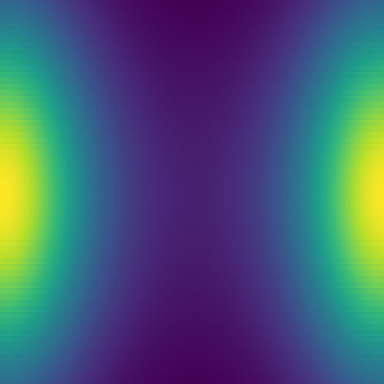
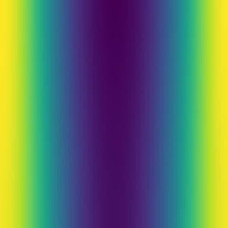
半平面チャート上の u(t=0 → 0.1): 上端(y 大)ほど実効拡散 y² が速い
独立参照実装と 6.7e-16・Σu/y² 保存 9.8e-16・最大値原理成立。